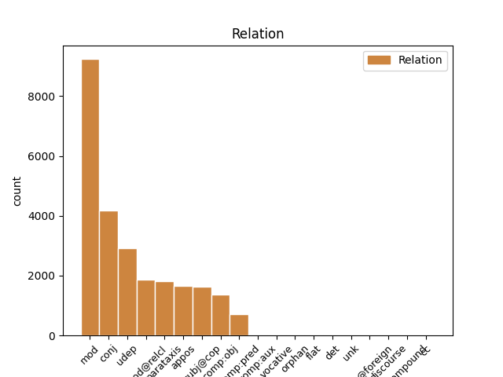
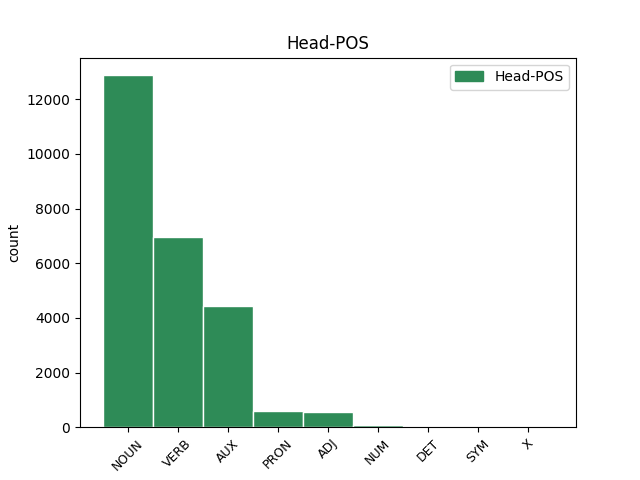
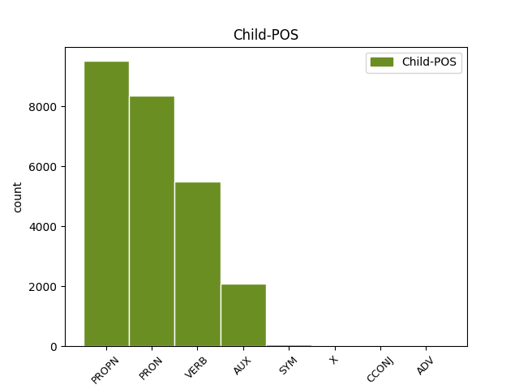

Distribution of features within this leaf



Agreement Rules sorted by frequency.
- When the dependent token is the modifer(mod) of the head token, and the head token is NOUN and the dependent token is PROPN.
1 Eesti Eesti PROPN S Case=Gen|Number=Sing 2 mod _ _
2 haridustase haridus_tase NOUN S Case=Nom|Number=Sing 0 _ _ _
3 : _ _ _ _ 0 _ _ _
4 esimene _ _ _ _ 0 _ _ _
5 tase _ _ _ _ 0 _ _ _
6 - _ _ _ _ 0 _ _ _
7 alg- _ _ _ _ 0 _ _ _
8 ja _ _ _ _ 0 _ _ _
9 põhiharidus _ _ _ _ 0 _ _ _
10 ; _ _ _ _ 0 _ _ _
11 teine _ _ _ _ 0 _ _ _
12 tase _ _ _ _ 0 _ _ _
13 - _ _ _ _ 0 _ _ _
14 keskharidus _ _ _ _ 0 _ _ _
15 , _ _ _ _ 0 _ _ _
16 kutseharidus _ _ _ _ 0 _ _ _
17 , _ _ _ _ 0 _ _ _
18 keskeriharidus _ _ _ _ 0 _ _ _
19 pärast _ _ _ _ 0 _ _ _
20 põhiharidust _ _ _ _ 0 _ _ _
21 ; _ _ _ _ 0 _ _ _
22 kolmas _ _ _ _ 0 _ _ _
23 tase _ _ _ _ 0 _ _ _
24 - _ _ _ _ 0 _ _ _
25 keskeriharidus _ _ _ _ 0 _ _ _
26 pärast _ _ _ _ 0 _ _ _
27 keskharidust _ _ _ _ 0 _ _ _
28 , _ _ _ _ 0 _ _ _
29 kõrgharidus _ _ _ _ 0 _ _ _
30 , _ _ _ _ 0 _ _ _
31 magistri- _ _ _ _ 0 _ _ _
32 ja _ _ _ _ 0 _ _ _
33 doktorikraad _ _ _ _ 0 _ _ _
34 . _ _ _ _ 0 _ _ _
1 Teiselt _ _ _ _ 0 _ _ _
2 poolt _ _ _ _ 0 _ _ _
3 , _ _ _ _ 0 _ _ _
4 just _ _ _ _ 0 _ _ _
5 nii _ _ _ _ 0 _ _ _
6 palga _ _ _ _ 0 _ _ _
7 kui _ _ _ _ 0 _ _ _
8 muude muu PRON P Case=Gen|Number=Plur|PronType=Ind 10 mod _ _
9 elanikkonna _ _ _ _ 0 _ _ _
10 sissetulekute sisse_tulek NOUN S Case=Gen|Number=Plur 0 _ _ _
11 kasv _ _ _ _ 0 _ _ _
12 peale _ _ _ _ 0 _ _ _
13 hoogsat _ _ _ _ 0 _ _ _
14 majanduskasvu _ _ _ _ 0 _ _ _
15 oli _ _ _ _ 0 _ _ _
16 teguriks _ _ _ _ 0 _ _ _
17 , _ _ _ _ 0 _ _ _
18 mis _ _ _ _ 0 _ _ _
19 tõstis _ _ _ _ 0 _ _ _
20 nõudlust _ _ _ _ 0 _ _ _
21 kodumaistele _ _ _ _ 0 _ _ _
22 teenustele _ _ _ _ 0 _ _ _
23 ja _ _ _ _ 0 _ _ _
24 aitas _ _ _ _ 0 _ _ _
25 hüppeliselt _ _ _ _ 0 _ _ _
26 tõsta _ _ _ _ 0 _ _ _
27 tööhõivet _ _ _ _ 0 _ _ _
28 . _ _ _ _ 0 _ _ _
1 Teiselt _ _ _ _ 0 _ _ _
2 poolt _ _ _ _ 0 _ _ _
3 , _ _ _ _ 0 _ _ _
4 just _ _ _ _ 0 _ _ _
5 nii _ _ _ _ 0 _ _ _
6 palga _ _ _ _ 0 _ _ _
7 kui _ _ _ _ 0 _ _ _
8 muude _ _ _ _ 0 _ _ _
9 elanikkonna _ _ _ _ 0 _ _ _
10 sissetulekute _ _ _ _ 0 _ _ _
11 kasv _ _ _ _ 0 _ _ _
12 peale _ _ _ _ 0 _ _ _
13 hoogsat _ _ _ _ 0 _ _ _
14 majanduskasvu _ _ _ _ 0 _ _ _
15 oli _ _ _ _ 0 _ _ _
16 teguriks _ _ _ _ 0 _ _ _
17 , _ _ _ _ 0 _ _ _
18 mis _ _ _ _ 0 _ _ _
19 tõstis tõstma VERB V Mood=Ind|Number=Sing|Person=3|Tense=Past|VerbForm=Fin|Voice=Act 0 _ _ _
20 nõudlust _ _ _ _ 0 _ _ _
21 kodumaistele _ _ _ _ 0 _ _ _
22 teenustele _ _ _ _ 0 _ _ _
23 ja _ _ _ _ 0 _ _ _
24 aitas aitama VERB V Mood=Ind|Number=Sing|Person=3|Tense=Past|VerbForm=Fin|Voice=Act 19 conj _ _
25 hüppeliselt _ _ _ _ 0 _ _ _
26 tõsta _ _ _ _ 0 _ _ _
27 tööhõivet _ _ _ _ 0 _ _ _
28 . _ _ _ _ 0 _ _ _
1 Taoliste _ _ _ _ 0 _ _ _
2 konkurentsivõime _ _ _ _ 0 _ _ _
3 ligilähedaste _ _ _ _ 0 _ _ _
4 " _ _ _ _ 0 _ _ _
5 esindajatena _ _ _ _ 0 _ _ _
6 " _ _ _ _ 0 _ _ _
7 võiks _ _ _ _ 0 _ _ _
8 esimese _ _ _ _ 0 _ _ _
9 lähenemise _ _ _ _ 0 _ _ _
10 korras _ _ _ _ 0 _ _ _
11 vaadelda _ _ _ _ 0 _ _ _
12 TÜ _ _ _ _ 0 _ _ _
13 professor _ _ _ _ 0 _ _ _
14 Urmas _ _ _ _ 0 _ _ _
15 Varblase _ _ _ _ 0 _ _ _
16 uurimuses _ _ _ _ 0 _ _ _
17 " _ _ _ _ 0 _ _ _
18 Tootlikkus _ _ _ _ 0 _ _ _
19 " _ _ _ _ 0 _ _ _
20 ( _ _ _ _ 0 _ _ _
21 2001 _ _ _ _ 0 _ _ _
22 ) _ _ _ _ 0 _ _ _
23 kasutatud _ _ _ _ 0 _ _ _
24 näitajat _ _ _ _ 0 _ _ _
25 tootlikkuse _ _ _ _ 0 _ _ _
26 töötaja _ _ _ _ 0 _ _ _
27 kohta _ _ _ _ 0 _ _ _
28 ja _ _ _ _ 0 _ _ _
29 Eesti _ _ _ _ 0 _ _ _
30 Panga _ _ _ _ 0 _ _ _
31 ökonomisti ökonomist NOUN S Case=Gen|Number=Sing 0 _ _ _
32 Martti Martti PROPN S Case=Nom|Number=Sing 31 appos _ _
33 Randveere _ _ _ _ 0 _ _ _
34 töös _ _ _ _ 0 _ _ _
35 Eesti _ _ _ _ 0 _ _ _
36 majandusstruktuuri _ _ _ _ 0 _ _ _
37 konvergentsi _ _ _ _ 0 _ _ _
38 kohta _ _ _ _ 0 _ _ _
39 ( _ _ _ _ 0 _ _ _
40 2002 _ _ _ _ 0 _ _ _
41 ) _ _ _ _ 0 _ _ _
42 kasutatud _ _ _ _ 0 _ _ _
43 lisandväärtuse _ _ _ _ 0 _ _ _
44 ning _ _ _ _ 0 _ _ _
45 temaga _ _ _ _ 0 _ _ _
46 seonduvad _ _ _ _ 0 _ _ _
47 näitajad _ _ _ _ 0 _ _ _
48 . _ _ _ _ 0 _ _ _
1 Ta tema PRON P Case=Nom|Number=Sing|Person=3|PronType=Prs 2 subj@cop _ _
2 on olema AUX V Mood=Ind|Number=Sing|Person=3|Tense=Pres|VerbForm=Fin|Voice=Act 0 _ _ _
3 olnud _ _ _ _ 0 _ _ _
4 majanduslikult _ _ _ _ 0 _ _ _
5 väga _ _ _ _ 0 _ _ _
6 kasulik _ _ _ _ 0 _ _ _
7 , _ _ _ _ 0 _ _ _
8 kuid _ _ _ _ 0 _ _ _
9 loonud _ _ _ _ 0 _ _ _
10 tööhõivet _ _ _ _ 0 _ _ _
11 loodetust _ _ _ _ 0 _ _ _
12 vähem _ _ _ _ 0 _ _ _
13 . _ _ _ _ 0 _ _ _
1 Perioodil periood NOUN S Case=Ade|Number=Sing 0 _ _ _
2 , _ _ _ _ 0 _ _ _
3 mis _ _ _ _ 0 _ _ _
4 eelnes eelnema VERB V Mood=Ind|Number=Sing|Person=3|Tense=Past|VerbForm=Fin|Voice=Act 1 mod@relcl _ _
5 tööpuuduse _ _ _ _ 0 _ _ _
6 hüppelisele _ _ _ _ 0 _ _ _
7 langusele _ _ _ _ 0 _ _ _
8 , _ _ _ _ 0 _ _ _
9 investeeriti _ _ _ _ 0 _ _ _
10 neisse _ _ _ _ 0 _ _ _
11 poliitikatesse _ _ _ _ 0 _ _ _
12 vägagi _ _ _ _ 0 _ _ _
13 palju _ _ _ _ 0 _ _ _
14 ( _ _ _ _ 0 _ _ _
15 1996. _ _ _ _ 0 _ _ _
16 aastal _ _ _ _ 0 _ _ _
17 1,75 _ _ _ _ 0 _ _ _
18 % _ _ _ _ 0 _ _ _
19 SKP-st _ _ _ _ 0 _ _ _
20 ) _ _ _ _ 0 _ _ _
21 . _ _ _ _ 0 _ _ _
1 Selle _ _ _ _ 0 _ _ _
2 tendentsi _ _ _ _ 0 _ _ _
3 seos _ _ _ _ 0 _ _ _
4 liikumisega _ _ _ _ 0 _ _ _
5 võib _ _ _ _ 0 _ _ _
6 olla _ _ _ _ 0 _ _ _
7 kahene _ _ _ _ 0 _ _ _
8 : _ _ _ _ 0 _ _ _
9 ühelt üks PRON P Case=Abl|Number=Sing|PronType=Ind 11 udep _ _
10 poolt _ _ _ _ 0 _ _ _
11 kaasnes kaasnema VERB V Mood=Ind|Number=Sing|Person=3|Tense=Past|VerbForm=Fin|Voice=Act 0 _ _ _
12 kiirete _ _ _ _ 0 _ _ _
13 muutustega _ _ _ _ 0 _ _ _
14 lühiajalise _ _ _ _ 0 _ _ _
15 tööpuuduse _ _ _ _ 0 _ _ _
16 suhteliselt _ _ _ _ 0 _ _ _
17 kõrge _ _ _ _ 0 _ _ _
18 tase _ _ _ _ 0 _ _ _
19 ( _ _ _ _ 0 _ _ _
20 eriti _ _ _ _ 0 _ _ _
21 enne _ _ _ _ 0 _ _ _
22 1992/1993 _ _ _ _ 0 _ _ _
23 ) _ _ _ _ 0 _ _ _
24 , _ _ _ _ 0 _ _ _
25 võrreldes _ _ _ _ 0 _ _ _
26 pikaajalise _ _ _ _ 0 _ _ _
27 tööpuudusega _ _ _ _ 0 _ _ _
28 . _ _ _ _ 0 _ _ _
1 Aastatel _ _ _ _ 0 _ _ _
2 1990 _ _ _ _ 0 _ _ _
3 - _ _ _ _ 0 _ _ _
4 1999 _ _ _ _ 0 _ _ _
5 vähenes vähenema VERB V Mood=Ind|Number=Sing|Person=3|Tense=Past|VerbForm=Fin|Voice=Act 0 _ _ _
6 Tšehhis Tšehhi PROPN S Case=Ine|Number=Sing 5 udep _ _
7 töökohtade _ _ _ _ 0 _ _ _
8 arv _ _ _ _ 0 _ _ _
9 vaid _ _ _ _ 0 _ _ _
10 12 _ _ _ _ 0 _ _ _
11 % _ _ _ _ 0 _ _ _
12 , _ _ _ _ 0 _ _ _
13 mis _ _ _ _ 0 _ _ _
14 on _ _ _ _ 0 _ _ _
15 palju _ _ _ _ 0 _ _ _
16 vähem _ _ _ _ 0 _ _ _
17 kui _ _ _ _ 0 _ _ _
18 Ungaris _ _ _ _ 0 _ _ _
19 ja _ _ _ _ 0 _ _ _
20 Sloveenias _ _ _ _ 0 _ _ _
21 ning _ _ _ _ 0 _ _ _
22 ka _ _ _ _ 0 _ _ _
23 Venemaal _ _ _ _ 0 _ _ _
24 . _ _ _ _ 0 _ _ _
1 Töö _ _ _ _ 0 _ _ _
2 " _ _ _ _ 0 _ _ _
3 koguhulk _ _ _ _ 0 _ _ _
4 " _ _ _ _ 0 _ _ _
5 on _ _ _ _ 0 _ _ _
6 vahemikus _ _ _ _ 0 _ _ _
7 1989-2001. _ _ _ _ 0 _ _ _
8 a. _ _ _ _ 0 _ _ _
9 vähenenud _ _ _ _ 0 _ _ _
10 mitme _ _ _ _ 0 _ _ _
11 ETU _ _ _ _ 0 _ _ _
12 näitaja _ _ _ _ 0 _ _ _
13 alusel _ _ _ _ 0 _ _ _
14 nagu _ _ _ _ 0 _ _ _
15 näiteks _ _ _ _ 0 _ _ _
16 keskmine _ _ _ _ 0 _ _ _
17 nädala _ _ _ _ 0 _ _ _
18 töötundide _ _ _ _ 0 _ _ _
19 arv _ _ _ _ 0 _ _ _
20 ja _ _ _ _ 0 _ _ _
21 kõrvaltööde _ _ _ _ 0 _ _ _
22 osakaal _ _ _ _ 0 _ _ _
23 ; _ _ _ _ 0 _ _ _
24 inimeste _ _ _ _ 0 _ _ _
25 osakaal _ _ _ _ 0 _ _ _
26 , _ _ _ _ 0 _ _ _
27 kes kes PRON P Case=Nom|Number=Plur|PronType=Int,Rel 28 comp:obj _ _
28 soovivad soovima VERB V Mood=Ind|Number=Plur|Person=3|Tense=Pres|VerbForm=Fin|Voice=Act 0 _ _ _
29 rohkem _ _ _ _ 0 _ _ _
30 töötada _ _ _ _ 0 _ _ _
31 kasvab _ _ _ _ 0 _ _ _
32 nii _ _ _ _ 0 _ _ _
33 nagu _ _ _ _ 0 _ _ _
34 ka _ _ _ _ 0 _ _ _
35 uue _ _ _ _ 0 _ _ _
36 ja _ _ _ _ 0 _ _ _
37 lisatöö _ _ _ _ 0 _ _ _
38 otsijate _ _ _ _ 0 _ _ _
39 osakaal _ _ _ _ 0 _ _ _
40 ning _ _ _ _ 0 _ _ _
41 inimeste _ _ _ _ 0 _ _ _
42 osakaal _ _ _ _ 0 _ _ _
43 , _ _ _ _ 0 _ _ _
44 kes _ _ _ _ 0 _ _ _
45 töötavad _ _ _ _ 0 _ _ _
46 osaajaga _ _ _ _ 0 _ _ _
47 , _ _ _ _ 0 _ _ _
48 kuna _ _ _ _ 0 _ _ _
49 ei _ _ _ _ 0 _ _ _
50 leia _ _ _ _ 0 _ _ _
51 täisaja _ _ _ _ 0 _ _ _
52 tööd _ _ _ _ 0 _ _ _
53 . _ _ _ _ 0 _ _ _
1 Töötud _ _ _ _ 0 _ _ _
2 , _ _ _ _ 0 _ _ _
3 kes _ _ _ _ 0 _ _ _
4 on _ _ _ _ 0 _ _ _
5 loobunud _ _ _ _ 0 _ _ _
6 tööhõivetalituse _ _ _ _ 0 _ _ _
7 poolt _ _ _ _ 0 _ _ _
8 pakutud _ _ _ _ 0 _ _ _
9 tööst _ _ _ _ 0 _ _ _
10 , _ _ _ _ 0 _ _ _
11 jagunevad jagunema VERB V Mood=Ind|Number=Plur|Person=3|Tense=Pres|VerbForm=Fin|Voice=Act 0 _ _ _
12 alates _ _ _ _ 0 _ _ _
13 1997. _ _ _ _ 0 _ _ _
14 a _ _ _ _ 0 _ _ _
15 enam-vähem _ _ _ _ 0 _ _ _
16 võrdselt _ _ _ _ 0 _ _ _
17 kaheks _ _ _ _ 0 _ _ _
18 ( _ _ _ _ 0 _ _ _
19 tabel _ _ _ _ 0 _ _ _
20 10 _ _ _ _ 0 _ _ _
21 ) _ _ _ _ 0 _ _ _
22 : _ _ _ _ 0 _ _ _
23 umbes _ _ _ _ 0 _ _ _
24 pooled _ _ _ _ 0 _ _ _
25 keelduvad keelduma VERB V Mood=Ind|Number=Plur|Person=3|Tense=Pres|VerbForm=Fin|Voice=Act 11 parataxis _ _
26 ise _ _ _ _ 0 _ _ _
27 ja _ _ _ _ 0 _ _ _
28 teine _ _ _ _ 0 _ _ _
29 ca _ _ _ _ 0 _ _ _
30 50 _ _ _ _ 0 _ _ _
31 % _ _ _ _ 0 _ _ _
32 on _ _ _ _ 0 _ _ _
33 selliseid _ _ _ _ 0 _ _ _
34 , _ _ _ _ 0 _ _ _
35 keda _ _ _ _ 0 _ _ _
36 tööandja _ _ _ _ 0 _ _ _
37 ei _ _ _ _ 0 _ _ _
38 võta _ _ _ _ 0 _ _ _
39 tööle _ _ _ _ 0 _ _ _
40 . _ _ _ _ 0 _ _ _
1 Eriti _ _ _ _ 0 _ _ _
2 tugevat _ _ _ _ 0 _ _ _
3 positiivset _ _ _ _ 0 _ _ _
4 mõju _ _ _ _ 0 _ _ _
5 avaldavad _ _ _ _ 0 _ _ _
6 kõigil _ _ _ _ 0 _ _ _
7 aastatel _ _ _ _ 0 _ _ _
8 tööhõivele _ _ _ _ 0 _ _ _
9 need _ _ _ _ 0 _ _ _
10 ettevõtted ette_võte NOUN S Case=Nom|Number=Plur 0 _ _ _
11 , _ _ _ _ 0 _ _ _
12 kes _ _ _ _ 0 _ _ _
13 on olema AUX V Mood=Ind|Number=Plur|Person=3|Tense=Pres|VerbForm=Fin|Voice=Act 10 mod@relcl _ _
14 investeerinud _ _ _ _ 0 _ _ _
15 nii _ _ _ _ 0 _ _ _
16 ehitistesse _ _ _ _ 0 _ _ _
17 kui _ _ _ _ 0 _ _ _
18 ka _ _ _ _ 0 _ _ _
19 masinatesse _ _ _ _ 0 _ _ _
20 , _ _ _ _ 0 _ _ _
21 mis _ _ _ _ 0 _ _ _
22 viitab _ _ _ _ 0 _ _ _
23 otseselt _ _ _ _ 0 _ _ _
24 tootmise _ _ _ _ 0 _ _ _
25 laienemisele _ _ _ _ 0 _ _ _
26 . _ _ _ _ 0 _ _ _
1 Hollandi _ _ _ _ 0 _ _ _
2 näide _ _ _ _ 0 _ _ _
3 1980. _ _ _ _ 0 _ _ _
4 aastatest _ _ _ _ 0 _ _ _
5 kirjeldab _ _ _ _ 0 _ _ _
6 olukorda _ _ _ _ 0 _ _ _
7 , _ _ _ _ 0 _ _ _
8 kus _ _ _ _ 0 _ _ _
9 palgatase _ _ _ _ 0 _ _ _
10 on olema AUX V Mood=Ind|Number=Sing|Person=3|Tense=Pres|VerbForm=Fin|Voice=Act 0 _ _ _
11 tõusnud _ _ _ _ 0 _ _ _
12 , _ _ _ _ 0 _ _ _
13 võrreldes _ _ _ _ 0 _ _ _
14 tootluse _ _ _ _ 0 _ _ _
15 dünaamikaga _ _ _ _ 0 _ _ _
16 juba _ _ _ _ 0 _ _ _
17 liiga _ _ _ _ 0 _ _ _
18 kõrgele _ _ _ _ 0 _ _ _
19 ning _ _ _ _ 0 _ _ _
20 seetõttu _ _ _ _ 0 _ _ _
21 osutus osutuma VERB V Mood=Ind|Number=Sing|Person=3|Tense=Past|VerbForm=Fin|Voice=Act 10 conj _ _
22 vajalikuks _ _ _ _ 0 _ _ _
23 kompleks _ _ _ _ 0 _ _ _
24 abinõusid _ _ _ _ 0 _ _ _
25 , _ _ _ _ 0 _ _ _
26 kus _ _ _ _ 0 _ _ _
27 palgakasvu _ _ _ _ 0 _ _ _
28 pidurdumine _ _ _ _ 0 _ _ _
29 oli _ _ _ _ 0 _ _ _
30 võrreldes _ _ _ _ 0 _ _ _
31 abiraha _ _ _ _ 0 _ _ _
32 maksmise _ _ _ _ 0 _ _ _
33 piiramise _ _ _ _ 0 _ _ _
34 ja _ _ _ _ 0 _ _ _
35 tööturu _ _ _ _ 0 _ _ _
36 liberaliseerimisega _ _ _ _ 0 _ _ _
37 üheks _ _ _ _ 0 _ _ _
38 paketi _ _ _ _ 0 _ _ _
39 elemendiks _ _ _ _ 0 _ _ _
40 . _ _ _ _ 0 _ _ _
1 Milline milline PRON P Case=Nom|Number=Sing|PronType=Rel 2 comp:pred _ _
2 oli olema AUX V Mood=Ind|Number=Sing|Person=3|Tense=Past|VerbForm=Fin|Voice=Act 0 _ _ _
3 aga _ _ _ _ 0 _ _ _
4 selle _ _ _ _ 0 _ _ _
5 teguri _ _ _ _ 0 _ _ _
6 suhteline _ _ _ _ 0 _ _ _
7 tähtsus _ _ _ _ 0 _ _ _
8 tööpuuduse _ _ _ _ 0 _ _ _
9 suurenemisel _ _ _ _ 0 _ _ _
10 , _ _ _ _ 0 _ _ _
11 on _ _ _ _ 0 _ _ _
12 siiski _ _ _ _ 0 _ _ _
13 kättesaadava _ _ _ _ 0 _ _ _
14 materjali _ _ _ _ 0 _ _ _
15 baasil _ _ _ _ 0 _ _ _
16 raske _ _ _ _ 0 _ _ _
17 öelda _ _ _ _ 0 _ _ _
18 . _ _ _ _ 0 _ _ _
1 vaeghõivatud _ _ _ _ 0 _ _ _
2 - _ _ _ _ 0 _ _ _
3 soovivad soovima VERB V Mood=Ind|Number=Plur|Person=3|Tense=Pres|VerbForm=Fin|Voice=Act 0 _ _ _
4 rohkem _ _ _ _ 0 _ _ _
5 töötada _ _ _ _ 0 _ _ _
6 ja _ _ _ _ 0 _ _ _
7 on olema AUX V Mood=Ind|Number=Plur|Person=3|Tense=Pres|VerbForm=Fin|Voice=Act 3 conj _ _
8 valmis _ _ _ _ 0 _ _ _
9 lisatööd _ _ _ _ 0 _ _ _
10 kohe _ _ _ _ 0 _ _ _
11 ( _ _ _ _ 0 _ _ _
12 kahe _ _ _ _ 0 _ _ _
13 nädala _ _ _ _ 0 _ _ _
14 jooksul _ _ _ _ 0 _ _ _
15 ) _ _ _ _ 0 _ _ _
16 vastu _ _ _ _ 0 _ _ _
17 võtma _ _ _ _ 0 _ _ _
1 Töö _ _ _ _ 0 _ _ _
2 " _ _ _ _ 0 _ _ _
3 koguhulk _ _ _ _ 0 _ _ _
4 " _ _ _ _ 0 _ _ _
5 on olema AUX V Mood=Ind|Number=Sing|Person=3|Tense=Pres|VerbForm=Fin|Voice=Act 0 _ _ _
6 vahemikus _ _ _ _ 0 _ _ _
7 1989-2001. _ _ _ _ 0 _ _ _
8 a. _ _ _ _ 0 _ _ _
9 vähenenud _ _ _ _ 0 _ _ _
10 mitme _ _ _ _ 0 _ _ _
11 ETU _ _ _ _ 0 _ _ _
12 näitaja _ _ _ _ 0 _ _ _
13 alusel _ _ _ _ 0 _ _ _
14 nagu _ _ _ _ 0 _ _ _
15 näiteks _ _ _ _ 0 _ _ _
16 keskmine _ _ _ _ 0 _ _ _
17 nädala _ _ _ _ 0 _ _ _
18 töötundide _ _ _ _ 0 _ _ _
19 arv _ _ _ _ 0 _ _ _
20 ja _ _ _ _ 0 _ _ _
21 kõrvaltööde _ _ _ _ 0 _ _ _
22 osakaal _ _ _ _ 0 _ _ _
23 ; _ _ _ _ 0 _ _ _
24 inimeste _ _ _ _ 0 _ _ _
25 osakaal _ _ _ _ 0 _ _ _
26 , _ _ _ _ 0 _ _ _
27 kes _ _ _ _ 0 _ _ _
28 soovivad _ _ _ _ 0 _ _ _
29 rohkem _ _ _ _ 0 _ _ _
30 töötada _ _ _ _ 0 _ _ _
31 kasvab kasvama VERB V Mood=Ind|Number=Sing|Person=3|Tense=Pres|VerbForm=Fin|Voice=Act 5 parataxis _ _
32 nii _ _ _ _ 0 _ _ _
33 nagu _ _ _ _ 0 _ _ _
34 ka _ _ _ _ 0 _ _ _
35 uue _ _ _ _ 0 _ _ _
36 ja _ _ _ _ 0 _ _ _
37 lisatöö _ _ _ _ 0 _ _ _
38 otsijate _ _ _ _ 0 _ _ _
39 osakaal _ _ _ _ 0 _ _ _
40 ning _ _ _ _ 0 _ _ _
41 inimeste _ _ _ _ 0 _ _ _
42 osakaal _ _ _ _ 0 _ _ _
43 , _ _ _ _ 0 _ _ _
44 kes _ _ _ _ 0 _ _ _
45 töötavad _ _ _ _ 0 _ _ _
46 osaajaga _ _ _ _ 0 _ _ _
47 , _ _ _ _ 0 _ _ _
48 kuna _ _ _ _ 0 _ _ _
49 ei _ _ _ _ 0 _ _ _
50 leia _ _ _ _ 0 _ _ _
51 täisaja _ _ _ _ 0 _ _ _
52 tööd _ _ _ _ 0 _ _ _
53 . _ _ _ _ 0 _ _ _
1 Viimase _ _ _ _ 0 _ _ _
2 puhul _ _ _ _ 0 _ _ _
3 on olema AUX V Mood=Ind|Number=Sing|Person=3|Tense=Pres|VerbForm=Fin|Voice=Act 0 _ _ _
4 näiteks _ _ _ _ 0 _ _ _
5 Kreenholmi _ _ _ _ 0 _ _ _
6 Manufaktuur Manufaktuur PROPN S Case=Nom|Number=Sing 3 subj@cop _ SpaceAfter=No
7 , _ _ _ _ 0 _ _ _
8 kellel _ _ _ _ 0 _ _ _
9 tekkisid _ _ _ _ 0 _ _ _
10 probleemid _ _ _ _ 0 _ _ _
11 USA _ _ _ _ 0 _ _ _
12 turul _ _ _ _ 0 _ _ _
13 seoses _ _ _ _ 0 _ _ _
14 aasia _ _ _ _ 0 _ _ _
15 kauba _ _ _ _ 0 _ _ _
16 sisenemisega _ _ _ _ 0 _ _ _
17 sinna _ _ _ _ 0 _ _ _
18 . _ _ _ _ 0 _ _ _
1 Töölt _ _ _ _ 0 _ _ _
2 ajutises _ _ _ _ 0 _ _ _
3 puudumises _ _ _ _ 0 _ _ _
4 on olema AUX V Mood=Ind|Number=Sing|Person=3|Tense=Pres|VerbForm=Fin|Voice=Act 0 _ _ _
5 vähenenud _ _ _ _ 0 _ _ _
6 sundpuhkuste _ _ _ _ 0 _ _ _
7 osakaal _ _ _ _ 0 _ _ _
8 ja _ _ _ _ 0 _ _ _
9 suurenenud _ _ _ _ 0 _ _ _
10 puhkuste _ _ _ _ 0 _ _ _
11 osakaal _ _ _ _ 0 _ _ _
12 ning _ _ _ _ 0 _ _ _
13 majanduslikel _ _ _ _ 0 _ _ _
14 põhjustel _ _ _ _ 0 _ _ _
15 on olema AUX V Mood=Ind|Number=Sing|Person=3|Tense=Pres|VerbForm=Fin|Voice=Act 4 conj _ _
16 selles _ _ _ _ 0 _ _ _
17 üha _ _ _ _ 0 _ _ _
18 vähem _ _ _ _ 0 _ _ _
19 rolli _ _ _ _ 0 _ _ _
20 . _ _ _ _ 0 _ _ _
1 Teiselt teine PRON P Case=Abl|Number=Sing|PronType=Dem 15 udep _ _
2 poolt _ _ _ _ 0 _ _ _
3 , _ _ _ _ 0 _ _ _
4 just _ _ _ _ 0 _ _ _
5 nii _ _ _ _ 0 _ _ _
6 palga _ _ _ _ 0 _ _ _
7 kui _ _ _ _ 0 _ _ _
8 muude _ _ _ _ 0 _ _ _
9 elanikkonna _ _ _ _ 0 _ _ _
10 sissetulekute _ _ _ _ 0 _ _ _
11 kasv _ _ _ _ 0 _ _ _
12 peale _ _ _ _ 0 _ _ _
13 hoogsat _ _ _ _ 0 _ _ _
14 majanduskasvu _ _ _ _ 0 _ _ _
15 oli olema AUX V Mood=Ind|Number=Sing|Person=3|Tense=Past|VerbForm=Fin|Voice=Act 0 _ _ _
16 teguriks _ _ _ _ 0 _ _ _
17 , _ _ _ _ 0 _ _ _
18 mis _ _ _ _ 0 _ _ _
19 tõstis _ _ _ _ 0 _ _ _
20 nõudlust _ _ _ _ 0 _ _ _
21 kodumaistele _ _ _ _ 0 _ _ _
22 teenustele _ _ _ _ 0 _ _ _
23 ja _ _ _ _ 0 _ _ _
24 aitas _ _ _ _ 0 _ _ _
25 hüppeliselt _ _ _ _ 0 _ _ _
26 tõsta _ _ _ _ 0 _ _ _
27 tööhõivet _ _ _ _ 0 _ _ _
28 . _ _ _ _ 0 _ _ _
1 Tõenäoliselt _ _ _ _ 0 _ _ _
2 tekib _ _ _ _ 0 _ _ _
3 tööhõive _ _ _ _ 0 _ _ _
4 kasvu _ _ _ _ 0 _ _ _
5 efekt _ _ _ _ 0 _ _ _
6 eelkõige _ _ _ _ 0 _ _ _
7 töömahukate _ _ _ _ 0 _ _ _
8 kohalike _ _ _ _ 0 _ _ _
9 teenuste _ _ _ _ 0 _ _ _
10 kasvu _ _ _ _ 0 _ _ _
11 kaudu _ _ _ _ 0 _ _ _
12 ( _ _ _ _ 0 _ _ _
13 sama _ _ _ _ 0 _ _ _
14 efekt _ _ _ _ 0 _ _ _
15 oli olema AUX V Mood=Ind|Number=Sing|Person=3|Tense=Past|VerbForm=Fin|Voice=Act 0 _ _ _
16 täheldatava _ _ _ _ 0 _ _ _
17 Iirimaal Iiri_maa PROPN S Case=Ade|Number=Sing 15 udep _ _
18 90ndate _ _ _ _ 0 _ _ _
19 lõpul _ _ _ _ 0 _ _ _
20 ) _ _ _ _ 0 _ _ _
21 . _ _ _ _ 0 _ _ _
1 Kokku _ _ _ _ 0 _ _ _
2 on _ _ _ _ 0 _ _ _
3 trend _ _ _ _ 0 _ _ _
4 siiski _ _ _ _ 0 _ _ _
5 kergelt _ _ _ _ 0 _ _ _
6 positiivne _ _ _ _ 0 _ _ _
7 , _ _ _ _ 0 _ _ _
8 järeldatakse _ _ _ _ 0 _ _ _
9 tööelu _ _ _ _ 0 _ _ _
10 baromeetris baromeeter NOUN S Case=Ine|Number=Sing 0 _ _ _
11 ( _ _ _ _ 0 _ _ _
12 Antila Antila PROPN S Case=Nom|Number=Sing 10 parataxis _ SpaceAfter=No
13 , _ _ _ _ 0 _ _ _
14 J _ _ _ _ 0 _ _ _
15 , _ _ _ _ 0 _ _ _
16 Ylöstalo _ _ _ _ 0 _ _ _
17 , _ _ _ _ 0 _ _ _
18 P _ _ _ _ 0 _ _ _
19 , _ _ _ _ 0 _ _ _
20 1999 _ _ _ _ 0 _ _ _
21 ) _ _ _ _ 0 _ _ _
22 . _ _ _ _ 0 _ _ _
1 Tycho _ _ _ _ 0 _ _ _
2 Brahe _ _ _ _ 0 _ _ _
3 elu _ _ _ _ 0 _ _ _
4 viimasel _ _ _ _ 0 _ _ _
5 aastal _ _ _ _ 0 _ _ _
6 tõi tooma VERB V Mood=Ind|Number=Sing|Person=3|Tense=Past|VerbForm=Fin|Voice=Act 0 _ _ _
7 saatus _ _ _ _ 0 _ _ _
8 tema _ _ _ _ 0 _ _ _
9 assistendiks _ _ _ _ 0 _ _ _
10 Johann Johann PROPN S Case=Nom|Number=Sing 6 comp:obj _ _
11 Kepleri _ _ _ _ 0 _ _ _
12 ( _ _ _ _ 0 _ _ _
13 1571-1630 _ _ _ _ 0 _ _ _
14 ) _ _ _ _ 0 _ _ _
15 . _ _ _ _ 0 _ _ _
1 Nagu _ _ _ _ 0 _ _ _
2 alljärgnevast _ _ _ _ 0 _ _ _
3 tabelist _ _ _ _ 0 _ _ _
4 näha _ _ _ _ 0 _ _ _
5 , _ _ _ _ 0 _ _ _
6 on _ _ _ _ 0 _ _ _
7 nende tema PRON P Case=Gen|Number=Plur|Person=3|PronType=Prs 0 _ _ _
8 puhul _ _ _ _ 0 _ _ _
9 , _ _ _ _ 0 _ _ _
10 kes _ _ _ _ 0 _ _ _
11 kursustel _ _ _ _ 0 _ _ _
12 osalevad osalema VERB V Mood=Ind|Number=Plur|Person=3|Tense=Pres|VerbForm=Fin|Voice=Act 7 mod@relcl _ SpaceAfter=No
13 , _ _ _ _ 0 _ _ _
14 kõige _ _ _ _ 0 _ _ _
15 tõenäolisem _ _ _ _ 0 _ _ _
16 osavõtt _ _ _ _ 0 _ _ _
17 suhteliselt _ _ _ _ 0 _ _ _
18 lühiajalistest _ _ _ _ 0 _ _ _
19 - _ _ _ _ 0 _ _ _
20 kuni _ _ _ _ 0 _ _ _
21 ühekuulistest _ _ _ _ 0 _ _ _
22 kursustest _ _ _ _ 0 _ _ _
23 . _ _ _ _ 0 _ _ _
1 Ettevõtte _ _ _ _ 0 _ _ _
2 tulumaksuerisus _ _ _ _ 0 _ _ _
3 Eestis _ _ _ _ 0 _ _ _
4 on _ _ _ _ 0 _ _ _
5 tõenäoliselt _ _ _ _ 0 _ _ _
6 stiimul _ _ _ _ 0 _ _ _
7 Soome Soome PROPN S Case=Gen|Number=Sing 10 udep _ _
8 ja _ _ _ _ 0 _ _ _
9 Rootsi _ _ _ _ 0 _ _ _
10 väike- väike ADJ A Case=Gen|Degree=Pos|Hyph=Yes|Number=Sing 0 _ _ _
11 ja _ _ _ _ 0 _ _ _
12 keskmistele _ _ _ _ 0 _ _ _
13 ettevõtetele _ _ _ _ 0 _ _ _
14 , _ _ _ _ 0 _ _ _
15 kelle _ _ _ _ 0 _ _ _
16 potentsiaal _ _ _ _ 0 _ _ _
17 veel _ _ _ _ 0 _ _ _
18 odavamatele _ _ _ _ 0 _ _ _
19 ja _ _ _ _ 0 _ _ _
20 kaugemal _ _ _ _ 0 _ _ _
21 asuvatele _ _ _ _ 0 _ _ _
22 turgudele _ _ _ _ 0 _ _ _
23 liikuda _ _ _ _ 0 _ _ _
24 on _ _ _ _ 0 _ _ _
25 piiratud _ _ _ _ 0 _ _ _
26 . _ _ _ _ 0 _ _ _
1 Siin _ _ _ _ 0 _ _ _
2 piirdume _ _ _ _ 0 _ _ _
3 vaid _ _ _ _ 0 _ _ _
4 nendega _ _ _ _ 0 _ _ _
5 , _ _ _ _ 0 _ _ _
6 mis _ _ _ _ 0 _ _ _
7 toimuvad _ _ _ _ 0 _ _ _
8 meie mina PRON P Case=Gen|Number=Plur|Person=1|PronType=Prs 0 _ _ _
9 endi ise PRON P Case=Gen|Number=Plur|PronType=Prs|Reflex=Yes 8 mod _ _
10 Galaktika _ _ _ _ 0 _ _ _
11 piirides _ _ _ _ 0 _ _ _
12 . _ _ _ _ 0 _ _ _
1 Kuigi _ _ _ _ 0 _ _ _
2 kogutootlikkus _ _ _ _ 0 _ _ _
3 on _ _ _ _ 0 _ _ _
4 ulatuslikum _ _ _ _ 0 _ _ _
5 majanduse _ _ _ _ 0 _ _ _
6 efektiivsuse _ _ _ _ 0 _ _ _
7 mõõt _ _ _ _ 0 _ _ _
8 kui _ _ _ _ 0 _ _ _
9 tööjõu _ _ _ _ 0 _ _ _
10 tootlikkus _ _ _ _ 0 _ _ _
11 , _ _ _ _ 0 _ _ _
12 võime _ _ _ _ 0 _ _ _
13 kapitali _ _ _ _ 0 _ _ _
14 tootlikkuse _ _ _ _ 0 _ _ _
15 siiski _ _ _ _ 0 _ _ _
16 arvutamata _ _ _ _ 0 _ _ _
17 jätta _ _ _ _ 0 _ _ _
18 tingimustes _ _ _ _ 0 _ _ _
19 , _ _ _ _ 0 _ _ _
20 kus _ _ _ _ 0 _ _ _
21 tööjõu _ _ _ _ 0 _ _ _
22 tootlikkus _ _ _ _ 0 _ _ _
23 ja _ _ _ _ 0 _ _ _
24 kogutootlikkus _ _ _ _ 0 _ _ _
25 liiguvad _ _ _ _ 0 _ _ _
26 üheskoos _ _ _ _ 0 _ _ _
27 - _ _ _ _ 0 _ _ _
28 nagu _ _ _ _ 0 _ _ _
29 see _ _ _ _ 0 _ _ _
30 oli olema AUX V Mood=Ind|Number=Sing|Person=3|Tense=Past|VerbForm=Fin|Voice=Act 0 _ _ _
31 Eestis Eesti PROPN S Case=Ine|Number=Sing 30 comp:pred _ SpaceAfter=No
32 , _ _ _ _ 0 _ _ _
33 Venemaal _ _ _ _ 0 _ _ _
34 ja _ _ _ _ 0 _ _ _
35 teisteski _ _ _ _ 0 _ _ _
36 üleminekuriikides _ _ _ _ 0 _ _ _
37 ( _ _ _ _ 0 _ _ _
38 De _ _ _ _ 0 _ _ _
39 Broeck _ _ _ _ 0 _ _ _
40 ja _ _ _ _ 0 _ _ _
41 Koen _ _ _ _ 0 _ _ _
42 , _ _ _ _ 0 _ _ _
43 2000 _ _ _ _ 0 _ _ _
44 ) _ _ _ _ 0 _ _ _
45 . _ _ _ _ 0 _ _ _
1 Väga _ _ _ _ 0 _ _ _
2 tugev _ _ _ _ 0 _ _ _
3 on _ _ _ _ 0 _ _ _
4 ka _ _ _ _ 0 _ _ _
5 näitaja _ _ _ _ 0 _ _ _
6 " _ _ _ _ 0 _ _ _
7 väliskapitali _ _ _ _ 0 _ _ _
8 osakaal _ _ _ _ 0 _ _ _
9 aktsiakapitalis _ _ _ _ 0 _ _ _
10 " _ _ _ _ 0 _ _ _
11 mõju _ _ _ _ 0 _ _ _
12 tööhõive _ _ _ _ 0 _ _ _
13 kasvule _ _ _ _ 0 _ _ _
14 , _ _ _ _ 0 _ _ _
15 mida _ _ _ _ 0 _ _ _
16 võib _ _ _ _ 0 _ _ _
17 interpreteerida _ _ _ _ 0 _ _ _
18 sõnadega _ _ _ _ 0 _ _ _
19 " _ _ _ _ 0 _ _ _
20 kapital _ _ _ _ 0 _ _ _
21 on _ _ _ _ 0 _ _ _
22 kapital _ _ _ _ 0 _ _ _
23 seda see PRON P Case=Par|Number=Sing|PronType=Dem 24 udep _ _
24 suuremal suurem ADJ A Case=Ade|Degree=Cmp|Number=Sing 0 _ _ _
25 määral _ _ _ _ 0 _ _ _
26 , _ _ _ _ 0 _ _ _
27 mida _ _ _ _ 0 _ _ _
28 välismaisem _ _ _ _ 0 _ _ _
29 ta _ _ _ _ 0 _ _ _
30 on _ _ _ _ 0 _ _ _
31 " _ _ _ _ 0 _ _ _
32 eelkõige _ _ _ _ 0 _ _ _
33 seetõttu _ _ _ _ 0 _ _ _
34 , _ _ _ _ 0 _ _ _
35 et _ _ _ _ 0 _ _ _
36 kapitaliga _ _ _ _ 0 _ _ _
37 liigub _ _ _ _ 0 _ _ _
38 traditsiooniliselt _ _ _ _ 0 _ _ _
39 kaasa _ _ _ _ 0 _ _ _
40 ka _ _ _ _ 0 _ _ _
41 oskusteave _ _ _ _ 0 _ _ _
42 . _ _ _ _ 0 _ _ _
1 Kuigi _ _ _ _ 0 _ _ _
2 kapitali _ _ _ _ 0 _ _ _
3 sissevoolu _ _ _ _ 0 _ _ _
4 mõju _ _ _ _ 0 _ _ _
5 tööhõivele _ _ _ _ 0 _ _ _
6 ei _ _ _ _ 0 _ _ _
7 ole _ _ _ _ 0 _ _ _
8 ilmselt _ _ _ _ 0 _ _ _
9 ühemõtteliselt _ _ _ _ 0 _ _ _
10 positiivne _ _ _ _ 0 _ _ _
11 ( _ _ _ _ 0 _ _ _
12 kapitali _ _ _ _ 0 _ _ _
13 sissevool _ _ _ _ 0 _ _ _
14 Eestisse _ _ _ _ 0 _ _ _
15 on _ _ _ _ 0 _ _ _
16 toimunud _ _ _ _ 0 _ _ _
17 ikkagi _ _ _ _ 0 _ _ _
18 koos _ _ _ _ 0 _ _ _
19 tööpuuduse _ _ _ _ 0 _ _ _
20 kasvuga _ _ _ _ 0 _ _ _
21 viimase _ _ _ _ 0 _ _ _
22 kümnendi _ _ _ _ 0 _ _ _
23 jooksul _ _ _ _ 0 _ _ _
24 ) _ _ _ _ 0 _ _ _
25 , _ _ _ _ 0 _ _ _
26 näitab näitama VERB V Mood=Ind|Number=Sing|Person=3|Tense=Pres|VerbForm=Fin|Voice=Act 0 _ _ _
27 meie _ _ _ _ 0 _ _ _
28 empiiriline _ _ _ _ 0 _ _ _
29 analüüs _ _ _ _ 0 _ _ _
30 pigem _ _ _ _ 0 _ _ _
31 kapitali _ _ _ _ 0 _ _ _
32 sissevoolu _ _ _ _ 0 _ _ _
33 positiivset _ _ _ _ 0 _ _ _
34 mõju _ _ _ _ 0 _ _ _
35 ( _ _ _ _ 0 _ _ _
36 mis _ _ _ _ 0 _ _ _
37 oli olema AUX V Mood=Ind|Number=Sing|Person=3|Tense=Past|VerbForm=Fin|Voice=Act 26 parataxis _ _
38 eriti _ _ _ _ 0 _ _ _
39 ilmne _ _ _ _ 0 _ _ _
40 1999. _ _ _ _ 0 _ _ _
41 a. _ _ _ _ 0 _ _ _
42 ja _ _ _ _ 0 _ _ _
43 pigem _ _ _ _ 0 _ _ _
44 neutraalne _ _ _ _ 0 _ _ _
45 2000. _ _ _ _ 0 _ _ _
46 a. _ _ _ _ 0 _ _ _
47 ) _ _ _ _ 0 _ _ _
48 . _ _ _ _ 0 _ _ _
1 Eesti _ _ _ _ 0 _ _ _
2 keskmise _ _ _ _ 0 _ _ _
3 palga _ _ _ _ 0 _ _ _
4 suhteline _ _ _ _ 0 _ _ _
5 tõus _ _ _ _ 0 _ _ _
6 ( _ _ _ _ 0 _ _ _
7 protsenti _ _ _ _ 0 _ _ _
8 aastas _ _ _ _ 0 _ _ _
9 ) _ _ _ _ 0 _ _ _
10 on olema AUX V Mood=Ind|Number=Sing|Person=3|Tense=Pres|VerbForm=Fin|Voice=Act 0 _ _ _
11 olnud _ _ _ _ 0 _ _ _
12 viimase _ _ _ _ 0 _ _ _
13 kümne _ _ _ _ 0 _ _ _
14 aasta _ _ _ _ 0 _ _ _
15 jooksul _ _ _ _ 0 _ _ _
16 ühtlaselt _ _ _ _ 0 _ _ _
17 aeglustuv _ _ _ _ 0 _ _ _
18 - _ _ _ _ 0 _ _ _
19 palga _ _ _ _ 0 _ _ _
20 kasvades _ _ _ _ 0 _ _ _
21 on olema AUX V Mood=Ind|Number=Sing|Person=3|Tense=Pres|VerbForm=Fin|Voice=Act 10 parataxis _ _
22 palgatõus _ _ _ _ 0 _ _ _
23 vähenenud _ _ _ _ 0 _ _ _
24 . _ _ _ _ 0 _ _ _
1 Et _ _ _ _ 0 _ _ _
2 Eesti _ _ _ _ 0 _ _ _
3 Haridus- _ _ _ _ 0 _ _ _
4 ja _ _ _ _ 0 _ _ _
5 Teadusministeeriumis _ _ _ _ 0 _ _ _
6 puudub _ _ _ _ 0 _ _ _
7 haridustehnoloogilise _ _ _ _ 0 _ _ _
8 kompetentsiga _ _ _ _ 0 _ _ _
9 osakond _ _ _ _ 0 _ _ _
10 , _ _ _ _ 0 _ _ _
11 siis _ _ _ _ 0 _ _ _
12 esindavad _ _ _ _ 0 _ _ _
13 Eestit _ _ _ _ 0 _ _ _
14 projektis _ _ _ _ 0 _ _ _
15 Tallinna _ _ _ _ 0 _ _ _
16 Ülikooli _ _ _ _ 0 _ _ _
17 haridustehnoloogia _ _ _ _ 0 _ _ _
18 keskus keskus NOUN S Case=Nom|Number=Sing 0 _ _ _
19 ja _ _ _ _ 0 _ _ _
20 Tiigrihüppe _ _ _ _ 0 _ _ _
21 Sihtasutus Siht_asutus PROPN S Case=Nom|Number=Sing 18 conj _ SpaceAfter=No
22 . _ _ _ _ 0 _ _ _
1 Eesti _ _ _ _ 0 _ _ _
2 situatsiooni _ _ _ _ 0 _ _ _
3 aastal _ _ _ _ 0 _ _ _
4 2002 _ _ _ _ 0 _ _ _
5 võib _ _ _ _ 0 _ _ _
6 interpreteerida _ _ _ _ 0 _ _ _
7 mõlemat _ _ _ _ 0 _ _ _
8 pidi _ _ _ _ 0 _ _ _
9 : _ _ _ _ 0 _ _ _
10 esiteks _ _ _ _ 0 _ _ _
11 , _ _ _ _ 0 _ _ _
12 analoogiliselt _ _ _ _ 0 _ _ _
13 Iiri _ _ _ _ 0 _ _ _
14 situatsioonile _ _ _ _ 0 _ _ _
15 1980. _ _ _ _ 0 _ _ _
16 aastate _ _ _ _ 0 _ _ _
17 teisel _ _ _ _ 0 _ _ _
18 poolel _ _ _ _ 0 _ _ _
19 , _ _ _ _ 0 _ _ _
20 mil _ _ _ _ 0 _ _ _
21 olukorra _ _ _ _ 0 _ _ _
22 makromajanduslik _ _ _ _ 0 _ _ _
23 ohtlikkus _ _ _ _ 0 _ _ _
24 ( _ _ _ _ 0 _ _ _
25 kui _ _ _ _ 0 _ _ _
26 eeldada _ _ _ _ 0 _ _ _
27 , _ _ _ _ 0 _ _ _
28 et _ _ _ _ 0 _ _ _
29 tarbimine _ _ _ _ 0 _ _ _
30 jätkub _ _ _ _ 0 _ _ _
31 ja _ _ _ _ 0 _ _ _
32 allhankeeksport _ _ _ _ 0 _ _ _
33 ei _ _ _ _ 0 _ _ _
34 taastu _ _ _ _ 0 _ _ _
35 ) _ _ _ _ 0 _ _ _
36 võib _ _ _ _ 0 _ _ _
37 panna _ _ _ _ 0 _ _ _
38 kiirenevale _ _ _ _ 0 _ _ _
39 palgakasvule _ _ _ _ 0 _ _ _
40 vaatama _ _ _ _ 0 _ _ _
41 kriitilise _ _ _ _ 0 _ _ _
42 pilguga _ _ _ _ 0 _ _ _
43 ) _ _ _ _ 0 _ _ _
44 ; _ _ _ _ 0 _ _ _
45 teiseks _ _ _ _ 0 _ _ _
46 , _ _ _ _ 0 _ _ _
47 analoogiliselt _ _ _ _ 0 _ _ _
48 Iirimaa _ _ _ _ 0 _ _ _
49 olukorraga olu_kord NOUN S Case=Com|Number=Sing 0 _ _ _
50 1990. _ _ _ _ 0 _ _ _
51 aastate _ _ _ _ 0 _ _ _
52 lõpul _ _ _ _ 0 _ _ _
53 ( _ _ _ _ 0 _ _ _
54 palgakasv _ _ _ _ 0 _ _ _
55 toimis toimima VERB V Mood=Ind|Number=Sing|Person=3|Tense=Past|VerbForm=Fin|Voice=Act 49 parataxis _ _
56 kui _ _ _ _ 0 _ _ _
57 kodumaistele _ _ _ _ 0 _ _ _
58 teenustele _ _ _ _ 0 _ _ _
59 täiendava _ _ _ _ 0 _ _ _
60 nõudluse _ _ _ _ 0 _ _ _
61 ja _ _ _ _ 0 _ _ _
62 sealtkaudu _ _ _ _ 0 _ _ _
63 ka _ _ _ _ 0 _ _ _
64 täiendava _ _ _ _ 0 _ _ _
65 tööhõive _ _ _ _ 0 _ _ _
66 genereerija _ _ _ _ 0 _ _ _
67 ) _ _ _ _ 0 _ _ _
68 . _ _ _ _ 0 _ _ _
1 Ette _ _ _ _ 0 _ _ _
2 rutates _ _ _ _ 0 _ _ _
3 peab _ _ _ _ 0 _ _ _
4 ütlema _ _ _ _ 0 _ _ _
5 , _ _ _ _ 0 _ _ _
6 et _ _ _ _ 0 _ _ _
7 nende _ _ _ _ 0 _ _ _
8 potentsiaalsete _ _ _ _ 0 _ _ _
9 hüpoteeside _ _ _ _ 0 _ _ _
10 kontrollimiseks kontrollimine NOUN S Case=Tra|Number=Sing 0 _ _ _
11 siiski _ _ _ _ 0 _ _ _
12 päris _ _ _ _ 0 _ _ _
13 adekvaatset _ _ _ _ 0 _ _ _
14 andmestikku _ _ _ _ 0 _ _ _
15 ei _ _ _ _ 0 _ _ _
16 ole _ _ _ _ 0 _ _ _
17 ja _ _ _ _ 0 _ _ _
18 kohati _ _ _ _ 0 _ _ _
19 tuli tulema VERB V Mood=Ind|Number=Sing|Person=3|Tense=Past|VerbForm=Fin|Voice=Act 10 conj _ _
20 kasutada _ _ _ _ 0 _ _ _
21 kaudsemaid _ _ _ _ 0 _ _ _
22 näitajaid _ _ _ _ 0 _ _ _
23 . _ _ _ _ 0 _ _ _
1 Mõlema _ _ _ _ 0 _ _ _
2 aluseks alus NOUN S Case=Tra|Number=Sing 0 _ _ _
3 on _ _ _ _ 0 _ _ _
4 töötaoleku _ _ _ _ 0 _ _ _
5 analüüs _ _ _ _ 0 _ _ _
6 , _ _ _ _ 0 _ _ _
7 ent _ _ _ _ 0 _ _ _
8 üks _ _ _ _ 0 _ _ _
9 on olema AUX V Mood=Ind|Number=Sing|Person=3|Tense=Pres|VerbForm=Fin|Voice=Act 2 conj _ _
10 pakkumise _ _ _ _ 0 _ _ _
11 ja _ _ _ _ 0 _ _ _
12 nõudluse _ _ _ _ 0 _ _ _
13 mudel _ _ _ _ 0 _ _ _
14 ning _ _ _ _ 0 _ _ _
15 teine _ _ _ _ 0 _ _ _
16 seab _ _ _ _ 0 _ _ _
17 fookusse _ _ _ _ 0 _ _ _
18 institutsioonilised _ _ _ _ 0 _ _ _
19 tegurid _ _ _ _ 0 _ _ _
20 . _ _ _ _ 0 _ _ _
1 Ehitistesse _ _ _ _ 0 _ _ _
2 investeerimine _ _ _ _ 0 _ _ _
3 annab _ _ _ _ 0 _ _ _
4 kiirema _ _ _ _ 0 _ _ _
5 kasvu _ _ _ _ 0 _ _ _
6 ( _ _ _ _ 0 _ _ _
7 aastase _ _ _ _ 0 _ _ _
8 viitajaga _ _ _ _ 0 _ _ _
9 ) _ _ _ _ 0 _ _ _
10 ka _ _ _ _ 0 _ _ _
11 juhul _ _ _ _ 0 _ _ _
12 , _ _ _ _ 0 _ _ _
13 kui _ _ _ _ 0 _ _ _
14 jagada _ _ _ _ 0 _ _ _
15 ettevõtted _ _ _ _ 0 _ _ _
16 neljaks _ _ _ _ 0 _ _ _
17 grupiks _ _ _ _ 0 _ _ _
18 ( _ _ _ _ 0 _ _ _
19 need _ _ _ _ 0 _ _ _
20 , _ _ _ _ 0 _ _ _
21 kes _ _ _ _ 0 _ _ _
22 on _ _ _ _ 0 _ _ _
23 investeerinud _ _ _ _ 0 _ _ _
24 nii _ _ _ _ 0 _ _ _
25 ehitistesse _ _ _ _ 0 _ _ _
26 kui _ _ _ _ 0 _ _ _
27 masinatesse _ _ _ _ 0 _ _ _
28 ; _ _ _ _ 0 _ _ _
29 need _ _ _ _ 0 _ _ _
30 , _ _ _ _ 0 _ _ _
31 kes _ _ _ _ 0 _ _ _
32 on _ _ _ _ 0 _ _ _
33 investeerinud _ _ _ _ 0 _ _ _
34 ainult _ _ _ _ 0 _ _ _
35 masinatesse _ _ _ _ 0 _ _ _
36 ; _ _ _ _ 0 _ _ _
37 need see PRON P Case=Nom|Number=Plur|PronType=Dem 0 _ _ _
38 , _ _ _ _ 0 _ _ _
39 kes _ _ _ _ 0 _ _ _
40 on olema AUX V Mood=Ind|Number=Plur|Person=3|Tense=Pres|VerbForm=Fin|Voice=Act 37 mod@relcl _ _
41 investeerinud _ _ _ _ 0 _ _ _
42 ainult _ _ _ _ 0 _ _ _
43 ehitistesse _ _ _ _ 0 _ _ _
44 ning _ _ _ _ 0 _ _ _
45 need _ _ _ _ 0 _ _ _
46 , _ _ _ _ 0 _ _ _
47 kes _ _ _ _ 0 _ _ _
48 ei _ _ _ _ 0 _ _ _
49 ole _ _ _ _ 0 _ _ _
50 investeerinud _ _ _ _ 0 _ _ _
51 ei _ _ _ _ 0 _ _ _
52 ehitistesse _ _ _ _ 0 _ _ _
53 ega _ _ _ _ 0 _ _ _
54 ka _ _ _ _ 0 _ _ _
55 masinatesse _ _ _ _ 0 _ _ _
56 ) _ _ _ _ 0 _ _ _
57 . _ _ _ _ 0 _ _ _
1 Positiivset _ _ _ _ 0 _ _ _
2 efekti _ _ _ _ 0 _ _ _
3 peaks _ _ _ _ 0 _ _ _
4 andma _ _ _ _ 0 _ _ _
5 kombinatsioon _ _ _ _ 0 _ _ _
6 kahest _ _ _ _ 0 _ _ _
7 tegurist _ _ _ _ 0 _ _ _
8 , _ _ _ _ 0 _ _ _
9 millest _ _ _ _ 0 _ _ _
10 üheks üks PRON P Case=Tra|Number=Sing|PronType=Ind 0 _ _ _
11 on _ _ _ _ 0 _ _ _
12 edu _ _ _ _ 0 _ _ _
13 EL _ _ _ _ 0 _ _ _
14 liitumisel _ _ _ _ 0 _ _ _
15 , _ _ _ _ 0 _ _ _
16 ja _ _ _ _ 0 _ _ _
17 teiseks teine PRON P Case=Tra|Number=Sing|PronType=Dem 10 conj _ _
18 Eesti _ _ _ _ 0 _ _ _
19 ettevõtete _ _ _ _ 0 _ _ _
20 tulumaksu _ _ _ _ 0 _ _ _
21 säilumine _ _ _ _ 0 _ _ _
22 , _ _ _ _ 0 _ _ _
23 vähemalt _ _ _ _ 0 _ _ _
24 esialgsel _ _ _ _ 0 _ _ _
25 perioodil _ _ _ _ 0 _ _ _
26 . _ _ _ _ 0 _ _ _
1 Missugused _ _ _ _ 0 _ _ _
2 jõudusid _ _ _ _ 0 _ _ _
3 peeti _ _ _ _ 0 _ _ _
4 kõige _ _ _ _ 0 _ _ _
5 tähtsamaks _ _ _ _ 0 _ _ _
6 , _ _ _ _ 0 _ _ _
7 see _ _ _ _ 0 _ _ _
8 olenes olenema VERB V Mood=Ind|Number=Sing|Person=3|Tense=Past|VerbForm=Fin|Voice=Act 0 _ _ _
9 peamiselt _ _ _ _ 0 _ _ _
10 mis _ _ _ _ 0 _ _ _
11 valdkonnaga _ _ _ _ 0 _ _ _
12 autor _ _ _ _ 0 _ _ _
13 ise _ _ _ _ 0 _ _ _
14 kõige _ _ _ _ 0 _ _ _
15 enam _ _ _ _ 0 _ _ _
16 tegeles tegelema VERB V Mood=Ind|Number=Sing|Person=3|Tense=Past|VerbForm=Fin|Voice=Act 8 comp:obj _ _
17 ja _ _ _ _ 0 _ _ _
18 kursis _ _ _ _ 0 _ _ _
19 oli _ _ _ _ 0 _ _ _
20 . _ _ _ _ 0 _ _ _
1 Tööjõu _ _ _ _ 0 _ _ _
2 mobiilsus _ _ _ _ 0 _ _ _
3 , _ _ _ _ 0 _ _ _
4 mõõdetuna _ _ _ _ 0 _ _ _
5 seisundite _ _ _ _ 0 _ _ _
6 vahelise _ _ _ _ 0 _ _ _
7 liikumise _ _ _ _ 0 _ _ _
8 tõenäosusega _ _ _ _ 0 _ _ _
9 , _ _ _ _ 0 _ _ _
10 oli olema AUX V Mood=Ind|Number=Sing|Person=3|Tense=Past|VerbForm=Fin|Voice=Act 0 _ _ _
11 üldiselt _ _ _ _ 0 _ _ _
12 kõrgem _ _ _ _ 0 _ _ _
13 90ndate _ _ _ _ 0 _ _ _
14 alguses _ _ _ _ 0 _ _ _
15 ja _ _ _ _ 0 _ _ _
16 langes _ _ _ _ 0 _ _ _
17 90ndate _ _ _ _ 0 _ _ _
18 lõpul _ _ _ _ 0 _ _ _
19 ( _ _ _ _ 0 _ _ _
20 Eamets Ea_mets PROPN S Case=Nom|Number=Sing 10 parataxis _ SpaceAfter=No
21 , _ _ _ _ 0 _ _ _
22 2001 _ _ _ _ 0 _ _ _
23 : _ _ _ _ 0 _ _ _
24 161 _ _ _ _ 0 _ _ _
25 ja _ _ _ _ 0 _ _ _
26 Rõõm _ _ _ _ 0 _ _ _
27 , _ _ _ _ 0 _ _ _
28 2002 _ _ _ _ 0 _ _ _
29 : _ _ _ _ 0 _ _ _
30 7 _ _ _ _ 0 _ _ _
31 ) _ _ _ _ 0 _ _ _
32 . _ _ _ _ 0 _ _ _
1 Tegevusaladest _ _ _ _ 0 _ _ _
2 ei _ _ _ _ 0 _ _ _
3 suuda _ _ _ _ 0 _ _ _
4 tööhõivet _ _ _ _ 0 _ _ _
5 tekitada _ _ _ _ 0 _ _ _
6 kodumaisele _ _ _ _ 0 _ _ _
7 turule _ _ _ _ 0 _ _ _
8 tootjad tootja NOUN S Case=Nom|Number=Plur 0 _ _ _
9 ega _ _ _ _ 0 _ _ _
10 need see PRON P Case=Nom|Number=Plur|PronType=Dem 8 conj _ SpaceAfter=No
11 , _ _ _ _ 0 _ _ _
12 millel _ _ _ _ 0 _ _ _
13 on _ _ _ _ 0 _ _ _
14 käsil _ _ _ _ 0 _ _ _
15 erastamisprotsess _ _ _ _ 0 _ _ _
16 ( _ _ _ _ 0 _ _ _
17 eelkõige _ _ _ _ 0 _ _ _
18 kohaliku _ _ _ _ 0 _ _ _
19 omavalitsuse _ _ _ _ 0 _ _ _
20 omandisse _ _ _ _ 0 _ _ _
21 kuuluvad _ _ _ _ 0 _ _ _
22 ettevõtted _ _ _ _ 0 _ _ _
23 ) _ _ _ _ 0 _ _ _
24 . _ _ _ _ 0 _ _ _
1 " _ _ _ _ 0 _ _ _
2 Ah _ _ _ _ 0 _ _ _
3 , _ _ _ _ 0 _ _ _
4 ära ära AUX V Mood=Imp|Number=Sing|Person=2|Polarity=Neg|Tense=Pres|VerbForm=Fin|Voice=Act 0 _ _ _
5 viitsi viitsima VERB V Connegative=Yes|Mood=Imp|Number=Sing|Person=2|Tense=Pres|VerbForm=Fin|Voice=Act 4 comp:aux _ SpaceAfter=No
6 ! _ _ _ _ 0 _ _ _
7 " _ _ _ _ 0 _ _ _
1 Samas _ _ _ _ 0 _ _ _
2 aga _ _ _ _ 0 _ _ _
3 kui _ _ _ _ 0 _ _ _
4 1998-1999. _ _ _ _ 0 _ _ _
5 a. _ _ _ _ 0 _ _ _
6 vallandamiste _ _ _ _ 0 _ _ _
7 tase _ _ _ _ 0 _ _ _
8 jäi _ _ _ _ 0 _ _ _
9 samaks _ _ _ _ 0 _ _ _
10 , _ _ _ _ 0 _ _ _
11 vähenes vähenema VERB V Mood=Ind|Number=Sing|Person=3|Tense=Past|VerbForm=Fin|Voice=Act 0 _ _ _
12 töölevõtmiste _ _ _ _ 0 _ _ _
13 tase _ _ _ _ 0 _ _ _
14 märgatavalt _ _ _ _ 0 _ _ _
15 , _ _ _ _ 0 _ _ _
16 mille _ _ _ _ 0 _ _ _
17 tulemusel _ _ _ _ 0 _ _ _
18 vallandamise _ _ _ _ 0 _ _ _
19 tase _ _ _ _ 0 _ _ _
20 ületas ületama VERB V Mood=Ind|Number=Sing|Person=3|Tense=Past|VerbForm=Fin|Voice=Act 11 mod _ _
21 töölevõtmiste _ _ _ _ 0 _ _ _
22 taseme _ _ _ _ 0 _ _ _
23 1998. _ _ _ _ 0 _ _ _
24 ja _ _ _ _ 0 _ _ _
25 1999. _ _ _ _ 0 _ _ _
26 a. _ _ _ _ 0 _ _ _
27 . _ _ _ _ 0 _ _ _
1 1980 _ _ _ _ 0 _ _ _
2 oli _ _ _ _ 0 _ _ _
3 Iirimaa _ _ _ _ 0 _ _ _
4 " _ _ _ _ 0 _ _ _
5 maksukiilu _ _ _ _ 0 _ _ _
6 " _ _ _ _ 0 _ _ _
7 suurus _ _ _ _ 0 _ _ _
8 OECD-s OECD PROPN Y Abbr=Yes|Case=Ine|Number=Sing 10 udep _ _
9 neljandal _ _ _ _ 0 _ _ _
10 kohal koht NOUN S Case=Ade|Number=Sing 0 _ _ _
11 . _ _ _ _ 0 _ _ _
1 Samuti _ _ _ _ 0 _ _ _
2 analüüsime analüüsima VERB V Mood=Ind|Number=Plur|Person=1|Tense=Pres|VerbForm=Fin|Voice=Act 0 _ _ _
3 selles _ _ _ _ 0 _ _ _
4 osas _ _ _ _ 0 _ _ _
5 , _ _ _ _ 0 _ _ _
6 millised _ _ _ _ 0 _ _ _
7 muutused _ _ _ _ 0 _ _ _
8 on olema AUX V Mood=Ind|Number=Plur|Person=3|Tense=Pres|VerbForm=Fin|Voice=Act 2 comp:obj _ _
9 toimunud _ _ _ _ 0 _ _ _
10 mittetraditsiooniliste _ _ _ _ 0 _ _ _
11 töövormide _ _ _ _ 0 _ _ _
12 osas _ _ _ _ 0 _ _ _
13 . _ _ _ _ 0 _ _ _
1 Ptolemaiose _ _ _ _ 0 _ _ _
2 mudeli _ _ _ _ 0 _ _ _
3 kohaselt _ _ _ _ 0 _ _ _
4 liikusid _ _ _ _ 0 _ _ _
5 planeedid _ _ _ _ 0 _ _ _
6 mööda _ _ _ _ 0 _ _ _
7 epitsükliteks _ _ _ _ 0 _ _ _
8 nimetatavaid _ _ _ _ 0 _ _ _
9 ringe ring NOUN S Case=Par|Number=Plur 0 _ _ _
10 , _ _ _ _ 0 _ _ _
11 mille _ _ _ _ 0 _ _ _
12 tsentrid _ _ _ _ 0 _ _ _
13 omakorda _ _ _ _ 0 _ _ _
14 liikusid liikuma VERB V Mood=Ind|Number=Plur|Person=3|Tense=Past|VerbForm=Fin|Voice=Act 9 mod _ _
15 ümber _ _ _ _ 0 _ _ _
16 Maa _ _ _ _ 0 _ _ _
17 mööda _ _ _ _ 0 _ _ _
18 suuremaid _ _ _ _ 0 _ _ _
19 ringe _ _ _ _ 0 _ _ _
20 - _ _ _ _ 0 _ _ _
21 deferente _ _ _ _ 0 _ _ _
22 . _ _ _ _ 0 _ _ _
1 Reservatsioonipalk _ _ _ _ 0 _ _ _
2 kohandub _ _ _ _ 0 _ _ _
3 aeglaselt _ _ _ _ 0 _ _ _
4 ja _ _ _ _ 0 _ _ _
5 võib võima AUX V Mood=Ind|Number=Sing|Person=3|Tense=Pres|VerbForm=Fin|Voice=Act 0 _ _ _
6 võtta _ _ _ _ 0 _ _ _
7 aega _ _ _ _ 0 _ _ _
8 , _ _ _ _ 0 _ _ _
9 enne _ _ _ _ 0 _ _ _
10 kui _ _ _ _ 0 _ _ _
11 tööpuuduse _ _ _ _ 0 _ _ _
12 määr _ _ _ _ 0 _ _ _
13 liigub liikuma VERB V Mood=Ind|Number=Sing|Person=3|Tense=Pres|VerbForm=Fin|Voice=Act 5 mod _ _
14 tagasi _ _ _ _ 0 _ _ _
15 oma _ _ _ _ 0 _ _ _
16 algse _ _ _ _ 0 _ _ _
17 tasemeni _ _ _ _ 0 _ _ _
18 . _ _ _ _ 0 _ _ _
1 Kutsestruktuuride _ _ _ _ 0 _ _ _
2 põhise _ _ _ _ 0 _ _ _
3 tööturu _ _ _ _ 0 _ _ _
4 puhul _ _ _ _ 0 _ _ _
5 piirab piirama VERB V Mood=Ind|Number=Sing|Person=3|Tense=Pres|VerbForm=Fin|Voice=Act 0 _ _ _
6 diferentseeritud _ _ _ _ 0 _ _ _
7 haridussüsteem _ _ _ _ 0 _ _ _
8 ja _ _ _ _ 0 _ _ _
9 kutsekvalifikatsioonisüsteem _ _ _ _ 0 _ _ _
10 mobiilsust _ _ _ _ 0 _ _ _
11 , _ _ _ _ 0 _ _ _
12 ettevõttepõhise _ _ _ _ 0 _ _ _
13 tööturuga _ _ _ _ 0 _ _ _
14 riikides _ _ _ _ 0 _ _ _
15 seevastu _ _ _ _ 0 _ _ _
16 toimub _ _ _ _ 0 _ _ _
17 tööturul _ _ _ _ 0 _ _ _
18 vajalike _ _ _ _ 0 _ _ _
19 oskuste _ _ _ _ 0 _ _ _
20 omandamine _ _ _ _ 0 _ _ _
21 reeglina _ _ _ _ 0 _ _ _
22 töötamise _ _ _ _ 0 _ _ _
23 käigus _ _ _ _ 0 _ _ _
24 , _ _ _ _ 0 _ _ _
25 mis _ _ _ _ 0 _ _ _
26 loob _ _ _ _ 0 _ _ _
27 eeldused _ _ _ _ 0 _ _ _
28 suuremaks _ _ _ _ 0 _ _ _
29 mobiilsuseks _ _ _ _ 0 _ _ _
30 ( _ _ _ _ 0 _ _ _
31 Tessaring Tessaring PROPN S Case=Nom|Number=Sing 5 parataxis _ SpaceAfter=No
32 , _ _ _ _ 0 _ _ _
33 1998 _ _ _ _ 0 _ _ _
34 ) _ _ _ _ 0 _ _ _
1 Maailmas _ _ _ _ 0 _ _ _
2 enim _ _ _ _ 0 _ _ _
3 kasutatav _ _ _ _ 0 _ _ _
4 geneeriline _ _ _ _ 0 _ _ _
5 tervisest _ _ _ _ 0 _ _ _
6 sõltuva _ _ _ _ 0 _ _ _
7 elukvaliteedi _ _ _ _ 0 _ _ _
8 küsimustik _ _ _ _ 0 _ _ _
9 RAND _ _ _ _ 0 _ _ _
10 36-Items _ _ _ _ 0 _ _ _
11 Health _ _ _ _ 0 _ _ _
12 Survey _ _ _ _ 0 _ _ _
13 ( _ _ _ _ 0 _ _ _
14 RAND-36 _ _ _ _ 0 _ _ _
15 ) _ _ _ _ 0 _ _ _
16 ning _ _ _ _ 0 _ _ _
17 selle _ _ _ _ 0 _ _ _
18 skoorimispõhimõtetelt _ _ _ _ 0 _ _ _
19 erinev _ _ _ _ 0 _ _ _
20 analoog _ _ _ _ 0 _ _ _
21 Short-Form Short-Form PROPN S Case=Nom|Number=Sing 22 mod _ _
22 36 36 NUM N Case=Nom|Number=Sing|NumForm=Digit|NumType=Card 0 _ _ _
23 ( _ _ _ _ 0 _ _ _
24 SF-36 _ _ _ _ 0 _ _ _
25 ) _ _ _ _ 0 _ _ _
26 on _ _ _ _ 0 _ _ _
27 leidnud _ _ _ _ 0 _ _ _
28 tunnustust _ _ _ _ 0 _ _ _
29 ka _ _ _ _ 0 _ _ _
30 Eesti _ _ _ _ 0 _ _ _
31 uurijate _ _ _ _ 0 _ _ _
32 seas _ _ _ _ 0 _ _ _
33 elukvaliteedi _ _ _ _ 0 _ _ _
34 hindamisel _ _ _ _ 0 _ _ _
35 erinevates _ _ _ _ 0 _ _ _
36 krooniliste _ _ _ _ 0 _ _ _
37 haigete _ _ _ _ 0 _ _ _
38 rühmades _ _ _ _ 0 _ _ _
39 ( _ _ _ _ 0 _ _ _
40 10 _ _ _ _ 0 _ _ _
41 , _ _ _ _ 0 _ _ _
42 11 _ _ _ _ 0 _ _ _
43 , _ _ _ _ 0 _ _ _
44 12 _ _ _ _ 0 _ _ _
45 ) _ _ _ _ 0 _ _ _
46 . _ _ _ _ 0 _ _ _
1 Mida _ _ _ _ 0 _ _ _
2 väiksem väiksem ADJ A Case=Nom|Degree=Cmp|Number=Sing 0 _ _ _
3 on _ _ _ _ 0 _ _ _
4 mass _ _ _ _ 0 _ _ _
5 seda _ _ _ _ 0 _ _ _
6 rahulikumal _ _ _ _ 0 _ _ _
7 viisil _ _ _ _ 0 _ _ _
8 täht _ _ _ _ 0 _ _ _
9 valge _ _ _ _ 0 _ _ _
10 kääbuse _ _ _ _ 0 _ _ _
11 staadiumini _ _ _ _ 0 _ _ _
12 jõuab jõudma VERB V Mood=Ind|Number=Sing|Person=3|Tense=Pres|VerbForm=Fin|Voice=Act 2 conj _ SpaceAfter=No
13 . _ _ _ _ 0 _ _ _
1 Hea hea ADJ A Case=Nom|Degree=Pos|Number=Sing 0 _ _ _
2 seegi see PRON P Case=Nom|Number=Sing|PronType=Dem 1 subj@cop _ SpaceAfter=No
3 ! _ _ _ _ 0 _ _ _
1 Viimane _ _ _ _ 0 _ _ _
2 eeldus _ _ _ _ 0 _ _ _
3 ei _ _ _ _ 0 _ _ _
4 pruugi _ _ _ _ 0 _ _ _
5 siiski _ _ _ _ 0 _ _ _
6 paika _ _ _ _ 0 _ _ _
7 pidada _ _ _ _ 0 _ _ _
8 , _ _ _ _ 0 _ _ _
9 samuti _ _ _ _ 0 _ _ _
10 jäävad _ _ _ _ 0 _ _ _
11 määratlemata _ _ _ _ 0 _ _ _
12 riigisektori _ _ _ _ 0 _ _ _
13 ja _ _ _ _ 0 _ _ _
14 eraisikute _ _ _ _ 0 _ _ _
15 kaudu _ _ _ _ 0 _ _ _
16 Eestisse _ _ _ _ 0 _ _ _
17 toodud _ _ _ _ 0 _ _ _
18 kapitalivood kapitali_voog NOUN S Case=Nom|Number=Plur 0 _ _ _
19 ( _ _ _ _ 0 _ _ _
20 mis _ _ _ _ 0 _ _ _
21 eriti _ _ _ _ 0 _ _ _
22 üleminekuperioodi _ _ _ _ 0 _ _ _
23 algetapil _ _ _ _ 0 _ _ _
24 olid olema AUX V Mood=Ind|Number=Plur|Person=3|Tense=Past|VerbForm=Fin|Voice=Act 18 parataxis _ _
25 väga _ _ _ _ 0 _ _ _
26 olulise _ _ _ _ 0 _ _ _
27 osakaaluga _ _ _ _ 0 _ _ _
28 ) _ _ _ _ 0 _ _ _
29 . _ _ _ _ 0 _ _ _
1 Seda _ _ _ _ 0 _ _ _
2 kahel _ _ _ _ 0 _ _ _
3 lihtsal _ _ _ _ 0 _ _ _
4 põhjusel _ _ _ _ 0 _ _ _
5 : _ _ _ _ 0 _ _ _
6 neil see PRON P Case=Ade|Number=Plur|PronType=Dem 0 _ _ _
7 on _ _ _ _ 0 _ _ _
8 kapitali _ _ _ _ 0 _ _ _
9 , _ _ _ _ 0 _ _ _
10 mida _ _ _ _ 0 _ _ _
11 sellesse _ _ _ _ 0 _ _ _
12 investeerida _ _ _ _ 0 _ _ _
13 , _ _ _ _ 0 _ _ _
14 ning _ _ _ _ 0 _ _ _
15 nad _ _ _ _ 0 _ _ _
16 teavad teadma VERB V Mood=Ind|Number=Plur|Person=3|Tense=Pres|VerbForm=Fin|Voice=Act 6 conj _ SpaceAfter=No
17 , _ _ _ _ 0 _ _ _
18 kuidas _ _ _ _ 0 _ _ _
19 see _ _ _ _ 0 _ _ _
20 investeering _ _ _ _ 0 _ _ _
21 ennast _ _ _ _ 0 _ _ _
22 üsnagi _ _ _ _ 0 _ _ _
23 kiiresti _ _ _ _ 0 _ _ _
24 ära _ _ _ _ 0 _ _ _
25 tasub _ _ _ _ 0 _ _ _
26 ning _ _ _ _ 0 _ _ _
27 väga _ _ _ _ 0 _ _ _
28 võimsalt _ _ _ _ 0 _ _ _
29 neile _ _ _ _ 0 _ _ _
30 kasumit _ _ _ _ 0 _ _ _
31 genereerib _ _ _ _ 0 _ _ _
32 . _ _ _ _ 0 _ _ _
1 Kuna _ _ _ _ 0 _ _ _
2 üleminekukonteksti _ _ _ _ 0 _ _ _
3 mobiilsuse _ _ _ _ 0 _ _ _
4 seletamiseks _ _ _ _ 0 _ _ _
5 on _ _ _ _ 0 _ _ _
6 raske _ _ _ _ 0 _ _ _
7 leida _ _ _ _ 0 _ _ _
8 head _ _ _ _ 0 _ _ _
9 mudelit _ _ _ _ 0 _ _ _
10 , _ _ _ _ 0 _ _ _
11 püüame _ _ _ _ 0 _ _ _
12 järgnevalt _ _ _ _ 0 _ _ _
13 iseloomustada _ _ _ _ 0 _ _ _
14 töötuse _ _ _ _ 0 _ _ _
15 ja _ _ _ _ 0 _ _ _
16 mobiilsuse _ _ _ _ 0 _ _ _
17 seost _ _ _ _ 0 _ _ _
18 erinevate _ _ _ _ 0 _ _ _
19 empiiriliste _ _ _ _ 0 _ _ _
20 näitajate _ _ _ _ 0 _ _ _
21 alusel _ _ _ _ 0 _ _ _
22 , _ _ _ _ 0 _ _ _
23 vaadates _ _ _ _ 0 _ _ _
24 , _ _ _ _ 0 _ _ _
25 kas _ _ _ _ 0 _ _ _
26 ja _ _ _ _ 0 _ _ _
27 milliseid _ _ _ _ 0 _ _ _
28 erinevusi _ _ _ _ 0 _ _ _
29 mobiilsuses _ _ _ _ 0 _ _ _
30 võib _ _ _ _ 0 _ _ _
31 leida _ _ _ _ 0 _ _ _
32 meie _ _ _ _ 0 _ _ _
33 poolt _ _ _ _ 0 _ _ _
34 eristatud _ _ _ _ 0 _ _ _
35 tööturu _ _ _ _ 0 _ _ _
36 arengu _ _ _ _ 0 _ _ _
37 erinevatel _ _ _ _ 0 _ _ _
38 perioodidel _ _ _ _ 0 _ _ _
39 : _ _ _ _ 0 _ _ _
40 ühelt üks PRON P Case=Abl|Number=Sing|PronType=Ind 44 udep _ _
41 poolt _ _ _ _ 0 _ _ _
42 esmase _ _ _ _ 0 _ _ _
43 ümberstruktureerumise _ _ _ _ 0 _ _ _
44 perioodil periood NOUN S Case=Ade|Number=Sing 0 _ _ _
45 kuni _ _ _ _ 0 _ _ _
46 suhtelise _ _ _ _ 0 _ _ _
47 stabiliseerumiseni _ _ _ _ 0 _ _ _
48 1995. _ _ _ _ 0 _ _ _
49 a. _ _ _ _ 0 _ _ _
50 ning _ _ _ _ 0 _ _ _
51 teisalt _ _ _ _ 0 _ _ _
52 perioodil _ _ _ _ 0 _ _ _
53 , _ _ _ _ 0 _ _ _
54 mil _ _ _ _ 0 _ _ _
55 globaalse _ _ _ _ 0 _ _ _
56 majanduse _ _ _ _ 0 _ _ _
57 tsükliliste _ _ _ _ 0 _ _ _
58 muutuste _ _ _ _ 0 _ _ _
59 mõju _ _ _ _ 0 _ _ _
60 on _ _ _ _ 0 _ _ _
61 hakanud _ _ _ _ 0 _ _ _
62 domineerima _ _ _ _ 0 _ _ _
63 ( _ _ _ _ 0 _ _ _
64 alates _ _ _ _ 0 _ _ _
65 1998. _ _ _ _ 0 _ _ _
66 a. _ _ _ _ 0 _ _ _
67 ) _ _ _ _ 0 _ _ _
68 . _ _ _ _ 0 _ _ _
1 See _ _ _ _ 0 _ _ _
2 gaasipilv _ _ _ _ 0 _ _ _
3 , _ _ _ _ 0 _ _ _
4 millest _ _ _ _ 0 _ _ _
5 tekkisid _ _ _ _ 0 _ _ _
6 Päike _ _ _ _ 0 _ _ _
7 ja _ _ _ _ 0 _ _ _
8 Maa _ _ _ _ 0 _ _ _
9 , _ _ _ _ 0 _ _ _
10 pidi _ _ _ _ 0 _ _ _
11 sisaldama _ _ _ _ 0 _ _ _
12 juba _ _ _ _ 0 _ _ _
13 paari _ _ _ _ 0 _ _ _
14 % % SYM N Case=Nom|Number=Sing|NumForm=Digit|NumType=Card 15 mod _ _
15 jagu jagu NOUN S Case=Par|Number=Sing 0 _ _ _
16 vesinikust _ _ _ _ 0 _ _ _
17 ja _ _ _ _ 0 _ _ _
18 heeliumist _ _ _ _ 0 _ _ _
19 raskemaid _ _ _ _ 0 _ _ _
20 aatomeid _ _ _ _ 0 _ _ _
21 . _ _ _ _ 0 _ _ _
1 Negatiivset _ _ _ _ 0 _ _ _
2 mõju _ _ _ _ 0 _ _ _
3 võib _ _ _ _ 0 _ _ _
4 võimendada _ _ _ _ 0 _ _ _
5 ka _ _ _ _ 0 _ _ _
6 osaliselt _ _ _ _ 0 _ _ _
7 ärilistel _ _ _ _ 0 _ _ _
8 alustel _ _ _ _ 0 _ _ _
9 toimivate _ _ _ _ 0 _ _ _
10 institutsioonide _ _ _ _ 0 _ _ _
11 , _ _ _ _ 0 _ _ _
12 mille _ _ _ _ 0 _ _ _
13 roll _ _ _ _ 0 _ _ _
14 on olema AUX V Mood=Ind|Number=Sing|Person=3|Tense=Pres|VerbForm=Fin|Voice=Act 22 mod _ _
15 ebavõrdsust _ _ _ _ 0 _ _ _
16 vähendada _ _ _ _ 0 _ _ _
17 , _ _ _ _ 0 _ _ _
18 ( _ _ _ _ 0 _ _ _
19 näiteks _ _ _ _ 0 _ _ _
20 haridus _ _ _ _ 0 _ _ _
21 ) _ _ _ _ 0 _ _ _
22 alafinantseerimine ala_finantseerimine NOUN S Case=Nom|Number=Sing 0 _ _ _
23 . _ _ _ _ 0 _ _ _
1 Tsee _ _ _ _ 0 _ _ _
2 polnud _ _ _ _ 0 _ _ _
3 ainus ainus ADJ A Case=Nom|Degree=Pos|Number=Sing 0 _ _ _
4 , _ _ _ _ 0 _ _ _
5 kes _ _ _ _ 0 _ _ _
6 talv _ _ _ _ 0 _ _ _
7 läbi _ _ _ _ 0 _ _ _
8 iga _ _ _ _ 0 _ _ _
9 päev _ _ _ _ 0 _ _ _
10 munes munema VERB V Mood=Ind|Number=Sing|Person=3|Tense=Past|VerbForm=Fin|Voice=Act 3 mod@relcl _ _
11 ning _ _ _ _ 0 _ _ _
12 käheda _ _ _ _ 0 _ _ _
13 häälega _ _ _ _ 0 _ _ _
14 kaagutas _ _ _ _ 0 _ _ _
15 . _ _ _ _ 0 _ _ _
1 " _ _ _ _ 0 _ _ _
2 Kati Kati PROPN S Case=Nom|Number=Sing 5 vocative _ SpaceAfter=No
3 ! _ _ _ _ 0 _ _ _
4 " _ _ _ _ 0 _ _ _
5 pöördus pöörduma VERB V Mood=Ind|Number=Sing|Person=3|Tense=Past|VerbForm=Fin|Voice=Act 0 _ _ _
6 ta _ _ _ _ 0 _ _ _
7 mesimagusal _ _ _ _ 0 _ _ _
8 häälel _ _ _ _ 0 _ _ _
9 naise _ _ _ _ 0 _ _ _
10 poole _ _ _ _ 0 _ _ _
11 , _ _ _ _ 0 _ _ _
12 tundes _ _ _ _ 0 _ _ _
13 tillukest _ _ _ _ 0 _ _ _
14 uhkust _ _ _ _ 0 _ _ _
15 , _ _ _ _ 0 _ _ _
16 et _ _ _ _ 0 _ _ _
17 sai _ _ _ _ 0 _ _ _
18 teda _ _ _ _ 0 _ _ _
19 nimepidi _ _ _ _ 0 _ _ _
20 kõnetada _ _ _ _ 0 _ _ _
21 , _ _ _ _ 0 _ _ _
22 ilma _ _ _ _ 0 _ _ _
23 et _ _ _ _ 0 _ _ _
24 oleks _ _ _ _ 0 _ _ _
25 pidanud _ _ _ _ 0 _ _ _
26 seda _ _ _ _ 0 _ _ _
27 küsima _ _ _ _ 0 _ _ _
28 . _ _ _ _ 0 _ _ _
1 Samuti _ _ _ _ 0 _ _ _
2 võib _ _ _ _ 0 _ _ _
3 üsna _ _ _ _ 0 _ _ _
4 julgelt _ _ _ _ 0 _ _ _
5 väita _ _ _ _ 0 _ _ _
6 , _ _ _ _ 0 _ _ _
7 et _ _ _ _ 0 _ _ _
8 enamik _ _ _ _ 0 _ _ _
9 praegu _ _ _ _ 0 _ _ _
10 riigis _ _ _ _ 0 _ _ _
11 praktiseerivatest _ _ _ _ 0 _ _ _
12 anestesioloogidest _ _ _ _ 0 _ _ _
13 on _ _ _ _ 0 _ _ _
14 juubilarilt _ _ _ _ 0 _ _ _
15 ühel üks DET P Case=Ade|Number=Sing|PronType=Ind 0 _ _ _
16 või _ _ _ _ 0 _ _ _
17 teisel teine PRON P Case=Ade|Number=Sing|PronType=Dem 15 conj _ _
18 viisil _ _ _ _ 0 _ _ _
19 saanud _ _ _ _ 0 _ _ _
20 erialaseid _ _ _ _ 0 _ _ _
21 näpunäiteid _ _ _ _ 0 _ _ _
22 . _ _ _ _ 0 _ _ _
1 Taustriikide _ _ _ _ 0 _ _ _
2 tööhõivealase _ _ _ _ 0 _ _ _
3 dünaamika _ _ _ _ 0 _ _ _
4 analüüs _ _ _ _ 0 _ _ _
5 näitas näitama VERB V Mood=Ind|Number=Sing|Person=3|Tense=Past|VerbForm=Fin|Voice=Act 0 _ _ _
6 palgataseme _ _ _ _ 0 _ _ _
7 dünaamika _ _ _ _ 0 _ _ _
8 kahesugust _ _ _ _ 0 _ _ _
9 seost _ _ _ _ 0 _ _ _
10 tööhõivega _ _ _ _ 0 _ _ _
11 , _ _ _ _ 0 _ _ _
12 seda see PRON P Case=Par|Number=Sing|PronType=Dem 5 conj _ _
13 tulenevalt _ _ _ _ 0 _ _ _
14 palgadünaamika _ _ _ _ 0 _ _ _
15 ja _ _ _ _ 0 _ _ _
16 tootluse _ _ _ _ 0 _ _ _
17 vahekorrast _ _ _ _ 0 _ _ _
18 ja _ _ _ _ 0 _ _ _
19 palgakulude _ _ _ _ 0 _ _ _
20 üldtasemest _ _ _ _ 0 _ _ _
21 teiste _ _ _ _ 0 _ _ _
22 tootmiskuludega _ _ _ _ 0 _ _ _
23 võrreldes _ _ _ _ 0 _ _ _
24 . _ _ _ _ 0 _ _ _
1 Samas _ _ _ _ 0 _ _ _
2 on _ _ _ _ 0 _ _ _
3 kapitali _ _ _ _ 0 _ _ _
4 sissevoolu _ _ _ _ 0 _ _ _
5 ja _ _ _ _ 0 _ _ _
6 tööhõive _ _ _ _ 0 _ _ _
7 vahelist _ _ _ _ 0 _ _ _
8 positiivsete _ _ _ _ 0 _ _ _
9 korrelatsiooni _ _ _ _ 0 _ _ _
10 osaliselt _ _ _ _ 0 _ _ _
11 võimalik _ _ _ _ 0 _ _ _
12 seletada _ _ _ _ 0 _ _ _
13 ka _ _ _ _ 0 _ _ _
14 vastupidise _ _ _ _ 0 _ _ _
15 seosega _ _ _ _ 0 _ _ _
16 - _ _ _ _ 0 _ _ _
17 kapitali _ _ _ _ 0 _ _ _
18 tuleb tulema VERB V Mood=Ind|Number=Sing|Person=3|Tense=Pres|VerbForm=Fin|Voice=Act 0 _ _ _
19 juurde _ _ _ _ 0 _ _ _
20 just _ _ _ _ 0 _ _ _
21 sinna _ _ _ _ 0 _ _ _
22 , _ _ _ _ 0 _ _ _
23 kus _ _ _ _ 0 _ _ _
24 on olema AUX V Mood=Ind|Number=Sing|Person=3|Tense=Pres|VerbForm=Fin|Voice=Act 18 mod _ _
25 suurem _ _ _ _ 0 _ _ _
26 hõive _ _ _ _ 0 _ _ _
27 . _ _ _ _ 0 _ _ _
1 Väliskapitalile _ _ _ _ 0 _ _ _
2 kuuluvate _ _ _ _ 0 _ _ _
3 ettevõtete _ _ _ _ 0 _ _ _
4 osakaal _ _ _ _ 0 _ _ _
5 on olema AUX V Mood=Ind|Number=Sing|Person=3|Tense=Pres|VerbForm=Fin|Voice=Act 0 _ _ _
6 samuti _ _ _ _ 0 _ _ _
7 suurenenud _ _ _ _ 0 _ _ _
8 , _ _ _ _ 0 _ _ _
9 mis _ _ _ _ 0 _ _ _
10 omakorda _ _ _ _ 0 _ _ _
11 on olema AUX V Mood=Ind|Number=Sing|Person=3|Tense=Pres|VerbForm=Fin|Voice=Act 5 mod _ _
12 mõjutanud _ _ _ _ 0 _ _ _
13 tööjõu _ _ _ _ 0 _ _ _
14 nõudmise _ _ _ _ 0 _ _ _
15 iseloomu _ _ _ _ 0 _ _ _
16 . _ _ _ _ 0 _ _ _
1 Osa _ _ _ _ 0 _ _ _
2 kanu _ _ _ _ 0 _ _ _
3 jooksis jooksma VERB V Mood=Ind|Number=Sing|Person=3|Tense=Past|VerbForm=Fin|Voice=Act 0 _ _ _
4 ta _ _ _ _ 0 _ _ _
5 juurde _ _ _ _ 0 _ _ _
6 , _ _ _ _ 0 _ _ _
7 Tsee Tsee PROPN S Case=Nom|Number=Sing 3 conj _ _
8 kah _ _ _ _ 0 _ _ _
9 . _ _ _ _ 0 _ _ _
1 Ligi _ _ _ _ 0 _ _ _
2 pooltel pool NUM N Case=Ade|Number=Plur|NumForm=Letter|NumType=Card 0 _ _ _
3 neist tema PRON P Case=Ela|Number=Plur|Person=3|PronType=Prs 2 mod _ _
4 esines _ _ _ _ 0 _ _ _
5 limaskesta _ _ _ _ 0 _ _ _
6 haaratusega _ _ _ _ 0 _ _ _
7 haigus _ _ _ _ 0 _ _ _
8 ja _ _ _ _ 0 _ _ _
9 umbes _ _ _ _ 0 _ _ _
10 kuuendikul _ _ _ _ 0 _ _ _
11 serooskesta _ _ _ _ 0 _ _ _
12 haaratusega _ _ _ _ 0 _ _ _
13 haigus _ _ _ _ 0 _ _ _
14 ( _ _ _ _ 0 _ _ _
15 8 _ _ _ _ 0 _ _ _
16 ) _ _ _ _ 0 _ _ _
17 . _ _ _ _ 0 _ _ _
1 Taibates _ _ _ _ 0 _ _ _
2 varasemate _ _ _ _ 0 _ _ _
3 ilmumiste _ _ _ _ 0 _ _ _
4 seaduspära _ _ _ _ 0 _ _ _
5 , _ _ _ _ 0 _ _ _
6 ennustas _ _ _ _ 0 _ _ _
7 Newtoni _ _ _ _ 0 _ _ _
8 kaasaegne _ _ _ _ 0 _ _ _
9 sir sir NOUN S Case=Nom|Number=Sing 0 _ _ _
10 Edmund _ _ _ _ 0 _ _ _
11 Halley Halley PROPN S Case=Nom|Number=Sing 9 flat _ _
12 ( _ _ _ _ 0 _ _ _
13 1656-1742 _ _ _ _ 0 _ _ _
14 ) _ _ _ _ 0 _ _ _
15 , _ _ _ _ 0 _ _ _
16 et _ _ _ _ 0 _ _ _
17 1682. _ _ _ _ 0 _ _ _
18 a. _ _ _ _ 0 _ _ _
19 nähtud _ _ _ _ 0 _ _ _
20 komeet _ _ _ _ 0 _ _ _
21 ilmub _ _ _ _ 0 _ _ _
22 uuesti _ _ _ _ 0 _ _ _
23 1755. _ _ _ _ 0 _ _ _
24 a _ _ _ _ 0 _ _ _
25 . _ _ _ _ 0 _ _ _
1 Kalaõli _ _ _ _ 0 _ _ _
2 söötmise _ _ _ _ 0 _ _ _
3 mõju mõju NOUN S Case=Nom|Number=Sing 0 _ _ _
4 munarebu _ _ _ _ 0 _ _ _
5 ω-3-rasvhapete _ _ _ _ 0 _ _ _
6 sisaldusele _ _ _ _ 0 _ _ _
7 , _ _ _ _ 0 _ _ _
8 % % SYM N Case=Nom|Number=Sing|NumForm=Digit|NumType=Card 3 conj _ _
9 üldlipiididest _ _ _ _ 0 _ _ _
10 ( _ _ _ _ 0 _ _ _
11 Leeson _ _ _ _ 0 _ _ _
12 , _ _ _ _ 0 _ _ _
13 1999 _ _ _ _ 0 _ _ _
14 ) _ _ _ _ 0 _ _ _
1 Vaid _ _ _ _ 0 _ _ _
2 10 _ _ _ _ 0 _ _ _
3 % _ _ _ _ 0 _ _ _
4 nendest tema PRON P Case=Ela|Number=Plur|Person=3|PronType=Prs 0 _ _ _
5 , _ _ _ _ 0 _ _ _
6 kes _ _ _ _ 0 _ _ _
7 2000. _ _ _ _ 0 _ _ _
8 a _ _ _ _ 0 _ _ _
9 töötasid _ _ _ _ 0 _ _ _
10 ja _ _ _ _ 0 _ _ _
11 olid olema AUX V Mood=Ind|Number=Plur|Person=3|Tense=Past|VerbForm=Fin|Voice=Act 4 conj _ _
12 oma _ _ _ _ 0 _ _ _
13 töökohale _ _ _ _ 0 _ _ _
14 asunud _ _ _ _ 0 _ _ _
15 viimase _ _ _ _ 0 _ _ _
16 12 _ _ _ _ 0 _ _ _
17 kuu _ _ _ _ 0 _ _ _
18 jooksul _ _ _ _ 0 _ _ _
19 , _ _ _ _ 0 _ _ _
20 leidsid _ _ _ _ 0 _ _ _
21 töö _ _ _ _ 0 _ _ _
22 ajalehekuulutuse _ _ _ _ 0 _ _ _
23 kaudu _ _ _ _ 0 _ _ _
24 . _ _ _ _ 0 _ _ _
1 Andmete _ _ _ _ 0 _ _ _
2 alusel _ _ _ _ 0 _ _ _
3 koostati _ _ _ _ 0 _ _ _
4 ökonomeetrilised _ _ _ _ 0 _ _ _
5 mudelid _ _ _ _ 0 _ _ _
6 , _ _ _ _ 0 _ _ _
7 mis _ _ _ _ 0 _ _ _
8 kirjeldavad _ _ _ _ 0 _ _ _
9 meid mina PRON P Case=Par|Number=Plur|Person=1|PronType=Prs 10 comp:obj _ _
10 huvitavate huvita=v ADJ A Case=Gen|Degree=Pos|Number=Plur|Tense=Pres|VerbForm=Part|Voice=Act 0 _ _ _
11 majandusnäitajate _ _ _ _ 0 _ _ _
12 mõju _ _ _ _ 0 _ _ _
13 tööhõive _ _ _ _ 0 _ _ _
14 muutustele _ _ _ _ 0 _ _ _
15 ettevõtte _ _ _ _ 0 _ _ _
16 keskmise _ _ _ _ 0 _ _ _
17 töötajate _ _ _ _ 0 _ _ _
18 arvu _ _ _ _ 0 _ _ _
19 muutuste _ _ _ _ 0 _ _ _
20 alusel _ _ _ _ 0 _ _ _
21 aastate _ _ _ _ 0 _ _ _
22 1996-2000 _ _ _ _ 0 _ _ _
23 ulatuses _ _ _ _ 0 _ _ _
24 . _ _ _ _ 0 _ _ _
1 Võrreldes _ _ _ _ 0 _ _ _
2 Kanti _ _ _ _ 0 _ _ _
3 versiooniga _ _ _ _ 0 _ _ _
4 paistis _ _ _ _ 0 _ _ _
5 Laplace Laplace PROPN S Case=Gen|Number=Sing 6 mod _ _
6 oma oma PRON P Case=Nom|Number=Sing|Poss=Yes|PronType=Prs 0 _ _ _
7 silma _ _ _ _ 0 _ _ _
8 elegantse _ _ _ _ 0 _ _ _
9 matemaatilise _ _ _ _ 0 _ _ _
10 arenduse _ _ _ _ 0 _ _ _
11 poolest _ _ _ _ 0 _ _ _
12 . _ _ _ _ 0 _ _ _
1 Samas _ _ _ _ 0 _ _ _
2 aga _ _ _ _ 0 _ _ _
3 kui _ _ _ _ 0 _ _ _
4 1998-1999. _ _ _ _ 0 _ _ _
5 a. _ _ _ _ 0 _ _ _
6 vallandamiste _ _ _ _ 0 _ _ _
7 tase _ _ _ _ 0 _ _ _
8 jäi jääma VERB V Mood=Ind|Number=Sing|Person=3|Tense=Past|VerbForm=Fin|Voice=Act 0 _ _ _
9 samaks sama PRON P Case=Tra|Number=Sing|PronType=Dem 8 comp:pred _ SpaceAfter=No
10 , _ _ _ _ 0 _ _ _
11 vähenes _ _ _ _ 0 _ _ _
12 töölevõtmiste _ _ _ _ 0 _ _ _
13 tase _ _ _ _ 0 _ _ _
14 märgatavalt _ _ _ _ 0 _ _ _
15 , _ _ _ _ 0 _ _ _
16 mille _ _ _ _ 0 _ _ _
17 tulemusel _ _ _ _ 0 _ _ _
18 vallandamise _ _ _ _ 0 _ _ _
19 tase _ _ _ _ 0 _ _ _
20 ületas _ _ _ _ 0 _ _ _
21 töölevõtmiste _ _ _ _ 0 _ _ _
22 taseme _ _ _ _ 0 _ _ _
23 1998. _ _ _ _ 0 _ _ _
24 ja _ _ _ _ 0 _ _ _
25 1999. _ _ _ _ 0 _ _ _
26 a. _ _ _ _ 0 _ _ _
27 . _ _ _ _ 0 _ _ _
1 Aristoteles _ _ _ _ 0 _ _ _
2 pidas _ _ _ _ 0 _ _ _
3 Maad _ _ _ _ 0 _ _ _
4 kindlalt _ _ _ _ 0 _ _ _
5 liikumatuks _ _ _ _ 0 _ _ _
6 , _ _ _ _ 0 _ _ _
7 mille _ _ _ _ 0 _ _ _
8 ümber _ _ _ _ 0 _ _ _
9 pöörlevad _ _ _ _ 0 _ _ _
10 teised _ _ _ _ 0 _ _ _
11 taevakehad _ _ _ _ 0 _ _ _
12 ja _ _ _ _ 0 _ _ _
13 kinnistähtede _ _ _ _ 0 _ _ _
14 sfäär _ _ _ _ 0 _ _ _
15 igaüks iga_üks PRON P Case=Nom|Number=Sing|PronType=Dem 17 subj@cop _ _
16 omal _ _ _ _ 0 _ _ _
17 kaugusel kaugus NOUN S Case=Ade|Number=Sing 0 _ _ _
18 . _ _ _ _ 0 _ _ _
1 Komeedid _ _ _ _ 0 _ _ _
2 on _ _ _ _ 0 _ _ _
3 Päikesesüsteemi _ _ _ _ 0 _ _ _
4 äärealade _ _ _ _ 0 _ _ _
5 asukad _ _ _ _ 0 _ _ _
6 , _ _ _ _ 0 _ _ _
7 kust _ _ _ _ 0 _ _ _
8 nende see PRON P Case=Gen|Number=Plur|PronType=Dem 9 mod _ _
9 omavahelised oma_vaheline ADJ A Case=Nom|Degree=Pos|Number=Plur 0 _ _ _
10 ja _ _ _ _ 0 _ _ _
11 planeetide _ _ _ _ 0 _ _ _
12 gravitatsioonilised _ _ _ _ 0 _ _ _
13 toimed _ _ _ _ 0 _ _ _
14 neid _ _ _ _ 0 _ _ _
15 Päikese _ _ _ _ 0 _ _ _
16 lähistele _ _ _ _ 0 _ _ _
17 " _ _ _ _ 0 _ _ _
18 tirivad _ _ _ _ 0 _ _ _
19 " _ _ _ _ 0 _ _ _
20 . _ _ _ _ 0 _ _ _
1 " _ _ _ _ 0 _ _ _
2 Hea hea ADJ A Case=Nom|Degree=Pos|Number=Sing 0 _ _ _
3 küll _ _ _ _ 0 _ _ _
4 , _ _ _ _ 0 _ _ _
5 hea _ _ _ _ 0 _ _ _
6 küll _ _ _ _ 0 _ _ _
7 , _ _ _ _ 0 _ _ _
8 " _ _ _ _ 0 _ _ _
9 tõrjus tõrjuma VERB V Mood=Ind|Number=Sing|Person=3|Tense=Past|VerbForm=Fin|Voice=Act 2 parataxis _ _
10 Jan _ _ _ _ 0 _ _ _
11 ja _ _ _ _ 0 _ _ _
12 lonkis _ _ _ _ 0 _ _ _
13 tagasi _ _ _ _ 0 _ _ _
14 palatisse _ _ _ _ 0 _ _ _
15 . _ _ _ _ 0 _ _ _
1 Mida _ _ _ _ 0 _ _ _
2 väiksem väiksem ADJ A Case=Nom|Degree=Cmp|Number=Sing 0 _ _ _
3 on _ _ _ _ 0 _ _ _
4 perearstil _ _ _ _ 0 _ _ _
5 aga _ _ _ _ 0 _ _ _
6 võimalus _ _ _ _ 0 _ _ _
7 infot _ _ _ _ 0 _ _ _
8 saada _ _ _ _ 0 _ _ _
9 ja _ _ _ _ 0 _ _ _
10 patsienti _ _ _ _ 0 _ _ _
11 vastuvõtule _ _ _ _ 0 _ _ _
12 registreerida _ _ _ _ 0 _ _ _
13 , _ _ _ _ 0 _ _ _
14 seda _ _ _ _ 0 _ _ _
15 suurem _ _ _ _ 0 _ _ _
16 on olema AUX V Mood=Ind|Number=Sing|Person=3|Tense=Pres|VerbForm=Fin|Voice=Act 2 conj _ _
17 ka _ _ _ _ 0 _ _ _
18 risk _ _ _ _ 0 _ _ _
19 , _ _ _ _ 0 _ _ _
20 et _ _ _ _ 0 _ _ _
21 patsient _ _ _ _ 0 _ _ _
22 ise _ _ _ _ 0 _ _ _
23 ennast _ _ _ _ 0 _ _ _
24 eriarsti _ _ _ _ 0 _ _ _
25 vastuvõtule _ _ _ _ 0 _ _ _
26 ei _ _ _ _ 0 _ _ _
27 registreeri _ _ _ _ 0 _ _ _
28 . _ _ _ _ 0 _ _ _
1 " _ _ _ _ 0 _ _ _
2 Aastal _ _ _ _ 0 _ _ _
3 1956 _ _ _ _ 0 _ _ _
4 , _ _ _ _ 0 _ _ _
5 kui _ _ _ _ 0 _ _ _
6 taliolümpia _ _ _ _ 0 _ _ _
7 toimus _ _ _ _ 0 _ _ _
8 Cortinas _ _ _ _ 0 _ _ _
9 ja _ _ _ _ 0 _ _ _
10 suveolümpia suve_olümpia NOUN S Case=Nom|Number=Sing 0 _ _ _
11 Melbourne'is Melbourne PROPN S Case=Ine|Number=Sing 10 orphan _ SpaceAfter=No
12 , _ _ _ _ 0 _ _ _
13 olin _ _ _ _ 0 _ _ _
14 juba _ _ _ _ 0 _ _ _
15 tegija _ _ _ _ 0 _ _ _
16 . _ _ _ _ 0 _ _ _
1 " _ _ _ _ 0 _ _ _
2 Milleks mis PRON P Case=Tra|Number=Sing|PronType=Int,Rel 0 _ _ _
3 ? _ _ _ _ 0 _ _ _
4 " _ _ _ _ 0 _ _ _
5 püüdis püüdma VERB V Mood=Ind|Number=Sing|Person=3|Tense=Past|VerbForm=Fin|Voice=Act 2 parataxis _ _
6 Jan _ _ _ _ 0 _ _ _
7 mehe _ _ _ _ 0 _ _ _
8 pilku _ _ _ _ 0 _ _ _
9 . _ _ _ _ 0 _ _ _
1 Aga _ _ _ _ 0 _ _ _
2 mina mina PRON P Case=Nom|Number=Sing|Person=1|PronType=Prs 5 parataxis _ SpaceAfter=No
3 ? _ _ _ _ 0 _ _ _
4 -- _ _ _ _ 0 _ _ _
5 arutles arutlema VERB V Mood=Ind|Number=Sing|Person=3|Tense=Past|VerbForm=Fin|Voice=Act 0 _ _ _
6 Jan _ _ _ _ 0 _ _ _
7 -- _ _ _ _ 0 _ _ _
8 kas _ _ _ _ 0 _ _ _
9 sellepärast _ _ _ _ 0 _ _ _
10 , _ _ _ _ 0 _ _ _
11 et _ _ _ _ 0 _ _ _
12 olla _ _ _ _ 0 _ _ _
13 mina _ _ _ _ 0 _ _ _
14 ? _ _ _ _ 0 _ _ _
1 L. _ _ _ _ 0 _ _ _
2 Caston _ _ _ _ 0 _ _ _
3 ja _ _ _ _ 0 _ _ _
4 S. _ _ _ _ 0 _ _ _
5 Leeson _ _ _ _ 0 _ _ _
6 ( _ _ _ _ 0 _ _ _
7 1990 _ _ _ _ 0 _ _ _
8 ) _ _ _ _ 0 _ _ _
9 leidsid _ _ _ _ 0 _ _ _
10 , _ _ _ _ 0 _ _ _
11 et _ _ _ _ 0 _ _ _
12 munarebus _ _ _ _ 0 _ _ _
13 suurenes suurenema VERB V Mood=Ind|Number=Sing|Person=3|Tense=Past|VerbForm=Fin|Voice=Act 0 _ _ _
14 linoleenhappe _ _ _ _ 0 _ _ _
15 suhteline _ _ _ _ 0 _ _ _
16 sisaldus _ _ _ _ 0 _ _ _
17 0,38 _ _ _ _ 0 _ _ _
18 %-lt _ _ _ _ 0 _ _ _
19 8,9 _ _ _ _ 0 _ _ _
20 %-ni % SYM N Case=Nom|Number=Sing|NumForm=Digit|NumType=Card 13 udep _ SpaceAfter=No
21 , _ _ _ _ 0 _ _ _
22 kui _ _ _ _ 0 _ _ _
23 kanade _ _ _ _ 0 _ _ _
24 sööt _ _ _ _ 0 _ _ _
25 sisaldas _ _ _ _ 0 _ _ _
26 20 _ _ _ _ 0 _ _ _
27 % _ _ _ _ 0 _ _ _
28 linaseemneid _ _ _ _ 0 _ _ _
29 . _ _ _ _ 0 _ _ _
1 Planeet _ _ _ _ 0 _ _ _
2 Maa _ _ _ _ 0 _ _ _
3 on olema AUX V Mood=Ind|Number=Sing|Person=3|Tense=Pres|VerbForm=Fin|Voice=Act 0 _ _ _
4 üks _ _ _ _ 0 _ _ _
5 ja _ _ _ _ 0 _ _ _
6 geoteadusi _ _ _ _ 0 _ _ _
7 ka _ _ _ _ 0 _ _ _
8 peale _ _ _ _ 0 _ _ _
9 geofüüsika _ _ _ _ 0 _ _ _
10 mitu mitu PRON P Case=Nom|Number=Sing|PronType=Ind 3 conj _ SpaceAfter=No
11 . _ _ _ _ 0 _ _ _
1 Vaat' _ _ _ _ 0 _ _ _
2 tema tema PRON P Case=Nom|Number=Sing|Person=3|PronType=Prs 0 _ _ _
3 ja _ _ _ _ 0 _ _ _
4 Madis Madis PROPN S Case=Nom|Number=Sing 2 conj _ SpaceAfter=No
5 , _ _ _ _ 0 _ _ _
6 neile _ _ _ _ 0 _ _ _
7 just _ _ _ _ 0 _ _ _
8 sellised _ _ _ _ 0 _ _ _
9 ilusad _ _ _ _ 0 _ _ _
10 poisid _ _ _ _ 0 _ _ _
11 nagu _ _ _ _ 0 _ _ _
12 sina _ _ _ _ 0 _ _ _
13 meeldivadki _ _ _ _ 0 _ _ _
14 . _ _ _ _ 0 _ _ _
1 Kuivõrd _ _ _ _ 0 _ _ _
2 jätkuvaks _ _ _ _ 0 _ _ _
3 või _ _ _ _ 0 _ _ _
4 mittejätkuvaks _ _ _ _ 0 _ _ _
5 võib võima AUX V Mood=Ind|Number=Sing|Person=3|Tense=Pres|VerbForm=Fin|Voice=Act 10 mod _ _
6 taolist _ _ _ _ 0 _ _ _
7 muutust _ _ _ _ 0 _ _ _
8 pidada _ _ _ _ 0 _ _ _
9 , _ _ _ _ 0 _ _ _
10 seda see PRON P Case=Par|Number=Sing|PronType=Dem 0 _ _ _
11 analüüsime _ _ _ _ 0 _ _ _
12 hiljem _ _ _ _ 0 _ _ _
13 täiendavalt _ _ _ _ 0 _ _ _
14 . _ _ _ _ 0 _ _ _
1 Olenevalt _ _ _ _ 0 _ _ _
2 sellest see PRON P Case=Ela|Number=Sing|PronType=Dem 0 _ _ _
3 , _ _ _ _ 0 _ _ _
4 kas _ _ _ _ 0 _ _ _
5 transistori _ _ _ _ 0 _ _ _
6 lätte _ _ _ _ 0 _ _ _
7 ja _ _ _ _ 0 _ _ _
8 neelu _ _ _ _ 0 _ _ _
9 vahel _ _ _ _ 0 _ _ _
10 vool _ _ _ _ 0 _ _ _
11 tekib tekkima VERB V Mood=Ind|Number=Sing|Person=3|Tense=Pres|VerbForm=Fin|Voice=Act 2 mod _ _
12 või _ _ _ _ 0 _ _ _
13 mitte _ _ _ _ 0 _ _ _
14 , _ _ _ _ 0 _ _ _
15 saab _ _ _ _ 0 _ _ _
16 eristada _ _ _ _ 0 _ _ _
17 mäluelemendis _ _ _ _ 0 _ _ _
18 loogikalisi _ _ _ _ 0 _ _ _
19 olekuid _ _ _ _ 0 _ _ _
20 “ _ _ _ _ 0 _ _ _
21 1 _ _ _ _ 0 _ _ _
22 ” _ _ _ _ 0 _ _ _
23 ja _ _ _ _ 0 _ _ _
24 “ _ _ _ _ 0 _ _ _
25 0 _ _ _ _ 0 _ _ _
26 ” _ _ _ _ 0 _ _ _
27 ( _ _ _ _ 0 _ _ _
28 vastavad _ _ _ _ 0 _ _ _
29 mäluelementi _ _ _ _ 0 _ _ _
30 talletatud _ _ _ _ 0 _ _ _
31 infobiti _ _ _ _ 0 _ _ _
32 väärtusele _ _ _ _ 0 _ _ _
33 ) _ _ _ _ 0 _ _ _
34 . _ _ _ _ 0 _ _ _
1 Juba _ _ _ _ 0 _ _ _
2 siis _ _ _ _ 0 _ _ _
3 17. _ _ _ _ 0 _ _ _
4 sajandil _ _ _ _ 0 _ _ _
5 on olema AUX V Mood=Ind|Number=Sing|Person=3|Tense=Pres|VerbForm=Fin|Voice=Act 0 _ _ _
6 1617. _ _ _ _ 0 _ _ _
7 a. _ _ _ _ 0 _ _ _
8 Hollandis _ _ _ _ 0 _ _ _
9 kraadile _ _ _ _ 0 _ _ _
10 vastava _ _ _ _ 0 _ _ _
11 kaare _ _ _ _ 0 _ _ _
12 pikkust _ _ _ _ 0 _ _ _
13 mõõtnud _ _ _ _ 0 _ _ _
14 Villerbrord _ _ _ _ 0 _ _ _
15 Snellius _ _ _ _ 0 _ _ _
16 ( _ _ _ _ 0 _ _ _
17 1591-1626 _ _ _ _ 0 _ _ _
18 ) _ _ _ _ 0 _ _ _
19 saades _ _ _ _ 0 _ _ _
20 tulemuseks _ _ _ _ 0 _ _ _
21 108 _ _ _ _ 0 _ _ _
22 km _ _ _ _ 0 _ _ _
23 ning _ _ _ _ 0 _ _ _
24 1636. _ _ _ _ 0 _ _ _
25 a. _ _ _ _ 0 _ _ _
26 Inglismaal _ _ _ _ 0 _ _ _
27 Richard Richard PROPN S Case=Nom|Number=Sing 5 conj _ _
28 Norwod _ _ _ _ 0 _ _ _
29 ( _ _ _ _ 0 _ _ _
30 1590-1636 _ _ _ _ 0 _ _ _
31 ) _ _ _ _ 0 _ _ _
32 Londoni _ _ _ _ 0 _ _ _
33 ja _ _ _ _ 0 _ _ _
34 Yorki _ _ _ _ 0 _ _ _
35 vahelisel _ _ _ _ 0 _ _ _
36 kaarel _ _ _ _ 0 _ _ _
37 . _ _ _ _ 0 _ _ _
1 Töötuse _ _ _ _ 0 _ _ _
2 määr määr NOUN S Case=Nom|Number=Sing 0 _ _ _
3 , _ _ _ _ 0 _ _ _
4 15-74. _ _ _ _ 0 _ _ _
5 a. _ _ _ _ 0 _ _ _
6 , _ _ _ _ 0 _ _ _
7 1989-2001 _ _ _ _ 0 _ _ _
8 , _ _ _ _ 0 _ _ _
9 % % SYM N Case=Nom|Number=Sing|NumForm=Digit|NumType=Card 2 parataxis _ _
10 ( _ _ _ _ 0 _ _ _
11 aastakeskmine _ _ _ _ 0 _ _ _
12 ) _ _ _ _ 0 _ _ _
1 Väga _ _ _ _ 0 _ _ _
2 erinevalt _ _ _ _ 0 _ _ _
3 võivad _ _ _ _ 0 _ _ _
4 käituda _ _ _ _ 0 _ _ _
5 Lääne _ _ _ _ 0 _ _ _
6 turud _ _ _ _ 0 _ _ _
7 ja _ _ _ _ 0 _ _ _
8 Ida _ _ _ _ 0 _ _ _
9 turud _ _ _ _ 0 _ _ _
10 , _ _ _ _ 0 _ _ _
11 allhanke _ _ _ _ 0 _ _ _
12 turud _ _ _ _ 0 _ _ _
13 ( _ _ _ _ 0 _ _ _
14 sh _ _ _ _ 0 _ _ _
15 kõrgtehnoloogiline kõrg_tehnoloogiline ADJ A Case=Nom|Degree=Pos|Number=Sing 0 _ _ _
16 ja _ _ _ _ 0 _ _ _
17 muu muu PRON P Case=Nom|Number=Sing|PronType=Ind 15 conj _ _
18 allhange _ _ _ _ 0 _ _ _
19 ) _ _ _ _ 0 _ _ _
20 ja _ _ _ _ 0 _ _ _
21 otseeksporditurud _ _ _ _ 0 _ _ _
22 , _ _ _ _ 0 _ _ _
23 transiidi- _ _ _ _ 0 _ _ _
24 ning _ _ _ _ 0 _ _ _
25 turismiteenuste _ _ _ _ 0 _ _ _
26 turud _ _ _ _ 0 _ _ _
27 . _ _ _ _ 0 _ _ _
1 Karuks _ _ _ _ 0 _ _ _
2 meenutab _ _ _ _ 0 _ _ _
3 , _ _ _ _ 0 _ _ _
4 et _ _ _ _ 0 _ _ _
5 Uudmäed Uudmäe PROPN S Case=Par|Number=Sing 8 comp:obj _ _
6 oli _ _ _ _ 0 _ _ _
7 väga _ _ _ _ 0 _ _ _
8 raske raske ADJ A Case=Nom|Degree=Pos|Number=Sing 0 _ _ _
9 saada _ _ _ _ 0 _ _ _
10 Eesti _ _ _ _ 0 _ _ _
11 Raadio _ _ _ _ 0 _ _ _
12 reporterikohale _ _ _ _ 0 _ _ _
13 , _ _ _ _ 0 _ _ _
14 sest _ _ _ _ 0 _ _ _
15 vene _ _ _ _ 0 _ _ _
16 miilits _ _ _ _ 0 _ _ _
17 ei _ _ _ _ 0 _ _ _
18 tahtnud _ _ _ _ 0 _ _ _
19 neid _ _ _ _ 0 _ _ _
20 läbi _ _ _ _ 0 _ _ _
21 lasta _ _ _ _ 0 _ _ _
22 . _ _ _ _ 0 _ _ _
1 " _ _ _ _ 0 _ _ _
2 Sir Sir PROPN S Case=Nom|Number=Sing 6 vocative _ _
3 Parcival _ _ _ _ 0 _ _ _
4 , _ _ _ _ 0 _ _ _
5 sa _ _ _ _ 0 _ _ _
6 oled olema AUX V Mood=Ind|Number=Sing|Person=2|Tense=Pres|VerbForm=Fin|Voice=Act 0 _ _ _
7 suur _ _ _ _ 0 _ _ _
8 rüütel _ _ _ _ 0 _ _ _
9 ja _ _ _ _ 0 _ _ _
10 igati _ _ _ _ 0 _ _ _
11 väärt _ _ _ _ 0 _ _ _
12 leidma _ _ _ _ 0 _ _ _
13 Püha _ _ _ _ 0 _ _ _
14 Graali _ _ _ _ 0 _ _ _
15 ! _ _ _ _ 0 _ _ _
16 " _ _ _ _ 0 _ _ _
17 lausus _ _ _ _ 0 _ _ _
18 ta _ _ _ _ 0 _ _ _
19 end _ _ _ _ 0 _ _ _
20 hobuse _ _ _ _ 0 _ _ _
21 selga _ _ _ _ 0 _ _ _
22 hiivates _ _ _ _ 0 _ _ _
23 . _ _ _ _ 0 _ _ _
1 Üle _ _ _ _ 0 _ _ _
2 tee _ _ _ _ 0 _ _ _
3 lähenes _ _ _ _ 0 _ _ _
4 naaber _ _ _ _ 0 _ _ _
5 esimeselt _ _ _ _ 0 _ _ _
6 korruselt _ _ _ _ 0 _ _ _
7 - _ _ _ _ 0 _ _ _
8 kena _ _ _ _ 0 _ _ _
9 mutikene _ _ _ _ 0 _ _ _
10 , _ _ _ _ 0 _ _ _
11 kes _ _ _ _ 0 _ _ _
12 igal _ _ _ _ 0 _ _ _
13 võimalusel _ _ _ _ 0 _ _ _
14 Janiga _ _ _ _ 0 _ _ _
15 suhelda _ _ _ _ 0 _ _ _
16 püüdis püüdma VERB V Mood=Ind|Number=Sing|Person=3|Tense=Past|VerbForm=Fin|Voice=Act 0 _ _ _
17 , _ _ _ _ 0 _ _ _
18 mis mis PRON P Case=Nom|Number=Sing|PronType=Int,Rel 16 mod _ _
19 siis _ _ _ _ 0 _ _ _
20 , _ _ _ _ 0 _ _ _
21 et _ _ _ _ 0 _ _ _
22 Jan _ _ _ _ 0 _ _ _
23 alati _ _ _ _ 0 _ _ _
24 midagi _ _ _ _ 0 _ _ _
25 ettekäändeks _ _ _ _ 0 _ _ _
26 tuues _ _ _ _ 0 _ _ _
27 käest _ _ _ _ 0 _ _ _
28 ära _ _ _ _ 0 _ _ _
29 libises _ _ _ _ 0 _ _ _
30 . _ _ _ _ 0 _ _ _
1 Riigi _ _ _ _ 0 _ _ _
2 finantseeritavaid _ _ _ _ 0 _ _ _
3 aidsiennetuskeskusi _ _ _ _ 0 _ _ _
4 on _ _ _ _ 0 _ _ _
5 Eestis Eesti PROPN S Case=Ine|Number=Sing 6 udep _ _
6 kolm kolm NUM N Case=Nom|Number=Sing|NumForm=Letter|NumType=Card 0 _ _ _
7 : _ _ _ _ 0 _ _ _
8 Tartus _ _ _ _ 0 _ _ _
9 , _ _ _ _ 0 _ _ _
10 Tallinnas _ _ _ _ 0 _ _ _
11 ja _ _ _ _ 0 _ _ _
12 Narvas _ _ _ _ 0 _ _ _
13 . _ _ _ _ 0 _ _ _
1 Kuni _ _ _ _ 0 _ _ _
2 Jan _ _ _ _ 0 _ _ _
3 reageeris _ _ _ _ 0 _ _ _
4 , _ _ _ _ 0 _ _ _
5 olid _ _ _ _ 0 _ _ _
6 bussiuksed _ _ _ _ 0 _ _ _
7 sulgunud _ _ _ _ 0 _ _ _
8 ja _ _ _ _ 0 _ _ _
9 ainuke ainuke ADJ A Case=Nom|Degree=Pos|Number=Sing 0 _ _ _
10 , _ _ _ _ 0 _ _ _
11 mida _ _ _ _ 0 _ _ _
12 ta _ _ _ _ 0 _ _ _
13 teha _ _ _ _ 0 _ _ _
14 võis võima AUX V Mood=Ind|Number=Sing|Person=3|Tense=Past|VerbForm=Fin|Voice=Act 9 mod@relcl _ SpaceAfter=No
15 , _ _ _ _ 0 _ _ _
16 oli _ _ _ _ 0 _ _ _
17 jälgida _ _ _ _ 0 _ _ _
18 tagaaknale _ _ _ _ 0 _ _ _
19 ilmuvat _ _ _ _ 0 _ _ _
20 tuttavat _ _ _ _ 0 _ _ _
21 kuju _ _ _ _ 0 _ _ _
22 . _ _ _ _ 0 _ _ _
1 Väikesed _ _ _ _ 0 _ _ _
2 projektisummad _ _ _ _ 0 _ _ _
3 annavad _ _ _ _ 0 _ _ _
4 võimaluse _ _ _ _ 0 _ _ _
5 midagi _ _ _ _ 0 _ _ _
6 teha _ _ _ _ 0 _ _ _
7 , _ _ _ _ 0 _ _ _
8 kogeda _ _ _ _ 0 _ _ _
9 ja _ _ _ _ 0 _ _ _
10 õppida _ _ _ _ 0 _ _ _
11 , _ _ _ _ 0 _ _ _
12 sellelt see PRON P Case=Abl|Number=Sing|PronType=Dem 13 det _ _
13 pinnalt pind NOUN S Case=Abl|Number=Sing 0 _ _ _
14 on _ _ _ _ 0 _ _ _
15 võimalik _ _ _ _ 0 _ _ _
16 edasi _ _ _ _ 0 _ _ _
17 minna _ _ _ _ 0 _ _ _
18 ja _ _ _ _ 0 _ _ _
19 lõpuks _ _ _ _ 0 _ _ _
20 kas _ _ _ _ 0 _ _ _
21 või _ _ _ _ 0 _ _ _
22 oma _ _ _ _ 0 _ _ _
23 firma _ _ _ _ 0 _ _ _
24 asutada _ _ _ _ 0 _ _ _
25 . _ _ _ _ 0 _ _ _
1 Maailmas _ _ _ _ 0 _ _ _
2 enim _ _ _ _ 0 _ _ _
3 kasutatav _ _ _ _ 0 _ _ _
4 geneeriline _ _ _ _ 0 _ _ _
5 tervisest _ _ _ _ 0 _ _ _
6 sõltuva _ _ _ _ 0 _ _ _
7 elukvaliteedi _ _ _ _ 0 _ _ _
8 küsimustik _ _ _ _ 0 _ _ _
9 RAND _ _ _ _ 0 _ _ _
10 36-Items _ _ _ _ 0 _ _ _
11 Health _ _ _ _ 0 _ _ _
12 Survey _ _ _ _ 0 _ _ _
13 ( _ _ _ _ 0 _ _ _
14 RAND-36 _ _ _ _ 0 _ _ _
15 ) _ _ _ _ 0 _ _ _
16 ning _ _ _ _ 0 _ _ _
17 selle _ _ _ _ 0 _ _ _
18 skoorimispõhimõtetelt _ _ _ _ 0 _ _ _
19 erinev _ _ _ _ 0 _ _ _
20 analoog _ _ _ _ 0 _ _ _
21 Short-Form _ _ _ _ 0 _ _ _
22 36 36 NUM N Case=Nom|Number=Sing|NumForm=Digit|NumType=Card 0 _ _ _
23 ( _ _ _ _ 0 _ _ _
24 SF-36 SF-36 PROPN S Case=Nom|Number=Sing 22 parataxis _ SpaceAfter=No
25 ) _ _ _ _ 0 _ _ _
26 on _ _ _ _ 0 _ _ _
27 leidnud _ _ _ _ 0 _ _ _
28 tunnustust _ _ _ _ 0 _ _ _
29 ka _ _ _ _ 0 _ _ _
30 Eesti _ _ _ _ 0 _ _ _
31 uurijate _ _ _ _ 0 _ _ _
32 seas _ _ _ _ 0 _ _ _
33 elukvaliteedi _ _ _ _ 0 _ _ _
34 hindamisel _ _ _ _ 0 _ _ _
35 erinevates _ _ _ _ 0 _ _ _
36 krooniliste _ _ _ _ 0 _ _ _
37 haigete _ _ _ _ 0 _ _ _
38 rühmades _ _ _ _ 0 _ _ _
39 ( _ _ _ _ 0 _ _ _
40 10 _ _ _ _ 0 _ _ _
41 , _ _ _ _ 0 _ _ _
42 11 _ _ _ _ 0 _ _ _
43 , _ _ _ _ 0 _ _ _
44 12 _ _ _ _ 0 _ _ _
45 ) _ _ _ _ 0 _ _ _
46 . _ _ _ _ 0 _ _ _
1 Kui _ _ _ _ 0 _ _ _
2 mõni _ _ _ _ 0 _ _ _
3 faktor _ _ _ _ 0 _ _ _
4 ( _ _ _ _ 0 _ _ _
5 või _ _ _ _ 0 _ _ _
6 töötuse _ _ _ _ 0 _ _ _
7 vähendamise _ _ _ _ 0 _ _ _
8 abinõu _ _ _ _ 0 _ _ _
9 ) _ _ _ _ 0 _ _ _
10 avaldab _ _ _ _ 0 _ _ _
11 positiivset _ _ _ _ 0 _ _ _
12 mõju _ _ _ _ 0 _ _ _
13 tööhõivele _ _ _ _ 0 _ _ _
14 , _ _ _ _ 0 _ _ _
15 kuid _ _ _ _ 0 _ _ _
16 kahjustab _ _ _ _ 0 _ _ _
17 samal _ _ _ _ 0 _ _ _
18 ajal _ _ _ _ 0 _ _ _
19 ühte üks NUM N Case=Par|Number=Sing|NumForm=Letter|NumType=Card 0 _ _ _
20 või _ _ _ _ 0 _ _ _
21 mitut mitu PRON P Case=Par|Number=Sing|PronType=Tot 19 conj _ _
22 süsteemi _ _ _ _ 0 _ _ _
23 ülejäänud _ _ _ _ 0 _ _ _
24 komponentidest _ _ _ _ 0 _ _ _
25 ( _ _ _ _ 0 _ _ _
26 teisi _ _ _ _ 0 _ _ _
27 Eesti _ _ _ _ 0 _ _ _
28 objektiivse _ _ _ _ 0 _ _ _
29 ärikeskkonna _ _ _ _ 0 _ _ _
30 komponente _ _ _ _ 0 _ _ _
31 , _ _ _ _ 0 _ _ _
32 Eesti _ _ _ _ 0 _ _ _
33 subjektiivset _ _ _ _ 0 _ _ _
34 ärikliimat _ _ _ _ 0 _ _ _
35 , _ _ _ _ 0 _ _ _
36 Eesti _ _ _ _ 0 _ _ _
37 elanikkonna _ _ _ _ 0 _ _ _
38 mittemateriaalset _ _ _ _ 0 _ _ _
39 heaolu _ _ _ _ 0 _ _ _
40 ) _ _ _ _ 0 _ _ _
41 , _ _ _ _ 0 _ _ _
42 siis _ _ _ _ 0 _ _ _
43 otsuse _ _ _ _ 0 _ _ _
44 langetamiseks _ _ _ _ 0 _ _ _
45 tema _ _ _ _ 0 _ _ _
46 mõju _ _ _ _ 0 _ _ _
47 kohta _ _ _ _ 0 _ _ _
48 tuleks _ _ _ _ 0 _ _ _
49 lahutada _ _ _ _ 0 _ _ _
50 positiivsest _ _ _ _ 0 _ _ _
51 mõjust _ _ _ _ 0 _ _ _
52 negatiivne _ _ _ _ 0 _ _ _
53 . _ _ _ _ 0 _ _ _
1 eeldame _ _ _ _ 0 _ _ _
2 , _ _ _ _ 0 _ _ _
3 et _ _ _ _ 0 _ _ _
4 allhanke _ _ _ _ 0 _ _ _
5 tegijad _ _ _ _ 0 _ _ _
6 saavad _ _ _ _ 0 _ _ _
7 varsti _ _ _ _ 0 _ _ _
8 hoo _ _ _ _ 0 _ _ _
9 sisse _ _ _ _ 0 _ _ _
10 ; _ _ _ _ 0 _ _ _
11 samas _ _ _ _ 0 _ _ _
12 on olema AUX V Mood=Ind|Number=Sing|Person=3|Tense=Pres|VerbForm=Fin|Voice=Act 0 _ _ _
13 kahtlane _ _ _ _ 0 _ _ _
14 , _ _ _ _ 0 _ _ _
15 kas _ _ _ _ 0 _ _ _
16 see _ _ _ _ 0 _ _ _
17 oluliselt _ _ _ _ 0 _ _ _
18 töökohtade _ _ _ _ 0 _ _ _
19 juurdekasvu _ _ _ _ 0 _ _ _
20 tekitab tekitama VERB V Mood=Ind|Number=Sing|Person=3|Tense=Pres|VerbForm=Fin|Voice=Act 12 subj@cop _ SpaceAfter=No
21 , _ _ _ _ 0 _ _ _
22 kuna _ _ _ _ 0 _ _ _
23 eriti _ _ _ _ 0 _ _ _
24 kõrgtehnoloogia _ _ _ _ 0 _ _ _
25 sektori _ _ _ _ 0 _ _ _
26 allhanke _ _ _ _ 0 _ _ _
27 osa _ _ _ _ 0 _ _ _
28 üldises _ _ _ _ 0 _ _ _
29 tööhõives _ _ _ _ 0 _ _ _
30 on _ _ _ _ 0 _ _ _
31 perifeerne _ _ _ _ 0 _ _ _
32 oletame _ _ _ _ 0 _ _ _
33 , _ _ _ _ 0 _ _ _
34 et _ _ _ _ 0 _ _ _
35 " _ _ _ _ 0 _ _ _
36 otseeksportijad _ _ _ _ 0 _ _ _
37 " _ _ _ _ 0 _ _ _
38 ( _ _ _ _ 0 _ _ _
39 mitte _ _ _ _ 0 _ _ _
40 -allhanke _ _ _ _ 0 _ _ _
41 tegijad _ _ _ _ 0 _ _ _
42 ) _ _ _ _ 0 _ _ _
43 jätkavad _ _ _ _ 0 _ _ _
44 enam-vähem _ _ _ _ 0 _ _ _
45 normaalselt _ _ _ _ 0 _ _ _
46 . _ _ _ _ 0 _ _ _
1 Miks _ _ _ _ 0 _ _ _
2 sa _ _ _ _ 0 _ _ _
3 mind _ _ _ _ 0 _ _ _
4 Janiks Jan PROPN S Case=Tra|Number=Sing 5 comp:pred _ _
5 kutsud kutsuma VERB V Mood=Ind|Number=Sing|Person=2|Tense=Pres|VerbForm=Fin|Voice=Act 0 _ _ _
6 ? _ _ _ _ 0 _ _ _
7 " _ _ _ _ 0 _ _ _
8 oli _ _ _ _ 0 _ _ _
9 värske _ _ _ _ 0 _ _ _
10 issi _ _ _ _ 0 _ _ _
11 üllatunud _ _ _ _ 0 _ _ _
12 . _ _ _ _ 0 _ _ _
1 Muuseas _ _ _ _ 0 _ _ _
2 , _ _ _ _ 0 _ _ _
3 sellesse _ _ _ _ 0 _ _ _
4 seltskonda _ _ _ _ 0 _ _ _
5 kuulub _ _ _ _ 0 _ _ _
6 palju _ _ _ _ 0 _ _ _
7 vanglakunstnikke vangla_kunstnik NOUN S Case=Par|Number=Plur 0 _ _ _
8 - _ _ _ _ 0 _ _ _
9 neid tema PRON P Case=Par|Number=Plur|Person=3|PronType=Prs 7 appos _ SpaceAfter=No
10 , _ _ _ _ 0 _ _ _
11 kes _ _ _ _ 0 _ _ _
12 vangistuses _ _ _ _ 0 _ _ _
13 midagi _ _ _ _ 0 _ _ _
14 loovad _ _ _ _ 0 _ _ _
15 , _ _ _ _ 0 _ _ _
16 oma _ _ _ _ 0 _ _ _
17 kätega _ _ _ _ 0 _ _ _
18 valmistavad _ _ _ _ 0 _ _ _
19 . _ _ _ _ 0 _ _ _
1 Vesinik _ _ _ _ 0 _ _ _
2 moodustab _ _ _ _ 0 _ _ _
3 Päikese _ _ _ _ 0 _ _ _
4 ja _ _ _ _ 0 _ _ _
5 paljude palju PRON P Case=Gen|Number=Plur|PronType=Ind 6 mod _ _
6 teiste teine DET P Case=Gen|Number=Plur|PronType=Dem 0 _ _ _
7 tähtede _ _ _ _ 0 _ _ _
8 tavapärasest _ _ _ _ 0 _ _ _
9 koostisest _ _ _ _ 0 _ _ _
10 73 _ _ _ _ 0 _ _ _
11 % _ _ _ _ 0 _ _ _
12 ja _ _ _ _ 0 _ _ _
13 heelium _ _ _ _ 0 _ _ _
14 25 _ _ _ _ 0 _ _ _
15 % _ _ _ _ 0 _ _ _
16 . _ _ _ _ 0 _ _ _
1 Schmidti _ _ _ _ 0 _ _ _
2 hüpotees _ _ _ _ 0 _ _ _
3 sai saama VERB V Mood=Ind|Number=Sing|Person=3|Tense=Past|VerbForm=Fin|Voice=Act 0 _ _ _
4 Stalini _ _ _ _ 0 _ _ _
5 korraldusel _ _ _ _ 0 _ _ _
6 riiklikuks _ _ _ _ 0 _ _ _
7 teadusdoktriiniks _ _ _ _ 0 _ _ _
8 , _ _ _ _ 0 _ _ _
9 mis _ _ _ _ 0 _ _ _
10 jällegi _ _ _ _ 0 _ _ _
11 pidi pidama AUX V Mood=Ind|Number=Sing|Person=3|Tense=Past|VerbForm=Fin|Voice=Act 3 mod@relcl _ _
12 demonstreerima _ _ _ _ 0 _ _ _
13 nõukogude _ _ _ _ 0 _ _ _
14 teaduse _ _ _ _ 0 _ _ _
15 üleolekut _ _ _ _ 0 _ _ _
16 . _ _ _ _ 0 _ _ _
1 Siiditee _ _ _ _ 0 _ _ _
2 jagas _ _ _ _ 0 _ _ _
3 kaheks _ _ _ _ 0 _ _ _
4 isegi _ _ _ _ 0 _ _ _
5 19. _ _ _ _ 0 _ _ _
6 sajandi _ _ _ _ 0 _ _ _
7 Aasia _ _ _ _ 0 _ _ _
8 , _ _ _ _ 0 _ _ _
9 lõunapoolseid _ _ _ _ 0 _ _ _
10 maid _ _ _ _ 0 _ _ _
11 püüdis püüdma VERB V Mood=Ind|Number=Sing|Person=3|Tense=Past|VerbForm=Fin|Voice=Act 0 _ _ _
12 koloniseerida _ _ _ _ 0 _ _ _
13 Suurbritannia _ _ _ _ 0 _ _ _
14 , _ _ _ _ 0 _ _ _
15 põhjapoolseid _ _ _ _ 0 _ _ _
16 Venemaa Vene_maa PROPN S Case=Nom|Number=Sing 11 mod _ SpaceAfter=No
17 . _ _ _ _ 0 _ _ _
1 Linaseemnete _ _ _ _ 0 _ _ _
2 või _ _ _ _ 0 _ _ _
3 linaseemnejahu _ _ _ _ 0 _ _ _
4 söötmise _ _ _ _ 0 _ _ _
5 mõju _ _ _ _ 0 _ _ _
6 kanade _ _ _ _ 0 _ _ _
7 munemis-intensiivsusele _ _ _ _ 0 _ _ _
8 , _ _ _ _ 0 _ _ _
9 % % SYM N Case=Nom|Number=Sing|NumForm=Digit|NumType=Card 0 _ _ _
10 ( _ _ _ _ 0 _ _ _
11 Aymond Aymond PROPN S Case=Nom|Number=Sing 9 parataxis _ SpaceAfter=No
12 , _ _ _ _ 0 _ _ _
13 van _ _ _ _ 0 _ _ _
14 Elswyk _ _ _ _ 0 _ _ _
15 , _ _ _ _ 0 _ _ _
16 1995 _ _ _ _ 0 _ _ _
17 ) _ _ _ _ 0 _ _ _
1 Veenus _ _ _ _ 0 _ _ _
2 oli _ _ _ _ 0 _ _ _
3 Istari _ _ _ _ 0 _ _ _
4 täht _ _ _ _ 0 _ _ _
5 ja _ _ _ _ 0 _ _ _
6 Jupiter Jupiter PROPN S Case=Nom|Number=Sing 9 subj@cop _ _
7 peajumal _ _ _ _ 0 _ _ _
8 Marduki _ _ _ _ 0 _ _ _
9 täht täht NOUN S Case=Nom|Number=Sing 0 _ _ _
10 . _ _ _ _ 0 _ _ _
1 Kaks _ _ _ _ 0 _ _ _
2 angerjaakvaariumi _ _ _ _ 0 _ _ _
3 kinnitatud _ _ _ _ 0 _ _ _
4 alumiiniumpaneeli _ _ _ _ 0 _ _ _
5 töötavad töötama VERB V Mood=Ind|Number=Plur|Person=3|Tense=Pres|VerbForm=Fin|Voice=Act 0 _ _ _
6 elektroodidena _ _ _ _ 0 _ _ _
7 , _ _ _ _ 0 _ _ _
8 mis _ _ _ _ 0 _ _ _
9 energia _ _ _ _ 0 _ _ _
10 kinni _ _ _ _ 0 _ _ _
11 püüavad püüdma VERB V Mood=Ind|Number=Plur|Person=3|Tense=Pres|VerbForm=Fin|Voice=Act 5 mod@relcl _ SpaceAfter=No
12 . _ _ _ _ 0 _ _ _
1 Tallinna _ _ _ _ 0 _ _ _
2 Living _ _ _ _ 0 _ _ _
3 jäi _ _ _ _ 0 _ _ _
4 alla _ _ _ _ 0 _ _ _
5 BC _ _ _ _ 0 _ _ _
6 Minsk _ _ _ _ 0 _ _ _
7 2006 _ _ _ _ 0 _ _ _
8 naiskonnale _ _ _ _ 0 _ _ _
9 73 _ _ _ _ 0 _ _ _
10 : _ _ _ _ 0 _ _ _
11 77 _ _ _ _ 0 _ _ _
12 ( _ _ _ _ 0 _ _ _
13 Livingu _ _ _ _ 0 _ _ _
14 resultatiivseim resultatiivseim ADJ A Case=Nom|Degree=Sup|Number=Sing 0 _ _ _
15 Kerttu Kerttu PROPN S Case=Nom|Number=Sing 14 subj@cop _ _
16 Jallai _ _ _ _ 0 _ _ _
17 20 _ _ _ _ 0 _ _ _
18 punktiga _ _ _ _ 0 _ _ _
19 ) _ _ _ _ 0 _ _ _
20 ja _ _ _ _ 0 _ _ _
21 TLÜ/Volta _ _ _ _ 0 _ _ _
22 Berezina-RCOR-ile _ _ _ _ 0 _ _ _
23 76 _ _ _ _ 0 _ _ _
24 : _ _ _ _ 0 _ _ _
25 77 _ _ _ _ 0 _ _ _
26 ( _ _ _ _ 0 _ _ _
27 Heila _ _ _ _ 0 _ _ _
28 Rosenfeldt _ _ _ _ 0 _ _ _
29 25 _ _ _ _ 0 _ _ _
30 ) _ _ _ _ 0 _ _ _
31 . _ _ _ _ 0 _ _ _
1 Kui _ _ _ _ 0 _ _ _
2 väga _ _ _ _ 0 _ _ _
3 lihtsustatult _ _ _ _ 0 _ _ _
4 iseloomustada _ _ _ _ 0 _ _ _
5 multiskalaarse _ _ _ _ 0 _ _ _
6 protsessori _ _ _ _ 0 _ _ _
7 tööpõhimõtet _ _ _ _ 0 _ _ _
8 , _ _ _ _ 0 _ _ _
9 siis _ _ _ _ 0 _ _ _
10 võib _ _ _ _ 0 _ _ _
11 öelda _ _ _ _ 0 _ _ _
12 , _ _ _ _ 0 _ _ _
13 et _ _ _ _ 0 _ _ _
14 protsessor _ _ _ _ 0 _ _ _
15 talitleb _ _ _ _ 0 _ _ _
16 printsiibil printsiip NOUN S Case=Ade|Number=Sing 0 _ _ _
17 “ _ _ _ _ 0 _ _ _
18 jaga jagama VERB V Mood=Imp|Number=Sing|Person=2|Tense=Pres|VerbForm=Fin|Voice=Act 16 appos _ _
19 ja _ _ _ _ 0 _ _ _
20 valitse _ _ _ _ 0 _ _ _
21 ” _ _ _ _ 0 _ _ _
22 . _ _ _ _ 0 _ _ _
1 Ajaloolased _ _ _ _ 0 _ _ _
2 teavad _ _ _ _ 0 _ _ _
3 , _ _ _ _ 0 _ _ _
4 et _ _ _ _ 0 _ _ _
5 Põhjasõja Põhja_sõda PROPN S Case=Gen|Number=Sing 6 mod _ _
6 esimesel esimene ADJ N Case=Ade|Number=Sing|NumForm=Letter|NumType=Ord 0 _ _ _
7 , _ _ _ _ 0 _ _ _
8 1700. _ _ _ _ 0 _ _ _
9 aastal _ _ _ _ 0 _ _ _
10 , _ _ _ _ 0 _ _ _
11 tõid _ _ _ _ 0 _ _ _
12 rootslased _ _ _ _ 0 _ _ _
13 siitkaudu _ _ _ _ 0 _ _ _
14 Eestisse _ _ _ _ 0 _ _ _
15 niipalju _ _ _ _ 0 _ _ _
16 sõjavarustust _ _ _ _ 0 _ _ _
17 , _ _ _ _ 0 _ _ _
18 et _ _ _ _ 0 _ _ _
19 selle _ _ _ _ 0 _ _ _
20 edasitoimetamiseks _ _ _ _ 0 _ _ _
21 olnud _ _ _ _ 0 _ _ _
22 vaja _ _ _ _ 0 _ _ _
23 2000 _ _ _ _ 0 _ _ _
24 küüdihobust _ _ _ _ 0 _ _ _
25 . _ _ _ _ 0 _ _ _
1 Kvantitatiivsed _ _ _ _ 0 _ _ _
2 uuringud _ _ _ _ 0 _ _ _
3 Nickelli _ _ _ _ 0 _ _ _
4 ja _ _ _ _ 0 _ _ _
5 van van ADJ S Case=Nom|Number=Sing 0 _ _ _
6 Oursi Ours PROPN S Case=Gen|Number=Sing 5 appos _ _
7 poolt _ _ _ _ 0 _ _ _
8 toovad _ _ _ _ 0 _ _ _
9 välja _ _ _ _ 0 _ _ _
10 , _ _ _ _ 0 _ _ _
11 et _ _ _ _ 0 _ _ _
12 palgakasvu _ _ _ _ 0 _ _ _
13 mõõdukamaks _ _ _ _ 0 _ _ _
14 tegemine _ _ _ _ 0 _ _ _
15 oli _ _ _ _ 0 _ _ _
16 peamine _ _ _ _ 0 _ _ _
17 põhjus _ _ _ _ 0 _ _ _
18 tööturu _ _ _ _ 0 _ _ _
19 taastamisel _ _ _ _ 0 _ _ _
20 . _ _ _ _ 0 _ _ _
1 Tema tema PRON P Case=Gen|Number=Sing|Person=3|PronType=Prs 3 comp:obj _ _
2 jõuga _ _ _ _ 0 _ _ _
3 eemalelükkamine eemale_lükka=mine NOUN S Case=Nom|Number=Sing 0 _ _ _
4 tõestab _ _ _ _ 0 _ _ _
5 vaid _ _ _ _ 0 _ _ _
6 , _ _ _ _ 0 _ _ _
7 et _ _ _ _ 0 _ _ _
8 on _ _ _ _ 0 _ _ _
9 õigel _ _ _ _ 0 _ _ _
10 teel _ _ _ _ 0 _ _ _
11 . _ _ _ _ 0 _ _ _
1 Mis mis PRON P Case=Nom|Number=Sing|PronType=Int,Rel 6 mod@relcl _ _
2 neil _ _ _ _ 0 _ _ _
3 just _ _ _ _ 0 _ _ _
4 viga _ _ _ _ 0 _ _ _
5 , _ _ _ _ 0 _ _ _
6 seda see PRON P Case=Par|Number=Sing|PronType=Dem 0 _ _ _
7 täpsemalt _ _ _ _ 0 _ _ _
8 isegi _ _ _ _ 0 _ _ _
9 ei _ _ _ _ 0 _ _ _
10 teatud _ _ _ _ 0 _ _ _
11 . _ _ _ _ 0 _ _ _
1 ω-3-rasvhapetega _ _ _ _ 0 _ _ _
2 rikastatud _ _ _ _ 0 _ _ _
3 munadel _ _ _ _ 0 _ _ _
4 leiti _ _ _ _ 0 _ _ _
5 olevat _ _ _ _ 0 _ _ _
6 võime _ _ _ _ 0 _ _ _
7 alandada _ _ _ _ 0 _ _ _
8 vererõhku _ _ _ _ 0 _ _ _
9 ja _ _ _ _ 0 _ _ _
10 vereplasma _ _ _ _ 0 _ _ _
11 triglütseriidide _ _ _ _ 0 _ _ _
12 sisaldust _ _ _ _ 0 _ _ _
13 ( _ _ _ _ 0 _ _ _
14 Hargis _ _ _ _ 0 _ _ _
15 , _ _ _ _ 0 _ _ _
16 van van ADJ S Case=Nom|Number=Sing 0 _ _ _
17 Elswyk Elswyk PROPN S Case=Nom|Number=Sing 16 flat _ SpaceAfter=No
18 , _ _ _ _ 0 _ _ _
19 1991b _ _ _ _ 0 _ _ _
20 ) _ _ _ _ 0 _ _ _
21 . _ _ _ _ 0 _ _ _
1 Teatud _ _ _ _ 0 _ _ _
2 kasv _ _ _ _ 0 _ _ _
3 teenindussektoris _ _ _ _ 0 _ _ _
4 hõivatute _ _ _ _ 0 _ _ _
5 arvus _ _ _ _ 0 _ _ _
6 toimus _ _ _ _ 0 _ _ _
7 1994 1994 NUM N Case=Nom|Number=Sing|NumForm=Digit|NumType=Card 0 _ _ _
8 , _ _ _ _ 0 _ _ _
9 ( _ _ _ _ 0 _ _ _
10 ka _ _ _ _ 0 _ _ _
11 töölt-tööle _ _ _ _ 0 _ _ _
12 liikumine _ _ _ _ 0 _ _ _
13 oli _ _ _ _ 0 _ _ _
14 sellel _ _ _ _ 0 _ _ _
15 perioodil _ _ _ _ 0 _ _ _
16 kõrgeim _ _ _ _ 0 _ _ _
17 ) _ _ _ _ 0 _ _ _
18 millele _ _ _ _ 0 _ _ _
19 on olema AUX V Mood=Ind|Number=Sing|Person=3|Tense=Pres|VerbForm=Fin|Voice=Act 7 mod@relcl _ _
20 järgnenud _ _ _ _ 0 _ _ _
21 aga _ _ _ _ 0 _ _ _
22 kerge _ _ _ _ 0 _ _ _
23 edasine _ _ _ _ 0 _ _ _
24 langus _ _ _ _ 0 _ _ _
25 . _ _ _ _ 0 _ _ _
1 Seekordne _ _ _ _ 0 _ _ _
2 lüüasaamine _ _ _ _ 0 _ _ _
3 Savisaarelt _ _ _ _ 0 _ _ _
4 teeb tegema VERB V Mood=Ind|Number=Sing|Person=3|Tense=Pres|VerbForm=Fin|Voice=Act 0 _ _ _
5 aga _ _ _ _ 0 _ _ _
6 Pere _ _ _ _ 0 _ _ _
7 eriti _ _ _ _ 0 _ _ _
8 sõjakaks _ _ _ _ 0 _ _ _
9 : _ _ _ _ 0 _ _ _
10 " _ _ _ _ 0 _ _ _
11 Mul _ _ _ _ 0 _ _ _
12 oli olema AUX V Mood=Ind|Number=Sing|Person=3|Tense=Past|VerbForm=Fin|Voice=Act 4 udep _ _
13 infot _ _ _ _ 0 _ _ _
14 poliitiliste _ _ _ _ 0 _ _ _
15 rühmituste _ _ _ _ 0 _ _ _
16 rahastamise _ _ _ _ 0 _ _ _
17 kohta _ _ _ _ 0 _ _ _
18 . _ _ _ _ 0 _ _ _
1 ETV _ _ _ _ 0 _ _ _
2 , _ _ _ _ 0 _ _ _
3 kell _ _ _ _ 0 _ _ _
4 20.05 20.05 NUM N Case=Nom|Number=Sing|NumForm=Digit|NumType=Card 0 _ _ _
5 , _ _ _ _ 0 _ _ _
6 " _ _ _ _ 0 _ _ _
7 Pealtnägija Pealt_nägija PROPN S Case=Nom|Number=Sing 4 conj _ SpaceAfter=No
8 " _ _ _ _ 0 _ _ _
9 . _ _ _ _ 0 _ _ _
1 Nn _ _ _ _ 0 _ _ _
2 kontentanalüüs _ _ _ _ 0 _ _ _
3 meeldib _ _ _ _ 0 _ _ _
4 ka _ _ _ _ 0 _ _ _
5 kultuuriminister _ _ _ _ 0 _ _ _
6 Raivo _ _ _ _ 0 _ _ _
7 Palmarule _ _ _ _ 0 _ _ _
8 , _ _ _ _ 0 _ _ _
9 kelle _ _ _ _ 0 _ _ _
10 arvutustest _ _ _ _ 0 _ _ _
11 selgub _ _ _ _ 0 _ _ _
12 , _ _ _ _ 0 _ _ _
13 et _ _ _ _ 0 _ _ _
14 septembrikuu _ _ _ _ 0 _ _ _
15 Päevalehes _ _ _ _ 0 _ _ _
16 langes _ _ _ _ 0 _ _ _
17 " _ _ _ _ 0 _ _ _
18 60 _ _ _ _ 0 _ _ _
19 protsenti _ _ _ _ 0 _ _ _
20 ministrite _ _ _ _ 0 _ _ _
21 positiivset _ _ _ _ 0 _ _ _
22 väärtustamist _ _ _ _ 0 _ _ _
23 Reformierakonnale _ _ _ _ 0 _ _ _
24 , _ _ _ _ 0 _ _ _
25 70 _ _ _ _ 0 _ _ _
26 protsenti _ _ _ _ 0 _ _ _
27 negatiivset negatiivne ADJ A Case=Par|Degree=Pos|Number=Sing 0 _ _ _
28 Keskerakonnale Kesk_erakond PROPN S Case=All|Number=Sing 27 orphan _ _
29 ja _ _ _ _ 0 _ _ _
30 Rahvaliit _ _ _ _ 0 _ _ _
31 polnud _ _ _ _ 0 _ _ _
32 praktiliselt _ _ _ _ 0 _ _ _
33 pildil _ _ _ _ 0 _ _ _
34 " _ _ _ _ 0 _ _ _
35 . _ _ _ _ 0 _ _ _
1 Seda see PRON P Case=Par|Number=Sing|PronType=Dem 0 _ _ _
2 kahel _ _ _ _ 0 _ _ _
3 lihtsal _ _ _ _ 0 _ _ _
4 põhjusel _ _ _ _ 0 _ _ _
5 : _ _ _ _ 0 _ _ _
6 neil _ _ _ _ 0 _ _ _
7 on olema AUX V Mood=Ind|Number=Sing|Person=3|Tense=Pres|VerbForm=Fin|Voice=Act 1 parataxis _ _
8 kapitali _ _ _ _ 0 _ _ _
9 , _ _ _ _ 0 _ _ _
10 mida _ _ _ _ 0 _ _ _
11 sellesse _ _ _ _ 0 _ _ _
12 investeerida _ _ _ _ 0 _ _ _
13 , _ _ _ _ 0 _ _ _
14 ning _ _ _ _ 0 _ _ _
15 nad _ _ _ _ 0 _ _ _
16 teavad _ _ _ _ 0 _ _ _
17 , _ _ _ _ 0 _ _ _
18 kuidas _ _ _ _ 0 _ _ _
19 see _ _ _ _ 0 _ _ _
20 investeering _ _ _ _ 0 _ _ _
21 ennast _ _ _ _ 0 _ _ _
22 üsnagi _ _ _ _ 0 _ _ _
23 kiiresti _ _ _ _ 0 _ _ _
24 ära _ _ _ _ 0 _ _ _
25 tasub _ _ _ _ 0 _ _ _
26 ning _ _ _ _ 0 _ _ _
27 väga _ _ _ _ 0 _ _ _
28 võimsalt _ _ _ _ 0 _ _ _
29 neile _ _ _ _ 0 _ _ _
30 kasumit _ _ _ _ 0 _ _ _
31 genereerib _ _ _ _ 0 _ _ _
32 . _ _ _ _ 0 _ _ _
1 " _ _ _ _ 0 _ _ _
2 Vaim _ _ _ _ 0 _ _ _
3 on _ _ _ _ 0 _ _ _
4 valmis _ _ _ _ 0 _ _ _
5 kahe-aastaseks _ _ _ _ 0 _ _ _
6 rännakuks _ _ _ _ 0 _ _ _
7 , _ _ _ _ 0 _ _ _
8 " _ _ _ _ 0 _ _ _
9 sõnas _ _ _ _ 0 _ _ _
10 Reddy _ _ _ _ 0 _ _ _
11 ja _ _ _ _ 0 _ _ _
12 lisas lisama VERB V Mood=Ind|Number=Sing|Person=3|Tense=Past|VerbForm=Fin|Voice=Act 17 comp:pred _ SpaceAfter=No
13 , _ _ _ _ 0 _ _ _
14 et _ _ _ _ 0 _ _ _
15 tema _ _ _ _ 0 _ _ _
16 südamesoov _ _ _ _ 0 _ _ _
17 on olema AUX V Mood=Ind|Number=Sing|Person=3|Tense=Pres|VerbForm=Fin|Voice=Act 0 _ _ _
18 vestelda _ _ _ _ 0 _ _ _
19 Lõuna-Aafrika _ _ _ _ 0 _ _ _
20 legendaarse _ _ _ _ 0 _ _ _
21 inimõiguste _ _ _ _ 0 _ _ _
22 eest _ _ _ _ 0 _ _ _
23 võitleja _ _ _ _ 0 _ _ _
24 Nelson _ _ _ _ 0 _ _ _
25 Mandelaga _ _ _ _ 0 _ _ _
26 . _ _ _ _ 0 _ _ _
1 Head _ _ _ _ 0 _ _ _
2 reisi reis NOUN S Case=Par|Number=Sing 0 _ _ _
3 , _ _ _ _ 0 _ _ _
4 " _ _ _ _ 0 _ _ _
5 Lufthansa Lufthansa PROPN S Case=Nom|Number=Sing 2 vocative _ SpaceAfter=No
6 ! _ _ _ _ 0 _ _ _
7 " _ _ _ _ 0 _ _ _
1 " _ _ _ _ 0 _ _ _
2 Ilus ilus ADJ A Case=Nom|Degree=Pos|Number=Sing 0 _ _ _
3 küll _ _ _ _ 0 _ _ _
4 teine _ _ _ _ 0 _ _ _
5 , _ _ _ _ 0 _ _ _
6 aga _ _ _ _ 0 _ _ _
7 mitte _ _ _ _ 0 _ _ _
8 oma _ _ _ _ 0 _ _ _
9 , _ _ _ _ 0 _ _ _
10 " _ _ _ _ 0 _ _ _
11 pidi pidama AUX V Mood=Ind|Number=Sing|Person=3|Tense=Past|VerbForm=Fin|Voice=Act 2 parataxis _ _
12 ta _ _ _ _ 0 _ _ _
13 vastandlikke _ _ _ _ 0 _ _ _
14 tundeid _ _ _ _ 0 _ _ _
15 tunnistama _ _ _ _ 0 _ _ _
16 . _ _ _ _ 0 _ _ _
1 Sinapiini _ _ _ _ 0 _ _ _
2 on olema AUX V Mood=Ind|Number=Sing|Person=3|Tense=Pres|VerbForm=Fin|Voice=Act 0 _ _ _
3 rapsiseemnetes _ _ _ _ 0 _ _ _
4 umbes _ _ _ _ 0 _ _ _
5 1,5 _ _ _ _ 0 _ _ _
6 % % SYM N Case=Nom|Number=Sing|NumForm=Digit|NumType=Card 2 comp:pred _ _
7 ( _ _ _ _ 0 _ _ _
8 Tulisalo _ _ _ _ 0 _ _ _
9 , _ _ _ _ 0 _ _ _
10 1984 _ _ _ _ 0 _ _ _
11 ) _ _ _ _ 0 _ _ _
12 . _ _ _ _ 0 _ _ _
1 Kas _ _ _ _ 0 _ _ _
2 Tsee _ _ _ _ 0 _ _ _
3 võis võima AUX V Mood=Ind|Number=Sing|Person=3|Tense=Past|VerbForm=Fin|Voice=Act 11 subj@cop _ _
4 teada _ _ _ _ 0 _ _ _
5 midagi _ _ _ _ 0 _ _ _
6 kunagistest _ _ _ _ 0 _ _ _
7 Hiina _ _ _ _ 0 _ _ _
8 palee _ _ _ _ 0 _ _ _
9 ilukanadest _ _ _ _ 0 _ _ _
10 , _ _ _ _ 0 _ _ _
11 on olema AUX V Mood=Ind|Number=Sing|Person=3|Tense=Pres|VerbForm=Fin|Voice=Act 0 _ _ _
12 üpris _ _ _ _ 0 _ _ _
13 kahtlane _ _ _ _ 0 _ _ _
14 , _ _ _ _ 0 _ _ _
15 aga _ _ _ _ 0 _ _ _
16 nõnda _ _ _ _ 0 _ _ _
17 kuulis _ _ _ _ 0 _ _ _
18 tüdruk _ _ _ _ 0 _ _ _
19 teda _ _ _ _ 0 _ _ _
20 kõnelevat _ _ _ _ 0 _ _ _
21 , _ _ _ _ 0 _ _ _
22 kuigi _ _ _ _ 0 _ _ _
23 mõnele _ _ _ _ 0 _ _ _
24 kehvemale _ _ _ _ 0 _ _ _
25 kuulajale _ _ _ _ 0 _ _ _
26 ei _ _ _ _ 0 _ _ _
27 kostnud _ _ _ _ 0 _ _ _
28 muud _ _ _ _ 0 _ _ _
29 kui _ _ _ _ 0 _ _ _
30 mõni _ _ _ _ 0 _ _ _
31 üksik _ _ _ _ 0 _ _ _
32 " _ _ _ _ 0 _ _ _
33 kok _ _ _ _ 0 _ _ _
34 " _ _ _ _ 0 _ _ _
35 . _ _ _ _ 0 _ _ _
1 Või _ _ _ _ 0 _ _ _
2 kõndima _ _ _ _ 0 _ _ _
3 üle _ _ _ _ 0 _ _ _
4 Kaarsilla _ _ _ _ 0 _ _ _
5 , _ _ _ _ 0 _ _ _
6 ühes _ _ _ _ 0 _ _ _
7 käes _ _ _ _ 0 _ _ _
8 kitarr _ _ _ _ 0 _ _ _
9 , _ _ _ _ 0 _ _ _
10 teises teine PRON P Case=Ine|Number=Sing|PronType=Dem 0 _ _ _
11 veerand _ _ _ _ 0 _ _ _
12 pudelit _ _ _ _ 0 _ _ _
13 Sovetskoje Sovetskoje PROPN S Case=Nom|Number=Sing 10 subj@cop _ _
14 Šampanskojet _ _ _ _ 0 _ _ _
15 . _ _ _ _ 0 _ _ _
1 Talve _ _ _ _ 0 _ _ _
2 hakul _ _ _ _ 0 _ _ _
3 võib _ _ _ _ 0 _ _ _
4 hommikuti _ _ _ _ 0 _ _ _
5 sageli _ _ _ _ 0 _ _ _
6 kuulda _ _ _ _ 0 _ _ _
7 manitsusi _ _ _ _ 0 _ _ _
8 : _ _ _ _ 0 _ _ _
9 õhutemperatuur _ _ _ _ 0 _ _ _
10 on _ _ _ _ 0 _ _ _
11 nulli null NUM N Case=Gen|Number=Sing|NumForm=Letter|NumType=Card 0 _ _ _
12 lähedal _ _ _ _ 0 _ _ _
13 , _ _ _ _ 0 _ _ _
14 paiguti _ _ _ _ 0 _ _ _
15 on olema AUX V Mood=Ind|Number=Sing|Person=3|Tense=Pres|VerbForm=Fin|Voice=Act 11 conj _ _
16 jäiteoht _ _ _ _ 0 _ _ _
17 . _ _ _ _ 0 _ _ _
1 " _ _ _ _ 0 _ _ _
2 Mingil _ _ _ _ 0 _ _ _
3 hetkel _ _ _ _ 0 _ _ _
4 oli _ _ _ _ 0 _ _ _
5 olukord _ _ _ _ 0 _ _ _
6 , _ _ _ _ 0 _ _ _
7 et _ _ _ _ 0 _ _ _
8 ainult _ _ _ _ 0 _ _ _
9 kaks _ _ _ _ 0 _ _ _
10 pikka _ _ _ _ 0 _ _ _
11 meil _ _ _ _ 0 _ _ _
12 ongi olema AUX V Mood=Ind|Number=Sing|Person=3|Tense=Pres|VerbForm=Fin|Voice=Act 0 _ _ _
13 - _ _ _ _ 0 _ _ _
14 mina mina PRON P Case=Nom|Number=Sing|Person=1|PronType=Prs 12 parataxis _ _
15 ja _ _ _ _ 0 _ _ _
16 Rait _ _ _ _ 0 _ _ _
17 Keerles _ _ _ _ 0 _ _ _
18 . _ _ _ _ 0 _ _ _
1 Oma _ _ _ _ 0 _ _ _
2 raudrüüde _ _ _ _ 0 _ _ _
3 sees _ _ _ _ 0 _ _ _
4 külmast _ _ _ _ 0 _ _ _
5 kanged kange ADJ A Case=Nom|Degree=Pos|Number=Plur 0 _ _ _
6 ja _ _ _ _ 0 _ _ _
7 kõikjalt _ _ _ _ 0 _ _ _
8 ligi _ _ _ _ 0 _ _ _
9 roomavast _ _ _ _ 0 _ _ _
10 niiskusest _ _ _ _ 0 _ _ _
11 kontideni _ _ _ _ 0 _ _ _
12 läbi _ _ _ _ 0 _ _ _
13 vettinud _ _ _ _ 0 _ _ _
14 , _ _ _ _ 0 _ _ _
15 ratsutasid ratsutama VERB V Mood=Ind|Number=Plur|Person=3|Tense=Past|VerbForm=Fin|Voice=Act 5 mod _ _
16 nad _ _ _ _ 0 _ _ _
17 päevad _ _ _ _ 0 _ _ _
18 läbi _ _ _ _ 0 _ _ _
19 teadmata _ _ _ _ 0 _ _ _
20 kuhu _ _ _ _ 0 _ _ _
21 , _ _ _ _ 0 _ _ _
22 üha _ _ _ _ 0 _ _ _
23 kiirustades _ _ _ _ 0 _ _ _
24 , _ _ _ _ 0 _ _ _
25 olles _ _ _ _ 0 _ _ _
26 unustanud _ _ _ _ 0 _ _ _
27 , _ _ _ _ 0 _ _ _
28 mida _ _ _ _ 0 _ _ _
29 tähendavad _ _ _ _ 0 _ _ _
30 korralik _ _ _ _ 0 _ _ _
31 kõhutäis _ _ _ _ 0 _ _ _
32 ning _ _ _ _ 0 _ _ _
33 soe _ _ _ _ 0 _ _ _
34 ase _ _ _ _ 0 _ _ _
35 . _ _ _ _ 0 _ _ _
1 Viljandi _ _ _ _ 0 _ _ _
2 halduskohus _ _ _ _ 0 _ _ _
3 mõistis _ _ _ _ 0 _ _ _
4 eile _ _ _ _ 0 _ _ _
5 õigeks _ _ _ _ 0 _ _ _
6 kaks _ _ _ _ 0 _ _ _
7 poepidajat _ _ _ _ 0 _ _ _
8 , _ _ _ _ 0 _ _ _
9 kes _ _ _ _ 0 _ _ _
10 olid _ _ _ _ 0 _ _ _
11 nende _ _ _ _ 0 _ _ _
12 kaheksa kaheksa NUM N Case=Gen|Number=Sing|NumForm=Letter|NumType=Card 0 _ _ _
13 hulgas _ _ _ _ 0 _ _ _
14 , _ _ _ _ 0 _ _ _
15 keda _ _ _ _ 0 _ _ _
16 politsei _ _ _ _ 0 _ _ _
17 süüdistas süüdistama VERB V Mood=Ind|Number=Sing|Person=3|Tense=Past|VerbForm=Fin|Voice=Act 12 mod@relcl _ _
18 veebruari _ _ _ _ 0 _ _ _
19 alguses _ _ _ _ 0 _ _ _
20 autoriõiguse _ _ _ _ 0 _ _ _
21 seaduse _ _ _ _ 0 _ _ _
22 rikkumises _ _ _ _ 0 _ _ _
23 , _ _ _ _ 0 _ _ _
24 sest _ _ _ _ 0 _ _ _
25 müüjad _ _ _ _ 0 _ _ _
26 kuulasid _ _ _ _ 0 _ _ _
27 poesaalis _ _ _ _ 0 _ _ _
28 raadiot _ _ _ _ 0 _ _ _
29 . _ _ _ _ 0 _ _ _
1 Mittestatsionaarsuse _ _ _ _ 0 _ _ _
2 probleemi _ _ _ _ 0 _ _ _
3 toob tooma VERB V Mood=Ind|Number=Sing|Person=3|Tense=Pres|VerbForm=Fin|Voice=Act 0 _ _ _
4 kõige _ _ _ _ 0 _ _ _
5 selgemalt _ _ _ _ 0 _ _ _
6 välja _ _ _ _ 0 _ _ _
7 informatsiooni _ _ _ _ 0 _ _ _
8 vajamise _ _ _ _ 0 _ _ _
9 kiirus _ _ _ _ 0 _ _ _
10 - _ _ _ _ 0 _ _ _
11 eelmise _ _ _ _ 0 _ _ _
12 kuu _ _ _ _ 0 _ _ _
13 müügi- _ _ _ _ 0 _ _ _
14 või _ _ _ _ 0 _ _ _
15 mõõtmiste _ _ _ _ 0 _ _ _
16 tulemuste _ _ _ _ 0 _ _ _
17 analüüsi _ _ _ _ 0 _ _ _
18 täna _ _ _ _ 0 _ _ _
19 kätte _ _ _ _ 0 _ _ _
20 saada _ _ _ _ 0 _ _ _
21 võib võima AUX V Mood=Ind|Number=Sing|Person=3|Tense=Pres|VerbForm=Fin|Voice=Act 3 comp:pred _ _
22 olla _ _ _ _ 0 _ _ _
23 juba _ _ _ _ 0 _ _ _
24 liiga _ _ _ _ 0 _ _ _
25 hilja _ _ _ _ 0 _ _ _
26 . _ _ _ _ 0 _ _ _
1 Kokkuvõttes _ _ _ _ 0 _ _ _
2 - _ _ _ _ 0 _ _ _
3 hea _ _ _ _ 0 _ _ _
4 tsaabi _ _ _ _ 0 _ _ _
5 sain _ _ _ _ 0 _ _ _
6 , _ _ _ _ 0 _ _ _
7 mis mis PRON P Case=Nom|Number=Sing|PronType=Int,Rel 8 udep _ _
8 muud muu PRON P Case=Par|Number=Sing|PronType=Ind 0 _ _ _
9 " _ _ _ _ 0 _ _ _
1 Lähendada _ _ _ _ 0 _ _ _
2 teineteisele _ _ _ _ 0 _ _ _
3 kaht _ _ _ _ 0 _ _ _
4 erinevat _ _ _ _ 0 _ _ _
5 kogukonda _ _ _ _ 0 _ _ _
6 - _ _ _ _ 0 _ _ _
7 ühed üks DET P Case=Nom|Number=Plur|PronType=Ind 0 _ _ _
8 , _ _ _ _ 0 _ _ _
9 kes _ _ _ _ 0 _ _ _
10 usuvad uskuma VERB V Mood=Ind|Number=Plur|Person=3|Tense=Pres|VerbForm=Fin|Voice=Act 7 mod@relcl _ _
11 õpiobjektide _ _ _ _ 0 _ _ _
12 standardiseerituse _ _ _ _ 0 _ _ _
13 kasulikkusesse _ _ _ _ 0 _ _ _
14 , _ _ _ _ 0 _ _ _
15 ja _ _ _ _ 0 _ _ _
16 teised _ _ _ _ 0 _ _ _
17 , _ _ _ _ 0 _ _ _
18 kes _ _ _ _ 0 _ _ _
19 ei _ _ _ _ 0 _ _ _
20 pea _ _ _ _ 0 _ _ _
21 seda _ _ _ _ 0 _ _ _
22 oluliseks _ _ _ _ 0 _ _ _
23 , _ _ _ _ 0 _ _ _
24 vaid _ _ _ _ 0 _ _ _
25 isegi _ _ _ _ 0 _ _ _
26 kahjulikuks _ _ _ _ 0 _ _ _
27 , _ _ _ _ 0 _ _ _
28 sest _ _ _ _ 0 _ _ _
29 see _ _ _ _ 0 _ _ _
30 juhib _ _ _ _ 0 _ _ _
31 tähelepanu _ _ _ _ 0 _ _ _
32 kõrvale _ _ _ _ 0 _ _ _
33 olulisemalt _ _ _ _ 0 _ _ _
34 - _ _ _ _ 0 _ _ _
35 hariduse _ _ _ _ 0 _ _ _
36 kvaliteedist _ _ _ _ 0 _ _ _
37 . _ _ _ _ 0 _ _ _
1 Üle _ _ _ _ 0 _ _ _
2 99 _ _ _ _ 0 _ _ _
3 % _ _ _ _ 0 _ _ _
4 massist _ _ _ _ 0 _ _ _
5 on _ _ _ _ 0 _ _ _
6 koondunud _ _ _ _ 0 _ _ _
7 Päikesesse _ _ _ _ 0 _ _ _
8 , _ _ _ _ 0 _ _ _
9 kuid _ _ _ _ 0 _ _ _
10 kogu _ _ _ _ 0 _ _ _
11 pöörlemishulgast _ _ _ _ 0 _ _ _
12 moodustab moodustama VERB V Mood=Ind|Number=Sing|Person=3|Tense=Pres|VerbForm=Fin|Voice=Act 0 _ _ _
13 Päikese _ _ _ _ 0 _ _ _
14 osa _ _ _ _ 0 _ _ _
15 vaid _ _ _ _ 0 _ _ _
16 2 _ _ _ _ 0 _ _ _
17 % % SYM N Case=Nom|Number=Sing|NumForm=Digit|NumType=Card 12 comp:obj _ SpaceAfter=No
18 . _ _ _ _ 0 _ _ _
1 Samade _ _ _ _ 0 _ _ _
2 autorite _ _ _ _ 0 _ _ _
3 tabelis _ _ _ _ 0 _ _ _
4 14 _ _ _ _ 0 _ _ _
5 toodud _ _ _ _ 0 _ _ _
6 andmed _ _ _ _ 0 _ _ _
7 on _ _ _ _ 0 _ _ _
8 sarnased _ _ _ _ 0 _ _ _
9 mitmete _ _ _ _ 0 _ _ _
10 teiste _ _ _ _ 0 _ _ _
11 teadlaste _ _ _ _ 0 _ _ _
12 andmetega _ _ _ _ 0 _ _ _
13 , _ _ _ _ 0 _ _ _
14 erandiks _ _ _ _ 0 _ _ _
15 on _ _ _ _ 0 _ _ _
16 kalaõli _ _ _ _ 0 _ _ _
17 ( _ _ _ _ 0 _ _ _
18 kalade _ _ _ _ 0 _ _ _
19 liik _ _ _ _ 0 _ _ _
20 pole _ _ _ _ 0 _ _ _
21 määratletud _ _ _ _ 0 _ _ _
22 ) _ _ _ _ 0 _ _ _
23 vähene _ _ _ _ 0 _ _ _
24 ( _ _ _ _ 0 _ _ _
25 2,40 _ _ _ _ 0 _ _ _
26 % _ _ _ _ 0 _ _ _
27 ) _ _ _ _ 0 _ _ _
28 linoleenhappesisaldus _ _ _ _ 0 _ _ _
29 ja _ _ _ _ 0 _ _ _
30 perillaõli _ _ _ _ 0 _ _ _
31 väga _ _ _ _ 0 _ _ _
32 kõrge kõrge ADJ A Case=Nom|Degree=Pos|Number=Sing 0 _ _ _
33 ( _ _ _ _ 0 _ _ _
34 58,42 _ _ _ _ 0 _ _ _
35 % % SYM N Case=Nom|Number=Sing|NumForm=Digit|NumType=Card 32 parataxis _ SpaceAfter=No
36 ) _ _ _ _ 0 _ _ _
37 linoleenhappesisaldus _ _ _ _ 0 _ _ _
38 . _ _ _ _ 0 _ _ _
1 Selleks _ _ _ _ 0 _ _ _
2 et _ _ _ _ 0 _ _ _
3 maksimaalselt _ _ _ _ 0 _ _ _
4 jäljendada _ _ _ _ 0 _ _ _
5 insuliini _ _ _ _ 0 _ _ _
6 füsioloogilist _ _ _ _ 0 _ _ _
7 sekretsiooni _ _ _ _ 0 _ _ _
8 inimorganismis _ _ _ _ 0 _ _ _
9 , _ _ _ _ 0 _ _ _
10 tuleb _ _ _ _ 0 _ _ _
11 1. _ _ _ _ 0 _ _ _
12 tüüpi _ _ _ _ 0 _ _ _
13 suhkruhaigetel _ _ _ _ 0 _ _ _
14 LANTUS't _ _ _ _ 0 _ _ _
15 - _ _ _ _ 0 _ _ _
16 süstitult _ _ _ _ 0 _ _ _
17 1 _ _ _ _ 0 _ _ _
18 kord _ _ _ _ 0 _ _ _
19 päevas _ _ _ _ 0 _ _ _
20 - _ _ _ _ 0 _ _ _
21 manustada _ _ _ _ 0 _ _ _
22 kombineeritult _ _ _ _ 0 _ _ _
23 kiire- kiire ADJ A Case=Gen|Degree=Pos|Hyph=Yes|Number=Sing 0 _ _ _
24 ( _ _ _ _ 0 _ _ _
25 Actrapid Actrapid PROPN S Case=Nom|Number=Sing 23 parataxis _ SpaceAfter=No
26 , _ _ _ _ 0 _ _ _
27 Humulin _ _ _ _ 0 _ _ _
28 Regular _ _ _ _ 0 _ _ _
29 , _ _ _ _ 0 _ _ _
30 Insuman _ _ _ _ 0 _ _ _
31 Rapid _ _ _ _ 0 _ _ _
32 ) _ _ _ _ 0 _ _ _
33 või _ _ _ _ 0 _ _ _
34 ülikiiretoimelise _ _ _ _ 0 _ _ _
35 insuliinipreparaadiga _ _ _ _ 0 _ _ _
36 ( _ _ _ _ 0 _ _ _
37 Humalog _ _ _ _ 0 _ _ _
38 , _ _ _ _ 0 _ _ _
39 NovoRapid _ _ _ _ 0 _ _ _
40 ) _ _ _ _ 0 _ _ _
41 . _ _ _ _ 0 _ _ _
1 Samas _ _ _ _ 0 _ _ _
2 on olema AUX V Mood=Ind|Number=Sing|Person=3|Tense=Pres|VerbForm=Fin|Voice=Act 0 _ _ _
3 püsiv _ _ _ _ 0 _ _ _
4 pruritus pruritus X S Case=Nom|Number=Sing 2 subj@cop _ _
5 ebameeldiv _ _ _ _ 0 _ _ _
6 aisting _ _ _ _ 0 _ _ _
7 , _ _ _ _ 0 _ _ _
8 mis _ _ _ _ 0 _ _ _
9 võib _ _ _ _ 0 _ _ _
10 kutsuda _ _ _ _ 0 _ _ _
11 esile _ _ _ _ 0 _ _ _
12 füüsilise _ _ _ _ 0 _ _ _
13 ja _ _ _ _ 0 _ _ _
14 vaimse _ _ _ _ 0 _ _ _
15 kurnatusseisundi _ _ _ _ 0 _ _ _
16 ( _ _ _ _ 0 _ _ _
17 1 _ _ _ _ 0 _ _ _
18 , _ _ _ _ 0 _ _ _
19 2 _ _ _ _ 0 _ _ _
20 ) _ _ _ _ 0 _ _ _
21 . _ _ _ _ 0 _ _ _
1 Lii _ _ _ _ 0 _ _ _
2 Undi _ _ _ _ 0 _ _ _
3 selgitused _ _ _ _ 0 _ _ _
4 riietuse _ _ _ _ 0 _ _ _
5 läbi _ _ _ _ 0 _ _ _
6 saadetavatest _ _ _ _ 0 _ _ _
7 alateadvusele _ _ _ _ 0 _ _ _
8 suunatud _ _ _ _ 0 _ _ _
9 signaalidest _ _ _ _ 0 _ _ _
10 on olema AUX V Mood=Ind|Number=Sing|Person=3|Tense=Pres|VerbForm=Fin|Voice=Act 0 _ _ _
11 muidugi _ _ _ _ 0 _ _ _
12 huvitavad _ _ _ _ 0 _ _ _
13 , _ _ _ _ 0 _ _ _
14 aga _ _ _ _ 0 _ _ _
15 vaevalt _ _ _ _ 0 _ _ _
16 on olema AUX V Mood=Ind|Number=Sing|Person=3|Tense=Pres|VerbForm=Fin|Voice=Act 10 udep _ _
17 nendel _ _ _ _ 0 _ _ _
18 nii _ _ _ _ 0 _ _ _
19 ühene _ _ _ _ 0 _ _ _
20 tõlgendus _ _ _ _ 0 _ _ _
21 . _ _ _ _ 0 _ _ _
1 " _ _ _ _ 0 _ _ _
2 Rakas rakas NOUN S Case=Nom|Number=Sing 0 _ _ _
3 tule tulema VERB V Mood=Imp|Number=Sing|Person=2|Tense=Pres|VerbForm=Fin|Voice=Act 2 flat _ _
4 takaisin _ _ _ _ 0 _ _ _
5 , _ _ _ _ 0 _ _ _
6 en _ _ _ _ 0 _ _ _
7 lyö _ _ _ _ 0 _ _ _
8 sinua _ _ _ _ 0 _ _ _
9 ! _ _ _ _ 0 _ _ _
10 " _ _ _ _ 0 _ _ _
1 Kui _ _ _ _ 0 _ _ _
2 ta _ _ _ _ 0 _ _ _
3 , _ _ _ _ 0 _ _ _
4 pime _ _ _ _ 0 _ _ _
5 naine _ _ _ _ 0 _ _ _
6 , _ _ _ _ 0 _ _ _
7 vahepeal _ _ _ _ 0 _ _ _
8 kellegi _ _ _ _ 0 _ _ _
9 käe _ _ _ _ 0 _ _ _
10 leiab _ _ _ _ 0 _ _ _
11 , _ _ _ _ 0 _ _ _
12 võtab _ _ _ _ 0 _ _ _
13 ta _ _ _ _ 0 _ _ _
14 sellest _ _ _ _ 0 _ _ _
15 kõvasti _ _ _ _ 0 _ _ _
16 kinni _ _ _ _ 0 _ _ _
17 ja _ _ _ _ 0 _ _ _
18 küsib _ _ _ _ 0 _ _ _
19 : _ _ _ _ 0 _ _ _
20 " _ _ _ _ 0 _ _ _
21 Kas _ _ _ _ 0 _ _ _
22 sina sina PRON P Case=Nom|Number=Sing|Person=2|PronType=Prs 0 _ _ _
23 , _ _ _ _ 0 _ _ _
24 Urveke Urveke PROPN S Case=Nom|Number=Sing 22 vocative _ SpaceAfter=No
25 ! _ _ _ _ 0 _ _ _
1 Tänavu _ _ _ _ 0 _ _ _
2 andis _ _ _ _ 0 _ _ _
3 Kreutzwaldi _ _ _ _ 0 _ _ _
4 memoriaalmuuseum _ _ _ _ 0 _ _ _
5 välja _ _ _ _ 0 _ _ _
6 kaks _ _ _ _ 0 _ _ _
7 mälestusmedalit _ _ _ _ 0 _ _ _
8 : _ _ _ _ 0 _ _ _
9 Kyösti _ _ _ _ 0 _ _ _
10 Kettunen _ _ _ _ 0 _ _ _
11 sai _ _ _ _ 0 _ _ _
12 selle _ _ _ _ 0 _ _ _
13 eesti _ _ _ _ 0 _ _ _
14 eepose _ _ _ _ 0 _ _ _
15 " _ _ _ _ 0 _ _ _
16 Kalevipoeg _ _ _ _ 0 _ _ _
17 " _ _ _ _ 0 _ _ _
18 soome _ _ _ _ 0 _ _ _
19 keelde _ _ _ _ 0 _ _ _
20 tõlkimise _ _ _ _ 0 _ _ _
21 eest _ _ _ _ 0 _ _ _
22 ning _ _ _ _ 0 _ _ _
23 näitleja _ _ _ _ 0 _ _ _
24 Katariina _ _ _ _ 0 _ _ _
25 Lauk _ _ _ _ 0 _ _ _
26 osatäitmise _ _ _ _ 0 _ _ _
27 eest _ _ _ _ 0 _ _ _
28 Markus _ _ _ _ 0 _ _ _
29 Zohneri _ _ _ _ 0 _ _ _
30 lavastuses _ _ _ _ 0 _ _ _
31 " _ _ _ _ 0 _ _ _
32 Kalevipoeg _ _ _ _ 0 _ _ _
33 " _ _ _ _ 0 _ _ _
34 ( _ _ _ _ 0 _ _ _
35 VAT-teater _ _ _ _ 0 _ _ _
36 ) _ _ _ _ 0 _ _ _
37 ja _ _ _ _ 0 _ _ _
38 eepose _ _ _ _ 0 _ _ _
39 esitamise _ _ _ _ 0 _ _ _
40 eest _ _ _ _ 0 _ _ _
41 Eesti _ _ _ _ 0 _ _ _
42 Raadio _ _ _ _ 0 _ _ _
43 saatesarjas saate_sari NOUN S Case=Ine|Number=Sing 0 _ _ _
44 " _ _ _ _ 0 _ _ _
45 Mis _ _ _ _ 0 _ _ _
46 on olema AUX V Mood=Ind|Number=Sing|Person=3|Tense=Pres|VerbForm=Fin|Voice=Act 43 appos _ _
47 su _ _ _ _ 0 _ _ _
48 nimi _ _ _ _ 0 _ _ _
49 , _ _ _ _ 0 _ _ _
50 Kalevipoeg _ _ _ _ 0 _ _ _
51 ? _ _ _ _ 0 _ _ _
52 " _ _ _ _ 0 _ _ _
53 , _ _ _ _ 0 _ _ _
54 kirjutab _ _ _ _ 0 _ _ _
55 Võrumaa _ _ _ _ 0 _ _ _
56 Teataja _ _ _ _ 0 _ _ _
57 . _ _ _ _ 0 _ _ _
1 Sõber _ _ _ _ 0 _ _ _
2 on _ _ _ _ 0 _ _ _
3 lennujaamas _ _ _ _ 0 _ _ _
4 vastas _ _ _ _ 0 _ _ _
5 , _ _ _ _ 0 _ _ _
6 ma _ _ _ _ 0 _ _ _
7 süütan _ _ _ _ 0 _ _ _
8 esimese _ _ _ _ 0 _ _ _
9 sigareti _ _ _ _ 0 _ _ _
10 ja _ _ _ _ 0 _ _ _
11 kolme _ _ _ _ 0 _ _ _
12 minuti _ _ _ _ 0 _ _ _
13 pärast _ _ _ _ 0 _ _ _
14 näitab _ _ _ _ 0 _ _ _
15 üks _ _ _ _ 0 _ _ _
16 Euroopa _ _ _ _ 0 _ _ _
17 tõmbepunkte _ _ _ _ 0 _ _ _
18 , _ _ _ _ 0 _ _ _
19 milleks milleks PRON P Case=Tra|Number=Sing|PronType=Int,Rel 22 comp:pred _ _
20 ta _ _ _ _ 0 _ _ _
21 on _ _ _ _ 0 _ _ _
22 võimeline võimeline ADJ A Case=Nom|Degree=Pos|Number=Sing 0 _ _ _
23 ... _ _ _ _ 0 _ _ _
1 · _ _ _ _ 0 _ _ _
2 Kõige _ _ _ _ 0 _ _ _
3 laiemalt laiemalt ADV A Case=Abl|Degree=Cmp|Number=Sing 4 mod _ _
4 on olema AUX V Mood=Ind|Number=Sing|Person=3|Tense=Pres|VerbForm=Fin|Voice=Act 0 _ _ _
5 Albert _ _ _ _ 0 _ _ _
6 Einstein _ _ _ _ 0 _ _ _
7 tuntud _ _ _ _ 0 _ _ _
8 relatiivsusteooria _ _ _ _ 0 _ _ _
9 loojana _ _ _ _ 0 _ _ _
10 . _ _ _ _ 0 _ _ _
1 Pole _ _ _ _ 0 _ _ _
2 midagi _ _ _ _ 0 _ _ _
3 lihtsamat _ _ _ _ 0 _ _ _
4 , _ _ _ _ 0 _ _ _
5 selleks _ _ _ _ 0 _ _ _
6 on _ _ _ _ 0 _ _ _
7 olemas _ _ _ _ 0 _ _ _
8 SSR _ _ _ _ 0 _ _ _
9 Hansastan _ _ _ _ 0 _ _ _
10 ( _ _ _ _ 0 _ _ _
11 ) _ _ _ _ 0 _ _ _
12 , _ _ _ _ 0 _ _ _
13 millel _ _ _ _ 0 _ _ _
14 pealinnaks _ _ _ _ 0 _ _ _
15 Asgard _ _ _ _ 0 _ _ _
16 , _ _ _ _ 0 _ _ _
17 elanikke _ _ _ _ 0 _ _ _
18 väidetavalt _ _ _ _ 0 _ _ _
19 17 _ _ _ _ 0 _ _ _
20 miljonit miljon NUM N Case=Nom|Number=Sing|NumForm=Letter|NumType=Card 0 _ _ _
21 , _ _ _ _ 0 _ _ _
22 riiki _ _ _ _ 0 _ _ _
23 juhib juhtima VERB V Mood=Ind|Number=Sing|Person=3|Tense=Pres|VerbForm=Fin|Voice=Act 20 conj _ _
24 vaarao _ _ _ _ 0 _ _ _
25 ning _ _ _ _ 0 _ _ _
26 ametikeeleks _ _ _ _ 0 _ _ _
27 on _ _ _ _ 0 _ _ _
28 saksa _ _ _ _ 0 _ _ _
29 keel _ _ _ _ 0 _ _ _
30 . _ _ _ _ 0 _ _ _
1 Kas _ _ _ _ 0 _ _ _
2 neist _ _ _ _ 0 _ _ _
3 programmidest _ _ _ _ 0 _ _ _
4 ka _ _ _ _ 0 _ _ _
5 mingit _ _ _ _ 0 _ _ _
6 kasu _ _ _ _ 0 _ _ _
7 on olema AUX V Mood=Ind|Number=Sing|Person=3|Tense=Pres|VerbForm=Fin|Voice=Act 13 comp:obj _ SpaceAfter=No
8 , _ _ _ _ 0 _ _ _
9 selles _ _ _ _ 0 _ _ _
10 pole _ _ _ _ 0 _ _ _
11 IMF _ _ _ _ 0 _ _ _
12 isegi _ _ _ _ 0 _ _ _
13 kindel kindel ADJ A Case=Nom|Degree=Pos|Number=Sing 0 _ _ _
14 . _ _ _ _ 0 _ _ _
1 Sõdureid _ _ _ _ 0 _ _ _
2 on olema AUX V Mood=Ind|Number=Sing|Person=3|Tense=Pres|VerbForm=Fin|Voice=Act 0 _ _ _
3 kõikjal _ _ _ _ 0 _ _ _
4 , _ _ _ _ 0 _ _ _
5 nii _ _ _ _ 0 _ _ _
6 nagu _ _ _ _ 0 _ _ _
7 vanasti _ _ _ _ 0 _ _ _
8 N _ _ _ _ 0 _ _ _
9 Liidus Liit PROPN S Case=Ine|Number=Sing 2 mod _ SpaceAfter=No
10 , _ _ _ _ 0 _ _ _
11 kas _ _ _ _ 0 _ _ _
12 või _ _ _ _ 0 _ _ _
13 toidukraami _ _ _ _ 0 _ _ _
14 ostmas _ _ _ _ 0 _ _ _
15 . _ _ _ _ 0 _ _ _
1 Oma _ _ _ _ 0 _ _ _
2 seletuskirjas _ _ _ _ 0 _ _ _
3 Tallinna _ _ _ _ 0 _ _ _
4 linnakohtu _ _ _ _ 0 _ _ _
5 esimehele _ _ _ _ 0 _ _ _
6 Helve _ _ _ _ 0 _ _ _
7 Särgavale _ _ _ _ 0 _ _ _
8 on _ _ _ _ 0 _ _ _
9 Jürgenson _ _ _ _ 0 _ _ _
10 kirjutanud _ _ _ _ 0 _ _ _
11 , _ _ _ _ 0 _ _ _
12 et _ _ _ _ 0 _ _ _
13 Peep _ _ _ _ 0 _ _ _
14 ( _ _ _ _ 0 _ _ _
15 Sooman _ _ _ _ 0 _ _ _
16 ) _ _ _ _ 0 _ _ _
17 pakkus _ _ _ _ 0 _ _ _
18 talle _ _ _ _ 0 _ _ _
19 meeldivate _ _ _ _ 0 _ _ _
20 komplimentide _ _ _ _ 0 _ _ _
21 saatel _ _ _ _ 0 _ _ _
22 osa _ _ _ _ 0 _ _ _
23 filmis _ _ _ _ 0 _ _ _
24 riigiametnike _ _ _ _ 0 _ _ _
25 tööst _ _ _ _ 0 _ _ _
26 , _ _ _ _ 0 _ _ _
27 kusjuures _ _ _ _ 0 _ _ _
28 tema tema PRON P Case=Nom|Number=Sing|Person=3|PronType=Prs 0 _ _ _
29 ( _ _ _ _ 0 _ _ _
30 Jürgenson Jürgenson PROPN S Case=Nom|Number=Sing 28 parataxis _ SpaceAfter=No
31 ) _ _ _ _ 0 _ _ _
32 pidi _ _ _ _ 0 _ _ _
33 mängima _ _ _ _ 0 _ _ _
34 altkäemaksu _ _ _ _ 0 _ _ _
35 võtmist _ _ _ _ 0 _ _ _
36 . _ _ _ _ 0 _ _ _
1 Videolõigud _ _ _ _ 0 _ _ _
2 olid _ _ _ _ 0 _ _ _
3 salvestatud _ _ _ _ 0 _ _ _
4 kohtades _ _ _ _ 0 _ _ _
5 , _ _ _ _ 0 _ _ _
6 kus _ _ _ _ 0 _ _ _
7 tõesti _ _ _ _ 0 _ _ _
8 midagi _ _ _ _ 0 _ _ _
9 erilist _ _ _ _ 0 _ _ _
10 võib võima AUX V Mood=Ind|Number=Sing|Person=3|Tense=Pres|VerbForm=Fin|Voice=Act 0 _ _ _
11 ja _ _ _ _ 0 _ _ _
12 saab saama AUX V Mood=Ind|Number=Sing|Person=3|Tense=Pres|VerbForm=Fin|Voice=Act 10 comp:aux _ _
13 näha _ _ _ _ 0 _ _ _
14 . _ _ _ _ 0 _ _ _
1 Kärbes _ _ _ _ 0 _ _ _
2 lendas lendama VERB V Mood=Ind|Number=Sing|Person=3|Tense=Past|VerbForm=Fin|Voice=Act 0 _ _ _
3 minema minema PRON P Case=Par|Number=Sing|PronType=Dem 2 compound _ SpaceAfter=No
4 . _ _ _ _ 0 _ _ _
1 Üks _ _ _ _ 0 _ _ _
2 neist _ _ _ _ 0 _ _ _
3 on _ _ _ _ 0 _ _ _
4 aga _ _ _ _ 0 _ _ _
5 trükitud _ _ _ _ 0 _ _ _
6 Riias _ _ _ _ 0 _ _ _
7 ja _ _ _ _ 0 _ _ _
8 teine teine PRON P Case=Nom|Number=Sing|PronType=Dem 0 _ _ _
9 Uppsalas Uppsala PROPN S Case=Ine|Number=Sing 8 orphan _ SpaceAfter=No
10 . _ _ _ _ 0 _ _ _
1 " _ _ _ _ 0 _ _ _
2 Ausalt _ _ _ _ 0 _ _ _
3 öeldes _ _ _ _ 0 _ _ _
4 pole _ _ _ _ 0 _ _ _
5 mul mina PRON P Case=Ade|Number=Sing|Person=1|PronType=Prs 0 _ _ _
6 aimugi _ _ _ _ 0 _ _ _
7 , _ _ _ _ 0 _ _ _
8 kes _ _ _ _ 0 _ _ _
9 mind _ _ _ _ 0 _ _ _
10 sellesse _ _ _ _ 0 _ _ _
11 nimekirja _ _ _ _ 0 _ _ _
12 pani panema VERB V Mood=Ind|Number=Sing|Person=3|Tense=Past|VerbForm=Fin|Voice=Act 5 comp:obj _ SpaceAfter=No
13 , _ _ _ _ 0 _ _ _
14 " _ _ _ _ 0 _ _ _
15 sõnas _ _ _ _ 0 _ _ _
16 ta _ _ _ _ 0 _ _ _
17 . _ _ _ _ 0 _ _ _
1 Uuspõld _ _ _ _ 0 _ _ _
2 laseb _ _ _ _ 0 _ _ _
3 laia _ _ _ _ 0 _ _ _
4 naeru _ _ _ _ 0 _ _ _
5 : _ _ _ _ 0 _ _ _
6 " _ _ _ _ 0 _ _ _
7 Televiisoris _ _ _ _ 0 _ _ _
8 esinemine _ _ _ _ 0 _ _ _
9 toob _ _ _ _ 0 _ _ _
10 kuulsust _ _ _ _ 0 _ _ _
11 mis mis PRON P Case=Nom|Number=Sing|PronType=Int,Rel 12 unk _ _
12 mühiseb mühisema VERB V Mood=Ind|Number=Sing|Person=3|Tense=Pres|VerbForm=Fin|Voice=Act 0 _ _ _
13 . _ _ _ _ 0 _ _ _
1 Iseasi ise_asi NOUN S Case=Nom|Number=Sing 0 _ _ _
2 , _ _ _ _ 0 _ _ _
3 kas _ _ _ _ 0 _ _ _
4 ta _ _ _ _ 0 _ _ _
5 seda _ _ _ _ 0 _ _ _
6 ka _ _ _ _ 0 _ _ _
7 tulevikus _ _ _ _ 0 _ _ _
8 kandma _ _ _ _ 0 _ _ _
9 hakkab hakkama VERB V Mood=Ind|Number=Sing|Person=3|Tense=Pres|VerbForm=Fin|Voice=Act 1 subj@cop _ SpaceAfter=No
10 . _ _ _ _ 0 _ _ _
1 Nüüdseks _ _ _ _ 0 _ _ _
2 on _ _ _ _ 0 _ _ _
3 Laura _ _ _ _ 0 _ _ _
4 Nullile _ _ _ _ 0 _ _ _
5 saatnud _ _ _ _ 0 _ _ _
6 vaid _ _ _ _ 0 _ _ _
7 lakoonilise _ _ _ _ 0 _ _ _
8 sisuga _ _ _ _ 0 _ _ _
9 SMSi SMS NOUN Y Abbr=Yes|Case=Gen|Number=Sing 0 _ _ _
10 : _ _ _ _ 0 _ _ _
11 " _ _ _ _ 0 _ _ _
12 Sorry Sorry X S Case=Nom|Number=Sing 9 parataxis _ SpaceAfter=No
13 " _ _ _ _ 0 _ _ _
14 . _ _ _ _ 0 _ _ _
1 Käesoleva _ _ _ _ 0 _ _ _
2 jutukogu _ _ _ _ 0 _ _ _
3 peamised _ _ _ _ 0 _ _ _
4 alustekstid _ _ _ _ 0 _ _ _
5 on olema AUX V Mood=Ind|Number=Plur|Person=3|Tense=Pres|VerbForm=Fin|Voice=Act 0 _ _ _
6 Aapo _ _ _ _ 0 _ _ _
7 Ilvese _ _ _ _ 0 _ _ _
8 " _ _ _ _ 0 _ _ _
9 Ema _ _ _ _ 0 _ _ _
10 on olema AUX V Mood=Ind|Number=Plur|Person=3|Tense=Pres|VerbForm=Fin|Voice=Act 5 comp:pred _ _
11 kajaka _ _ _ _ 0 _ _ _
12 juures _ _ _ _ 0 _ _ _
13 " _ _ _ _ 0 _ _ _
14 , _ _ _ _ 0 _ _ _
15 Andres _ _ _ _ 0 _ _ _
16 Ehini _ _ _ _ 0 _ _ _
17 " _ _ _ _ 0 _ _ _
18 Ajaviite _ _ _ _ 0 _ _ _
19 peerud _ _ _ _ 0 _ _ _
20 lausa _ _ _ _ 0 _ _ _
21 lähvad _ _ _ _ 0 _ _ _
22 lõkendama _ _ _ _ 0 _ _ _
23 " _ _ _ _ 0 _ _ _
24 ja _ _ _ _ 0 _ _ _
25 Väikese _ _ _ _ 0 _ _ _
26 Juudi _ _ _ _ 0 _ _ _
27 " _ _ _ _ 0 _ _ _
28 Piibel _ _ _ _ 0 _ _ _
29 " _ _ _ _ 0 _ _ _
30 . _ _ _ _ 0 _ _ _
1 Ma _ _ _ _ 0 _ _ _
2 polnud _ _ _ _ 0 _ _ _
3 sugugi _ _ _ _ 0 _ _ _
4 kindel kindel ADJ A Case=Nom|Degree=Pos|Number=Sing 0 _ _ _
5 , _ _ _ _ 0 _ _ _
6 kas _ _ _ _ 0 _ _ _
7 tühjale _ _ _ _ 0 _ _ _
8 kohale _ _ _ _ 0 _ _ _
9 sai saama VERB V Mood=Ind|Number=Sing|Person=3|Tense=Past|VerbForm=Fin|Voice=Act 4 comp:obj _ _
10 õige _ _ _ _ 0 _ _ _
11 kaart _ _ _ _ 0 _ _ _
12 . _ _ _ _ 0 _ _ _
1 " _ _ _ _ 0 _ _ _
2 Tead tead NOUN S Case=Nom|Number=Sing 0 _ _ _
3 , _ _ _ _ 0 _ _ _
4 mul _ _ _ _ 0 _ _ _
5 on olema AUX V Mood=Ind|Number=Sing|Person=3|Tense=Pres|VerbForm=Fin|Voice=Act 2 comp:obj _ _
6 õudne _ _ _ _ 0 _ _ _
7 mure _ _ _ _ 0 _ _ _
8 ! _ _ _ _ 0 _ _ _
9 " _ _ _ _ 0 _ _ _
10 sosistas _ _ _ _ 0 _ _ _
11 tütarlaps _ _ _ _ 0 _ _ _
12 . _ _ _ _ 0 _ _ _
1 Huvitav huvitav ADJ A Case=Nom|Degree=Pos|Number=Sing|Tense=Pres|VerbForm=Part|Voice=Pass 0 _ _ _
2 , _ _ _ _ 0 _ _ _
3 kes _ _ _ _ 0 _ _ _
4 on olema AUX V Mood=Ind|Number=Sing|Person=3|Tense=Pres|VerbForm=Fin|Voice=Act 1 subj@cop _ _
5 see _ _ _ _ 0 _ _ _
6 salapärane _ _ _ _ 0 _ _ _
7 ja _ _ _ _ 0 _ _ _
8 koledal _ _ _ _ 0 _ _ _
9 kombel _ _ _ _ 0 _ _ _
10 vihatud _ _ _ _ 0 _ _ _
11 Petrov _ _ _ _ 0 _ _ _
12 ? _ _ _ _ 0 _ _ _
1 " _ _ _ _ 0 _ _ _
2 Hea hea ADJ A Case=Nom|Degree=Pos|Number=Sing 0 _ _ _
3 küll _ _ _ _ 0 _ _ _
4 , _ _ _ _ 0 _ _ _
5 Tamur Tamur PROPN S Case=Nom|Number=Sing 2 vocative _ SpaceAfter=No
6 , _ _ _ _ 0 _ _ _
7 " _ _ _ _ 0 _ _ _
8 ütles _ _ _ _ 0 _ _ _
9 Kala _ _ _ _ 0 _ _ _
10 ja _ _ _ _ 0 _ _ _
11 vinnas _ _ _ _ 0 _ _ _
12 oma _ _ _ _ 0 _ _ _
13 luise _ _ _ _ 0 _ _ _
14 kere _ _ _ _ 0 _ _ _
15 püsti _ _ _ _ 0 _ _ _
16 , _ _ _ _ 0 _ _ _
17 " _ _ _ _ 0 _ _ _
18 kus _ _ _ _ 0 _ _ _
19 toas _ _ _ _ 0 _ _ _
20 me _ _ _ _ 0 _ _ _
21 kaarte _ _ _ _ 0 _ _ _
22 mängime _ _ _ _ 0 _ _ _
23 , _ _ _ _ 0 _ _ _
24 kas _ _ _ _ 0 _ _ _
25 meil _ _ _ _ 0 _ _ _
26 või _ _ _ _ 0 _ _ _
27 teil _ _ _ _ 0 _ _ _
28 ? _ _ _ _ 0 _ _ _
1 Suurest _ _ _ _ 0 _ _ _
2 pandakarust _ _ _ _ 0 _ _ _
3 on _ _ _ _ 0 _ _ _
4 saanud _ _ _ _ 0 _ _ _
5 maailma _ _ _ _ 0 _ _ _
6 loodushoiu _ _ _ _ 0 _ _ _
7 vapiloom _ _ _ _ 0 _ _ _
8 , _ _ _ _ 0 _ _ _
9 ja _ _ _ _ 0 _ _ _
10 seda see PRON P Case=Par|Number=Sing|PronType=Dem 11 orphan _ _
11 õigusega õigus NOUN S Case=Com|Number=Sing 0 _ _ _
12 . _ _ _ _ 0 _ _ _
1 Kellad _ _ _ _ 0 _ _ _
2 Ürümchis _ _ _ _ 0 _ _ _
3 näitavad _ _ _ _ 0 _ _ _
4 aga _ _ _ _ 0 _ _ _
5 sama _ _ _ _ 0 _ _ _
6 aega _ _ _ _ 0 _ _ _
7 mis mis PRON P Case=Nom|Number=Sing|PronType=Int,Rel 0 _ _ _
8 igal _ _ _ _ 0 _ _ _
9 pool _ _ _ _ 0 _ _ _
10 Hiinas Hiina PROPN S Case=Ine|Number=Sing 7 udep _ SpaceAfter=No
11 . _ _ _ _ 0 _ _ _
1 Mida mis PRON P Case=Par|Number=Sing|PronType=Int,Rel 4 subj@cop _ _
2 seal _ _ _ _ 0 _ _ _
3 varastada _ _ _ _ 0 _ _ _
4 oli olema VERB V Mood=Ind|Number=Sing|Person=3|Tense=Past|VerbForm=Fin|Voice=Act 0 _ _ _
5 ? _ _ _ _ 0 _ _ _
1 Tibud _ _ _ _ 0 _ _ _
2 olid _ _ _ _ 0 _ _ _
3 vangis _ _ _ _ 0 _ _ _
4 mis mis PRON P Case=Nom|Number=Sing|PronType=Rel 5 unk _ _
5 vangis vang NOUN S Case=Ine|Number=Sing 0 _ _ _
6 . _ _ _ _ 0 _ _ _
1 Kas _ _ _ _ 0 _ _ _
2 praegune praegune ADJ A Case=Nom|Degree=Pos|Number=Sing 0 _ _ _
3 , _ _ _ _ 0 _ _ _
4 Eve- Eve PROPN S Case=Gen|Hyph=Yes|Number=Sing 2 conj _ SpaceAfter=No
5 , _ _ _ _ 0 _ _ _
6 Agnese- _ _ _ _ 0 _ _ _
7 , _ _ _ _ 0 _ _ _
8 Kati- _ _ _ _ 0 _ _ _
9 või _ _ _ _ 0 _ _ _
10 Olja-minevik _ _ _ _ 0 _ _ _
11 ? _ _ _ _ 0 _ _ _
1 CFG _ _ _ _ 0 _ _ _
2 esitab _ _ _ _ 0 _ _ _
3 orienteeritud _ _ _ _ 0 _ _ _
4 graafi _ _ _ _ 0 _ _ _
5 , _ _ _ _ 0 _ _ _
6 mille _ _ _ _ 0 _ _ _
7 tippudeks _ _ _ _ 0 _ _ _
8 on _ _ _ _ 0 _ _ _
9 programmi _ _ _ _ 0 _ _ _
10 baas- _ _ _ _ 0 _ _ _
11 ehk _ _ _ _ 0 _ _ _
12 põhiplokid _ _ _ _ 0 _ _ _
13 ( _ _ _ _ 0 _ _ _
14 basic basic X S Case=Nom|Number=Sing 0 _ _ _
15 block block X S Case=Nom|Number=Sing 14 flat@foreign _ SpaceAfter=No
16 ) _ _ _ _ 0 _ _ _
17 . _ _ _ _ 0 _ _ _
1 Tasapisi _ _ _ _ 0 _ _ _
2 on olema AUX V Mood=Ind|Number=Sing|Person=3|Tense=Pres|VerbForm=Fin|Voice=Act 0 _ _ _
3 võimalik _ _ _ _ 0 _ _ _
4 rääkida _ _ _ _ 0 _ _ _
5 andmekaevandamise _ _ _ _ 0 _ _ _
6 kasutamisest _ _ _ _ 0 _ _ _
7 ka _ _ _ _ 0 _ _ _
8 riiklikul _ _ _ _ 0 _ _ _
9 tasandil _ _ _ _ 0 _ _ _
10 kuritegevusega _ _ _ _ 0 _ _ _
11 võitlemiseks _ _ _ _ 0 _ _ _
12 , _ _ _ _ 0 _ _ _
13 seda see PRON P Case=Par|Number=Sing|PronType=Dem 2 mod _ _
14 seni _ _ _ _ 0 _ _ _
15 eelkõige _ _ _ _ 0 _ _ _
16 suhtlemisvõrgustike _ _ _ _ 0 _ _ _
17 ( _ _ _ _ 0 _ _ _
18 mustrite _ _ _ _ 0 _ _ _
19 ! _ _ _ _ 0 _ _ _
20 ) _ _ _ _ 0 _ _ _
21 avastamiseks _ _ _ _ 0 _ _ _
22 ning _ _ _ _ 0 _ _ _
23 analüüsimiseks _ _ _ _ 0 _ _ _
24 . _ _ _ _ 0 _ _ _
1 Linool- _ _ _ _ 0 _ _ _
2 ja _ _ _ _ 0 _ _ _
3 linoleenhape _ _ _ _ 0 _ _ _
4 koos _ _ _ _ 0 _ _ _
5 palmitooleiin- _ _ _ _ 0 _ _ _
6 ja _ _ _ _ 0 _ _ _
7 oleiinhappega _ _ _ _ 0 _ _ _
8 on _ _ _ _ 0 _ _ _
9 lähteaineteks _ _ _ _ 0 _ _ _
10 kõigile _ _ _ _ 0 _ _ _
11 teistele _ _ _ _ 0 _ _ _
12 loomorganismile _ _ _ _ 0 _ _ _
13 vajalikele _ _ _ _ 0 _ _ _
14 küllastumata _ _ _ _ 0 _ _ _
15 rasvhapetele _ _ _ _ 0 _ _ _
16 , _ _ _ _ 0 _ _ _
17 mis _ _ _ _ 0 _ _ _
18 alternatiivselt _ _ _ _ 0 _ _ _
19 moodustuvad _ _ _ _ 0 _ _ _
20 kas _ _ _ _ 0 _ _ _
21 ahela _ _ _ _ 0 _ _ _
22 pikendamisel _ _ _ _ 0 _ _ _
23 karboksüülrühma _ _ _ _ 0 _ _ _
24 poolt _ _ _ _ 0 _ _ _
25 või või CCONJ J Case=Gen|Number=Sing 27 cc _ _
26 spetsiifilisel _ _ _ _ 0 _ _ _
27 desatureerimisel desatureeri=mine NOUN S Case=Ade|Number=Sing 0 _ _ _
28 ( _ _ _ _ 0 _ _ _
29 Tohver _ _ _ _ 0 _ _ _
30 , _ _ _ _ 0 _ _ _
31 1977 _ _ _ _ 0 _ _ _
32 ) _ _ _ _ 0 _ _ _
33 . _ _ _ _ 0 _ _ _
1 Bronhoskoopiline _ _ _ _ 0 _ _ _
2 leid _ _ _ _ 0 _ _ _
3 trahheobronhiaalse _ _ _ _ 0 _ _ _
4 amüloidoosiga _ _ _ _ 0 _ _ _
5 patsiendil _ _ _ _ 0 _ _ _
6 ( _ _ _ _ 0 _ _ _
7 sama _ _ _ _ 0 _ _ _
8 patsient patsient NOUN S Case=Nom|Number=Sing 0 _ _ _
9 , _ _ _ _ 0 _ _ _
10 kes kes PRON P Case=Nom|Number=Sing|PronType=Int,Rel 8 mod@relcl _ _
11 joonisel _ _ _ _ 0 _ _ _
12 2 _ _ _ _ 0 _ _ _
13 ) _ _ _ _ 0 _ _ _
14 . _ _ _ _ 0 _ _ _
1 Tervisetulemit tervise_tulem NOUN S Case=Par|Number=Sing 0 _ _ _
2 ( _ _ _ _ 0 _ _ _
3 health health X S Case=Nom|Number=Sing 1 appos _ _
4 outcome _ _ _ _ 0 _ _ _
5 ) _ _ _ _ 0 _ _ _
6 määratletakse _ _ _ _ 0 _ _ _
7 kui _ _ _ _ 0 _ _ _
8 ravi- _ _ _ _ 0 _ _ _
9 ja _ _ _ _ 0 _ _ _
10 tervishoiuteenuste _ _ _ _ 0 _ _ _
11 rakendamise _ _ _ _ 0 _ _ _
12 efekti _ _ _ _ 0 _ _ _
13 üksikisiku _ _ _ _ 0 _ _ _
14 ja _ _ _ _ 0 _ _ _
15 rahvastiku _ _ _ _ 0 _ _ _
16 tervisele _ _ _ _ 0 _ _ _
17 . _ _ _ _ 0 _ _ _
1 Tervisetulemit _ _ _ _ 0 _ _ _
2 ( _ _ _ _ 0 _ _ _
3 health health X S Case=Nom|Number=Sing 0 _ _ _
4 outcome outcome X S Case=Gen|Number=Sing 3 flat _ SpaceAfter=No
5 ) _ _ _ _ 0 _ _ _
6 määratletakse _ _ _ _ 0 _ _ _
7 kui _ _ _ _ 0 _ _ _
8 ravi- _ _ _ _ 0 _ _ _
9 ja _ _ _ _ 0 _ _ _
10 tervishoiuteenuste _ _ _ _ 0 _ _ _
11 rakendamise _ _ _ _ 0 _ _ _
12 efekti _ _ _ _ 0 _ _ _
13 üksikisiku _ _ _ _ 0 _ _ _
14 ja _ _ _ _ 0 _ _ _
15 rahvastiku _ _ _ _ 0 _ _ _
16 tervisele _ _ _ _ 0 _ _ _
17 . _ _ _ _ 0 _ _ _
1 Vesinik _ _ _ _ 0 _ _ _
2 moodustab _ _ _ _ 0 _ _ _
3 Päikese _ _ _ _ 0 _ _ _
4 ja _ _ _ _ 0 _ _ _
5 paljude _ _ _ _ 0 _ _ _
6 teiste _ _ _ _ 0 _ _ _
7 tähtede _ _ _ _ 0 _ _ _
8 tavapärasest _ _ _ _ 0 _ _ _
9 koostisest _ _ _ _ 0 _ _ _
10 73 _ _ _ _ 0 _ _ _
11 % _ _ _ _ 0 _ _ _
12 ja _ _ _ _ 0 _ _ _
13 heelium heelium NOUN S Case=Nom|Number=Sing 0 _ _ _
14 25 _ _ _ _ 0 _ _ _
15 % % SYM N Case=Nom|Number=Sing|NumForm=Digit|NumType=Card 13 orphan _ SpaceAfter=No
16 . _ _ _ _ 0 _ _ _
1 Ehitistesse _ _ _ _ 0 _ _ _
2 investeerimine _ _ _ _ 0 _ _ _
3 annab _ _ _ _ 0 _ _ _
4 kiirema _ _ _ _ 0 _ _ _
5 kasvu _ _ _ _ 0 _ _ _
6 ( _ _ _ _ 0 _ _ _
7 aastase _ _ _ _ 0 _ _ _
8 viitajaga _ _ _ _ 0 _ _ _
9 ) _ _ _ _ 0 _ _ _
10 ka _ _ _ _ 0 _ _ _
11 juhul _ _ _ _ 0 _ _ _
12 , _ _ _ _ 0 _ _ _
13 kui _ _ _ _ 0 _ _ _
14 jagada _ _ _ _ 0 _ _ _
15 ettevõtted ette_võte NOUN S Case=Nom|Number=Plur 0 _ _ _
16 neljaks _ _ _ _ 0 _ _ _
17 grupiks _ _ _ _ 0 _ _ _
18 ( _ _ _ _ 0 _ _ _
19 need see PRON P Case=Nom|Number=Plur|PronType=Dem 15 parataxis _ SpaceAfter=No
20 , _ _ _ _ 0 _ _ _
21 kes _ _ _ _ 0 _ _ _
22 on _ _ _ _ 0 _ _ _
23 investeerinud _ _ _ _ 0 _ _ _
24 nii _ _ _ _ 0 _ _ _
25 ehitistesse _ _ _ _ 0 _ _ _
26 kui _ _ _ _ 0 _ _ _
27 masinatesse _ _ _ _ 0 _ _ _
28 ; _ _ _ _ 0 _ _ _
29 need _ _ _ _ 0 _ _ _
30 , _ _ _ _ 0 _ _ _
31 kes _ _ _ _ 0 _ _ _
32 on _ _ _ _ 0 _ _ _
33 investeerinud _ _ _ _ 0 _ _ _
34 ainult _ _ _ _ 0 _ _ _
35 masinatesse _ _ _ _ 0 _ _ _
36 ; _ _ _ _ 0 _ _ _
37 need _ _ _ _ 0 _ _ _
38 , _ _ _ _ 0 _ _ _
39 kes _ _ _ _ 0 _ _ _
40 on _ _ _ _ 0 _ _ _
41 investeerinud _ _ _ _ 0 _ _ _
42 ainult _ _ _ _ 0 _ _ _
43 ehitistesse _ _ _ _ 0 _ _ _
44 ning _ _ _ _ 0 _ _ _
45 need _ _ _ _ 0 _ _ _
46 , _ _ _ _ 0 _ _ _
47 kes _ _ _ _ 0 _ _ _
48 ei _ _ _ _ 0 _ _ _
49 ole _ _ _ _ 0 _ _ _
50 investeerinud _ _ _ _ 0 _ _ _
51 ei _ _ _ _ 0 _ _ _
52 ehitistesse _ _ _ _ 0 _ _ _
53 ega _ _ _ _ 0 _ _ _
54 ka _ _ _ _ 0 _ _ _
55 masinatesse _ _ _ _ 0 _ _ _
56 ) _ _ _ _ 0 _ _ _
57 . _ _ _ _ 0 _ _ _
Disagree Examples:
1 Eesti _ _ _ _ 0 _ _ _
2 Ekspressi _ _ _ _ 0 _ _ _
3 teada _ _ _ _ 0 _ _ _
4 on _ _ _ _ 0 _ _ _
5 Eesti _ _ _ _ 0 _ _ _
6 Pank _ _ _ _ 0 _ _ _
7 uurinud _ _ _ _ 0 _ _ _
8 Hansapanga Hansa_pank PROPN S Case=Gen|Number=Sing 9 mod _ _
9 tehinguid tehing NOUN S Case=Par|Number=Plur 0 _ _ _
10 , _ _ _ _ 0 _ _ _
11 mis _ _ _ _ 0 _ _ _
12 toimusid _ _ _ _ 0 _ _ _
13 kaks _ _ _ _ 0 _ _ _
14 aastat _ _ _ _ 0 _ _ _
15 tagasi _ _ _ _ 0 _ _ _
16 suvel _ _ _ _ 0 _ _ _
17 ja _ _ _ _ 0 _ _ _
18 mille _ _ _ _ 0 _ _ _
19 käigus _ _ _ _ 0 _ _ _
20 voolas _ _ _ _ 0 _ _ _
21 panka _ _ _ _ 0 _ _ _
22 ligi _ _ _ _ 0 _ _ _
23 miljardi _ _ _ _ 0 _ _ _
24 krooni _ _ _ _ 0 _ _ _
25 ulatuses _ _ _ _ 0 _ _ _
26 kahtlast _ _ _ _ 0 _ _ _
27 raha _ _ _ _ 0 _ _ _
28 . _ _ _ _ 0 _ _ _
1 Eesti _ _ _ _ 0 _ _ _
2 Pank _ _ _ _ 0 _ _ _
3 tunnistab tunnistama VERB V Mood=Ind|Number=Sing|Person=3|Tense=Pres|VerbForm=Fin|Voice=Act 0 _ _ _
4 : _ _ _ _ 0 _ _ _
5 meie _ _ _ _ 0 _ _ _
6 käed _ _ _ _ 0 _ _ _
7 on olema AUX V Mood=Ind|Number=Plur|Person=3|Tense=Pres|VerbForm=Fin|Voice=Act 3 parataxis _ _
8 liiga _ _ _ _ 0 _ _ _
9 lühikesed _ _ _ _ 0 _ _ _
10 ! _ _ _ _ 0 _ _ _
1 " _ _ _ _ 0 _ _ _
2 Tegutsesime tegutsema VERB V Mood=Ind|Number=Plur|Person=1|Tense=Past|VerbForm=Fin|Voice=Act 0 _ _ _
3 nende _ _ _ _ 0 _ _ _
4 võimaluste _ _ _ _ 0 _ _ _
5 piirides _ _ _ _ 0 _ _ _
6 , _ _ _ _ 0 _ _ _
7 mis _ _ _ _ 0 _ _ _
8 meile _ _ _ _ 0 _ _ _
9 on _ _ _ _ 0 _ _ _
10 antud _ _ _ _ 0 _ _ _
11 , _ _ _ _ 0 _ _ _
12 " _ _ _ _ 0 _ _ _
13 ütleb ütlema VERB V Mood=Ind|Number=Sing|Person=3|Tense=Pres|VerbForm=Fin|Voice=Act 2 parataxis _ _
14 ta _ _ _ _ 0 _ _ _
15 . _ _ _ _ 0 _ _ _
1 Kas _ _ _ _ 0 _ _ _
2 nad _ _ _ _ 0 _ _ _
3 seda see PRON P Case=Par|Number=Sing|PronType=Dem 4 comp:obj _ _
4 teevad tegema VERB V Mood=Ind|Number=Plur|Person=3|Tense=Pres|VerbForm=Fin|Voice=Act 0 _ _ _
5 või _ _ _ _ 0 _ _ _
6 ei _ _ _ _ 0 _ _ _
7 , _ _ _ _ 0 _ _ _
8 selles _ _ _ _ 0 _ _ _
9 osas _ _ _ _ 0 _ _ _
10 jätab _ _ _ _ 0 _ _ _
11 praegune _ _ _ _ 0 _ _ _
12 seadus _ _ _ _ 0 _ _ _
13 meie _ _ _ _ 0 _ _ _
14 käed _ _ _ _ 0 _ _ _
15 lühikeseks _ _ _ _ 0 _ _ _
16 . _ _ _ _ 0 _ _ _
1 Eesti _ _ _ _ 0 _ _ _
2 Ekspressi _ _ _ _ 0 _ _ _
3 otsesele _ _ _ _ 0 _ _ _
4 küsimusele _ _ _ _ 0 _ _ _
5 vastates _ _ _ _ 0 _ _ _
6 välistab _ _ _ _ 0 _ _ _
7 Mõis _ _ _ _ 0 _ _ _
8 täielikult _ _ _ _ 0 _ _ _
9 võimaluse _ _ _ _ 0 _ _ _
10 , _ _ _ _ 0 _ _ _
11 et _ _ _ _ 0 _ _ _
12 Eesti Eesti PROPN S Case=Gen|Number=Sing 13 mod _ _
13 pankade pank NOUN S Case=Gen|Number=Plur 0 _ _ _
14 , _ _ _ _ 0 _ _ _
15 sealhulgas _ _ _ _ 0 _ _ _
16 Hansapanga _ _ _ _ 0 _ _ _
17 kaudu _ _ _ _ 0 _ _ _
18 toimus _ _ _ _ 0 _ _ _
19 või _ _ _ _ 0 _ _ _
20 toimub _ _ _ _ 0 _ _ _
21 rahapesu _ _ _ _ 0 _ _ _
22 . _ _ _ _ 0 _ _ _